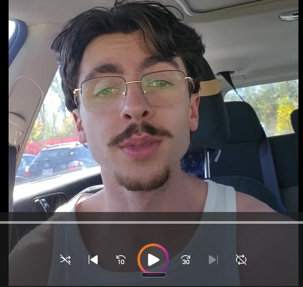
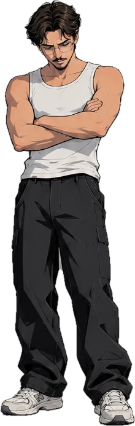
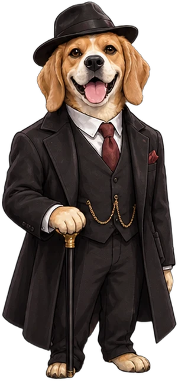

<!doctype html>
<html lang="fr">
<head>
<meta charset="utf-8">
<meta name="viewport" content="width=device-width, initial-scale=1, viewport-fit=cover">
<meta name="apple-mobile-web-app-capable" content="yes">
<meta name="theme-color" content="#000">
<title>Full demo</title>
<script>
// a brand-new profile (first visit, or just reset in the settings) starts with the onboarding: what you're in the mood for,
// then that taste's opening; it comes back here after, with the taste kept (smtDemo.onb)
try {
  if (!Object.keys(localStorage).some((k) => k === 'smt-name' || (k.startsWith('smtDemo.') && k !== 'smtDemo.opts')))
    location.replace('onboarding.html?v=4&new=1&back=' + encodeURIComponent(location.pathname.split('/').pop() + location.search));
} catch { /* no storage: straight in */ }
</script>
<link rel="preconnect" href="https://fonts.googleapis.com">
<link rel="stylesheet" href="https://fonts.googleapis.com/css2?family=Nunito:wght@600;800&family=Yeseva+One&display=swap">
<style>
/* Full demo: the community's demo stories, Netflix-style. Same 9:16 stage as the game (1em = 1% of its height).
   Every piece has alternatives: ‹ › at the top flips the layout, ⚙ mixes the rest (live dot, save, details, ...). */
:root {
  --bg: #000; --card: #161618; --line: #2c2c2e; --fg: #f5f5f7; --mute: #8e8e93;
  --stranger: #34c759; --rose: #ff4f8b; --gold: #ffcc4d;
  --ui: -apple-system, BlinkMacSystemFont, system-ui, 'Segoe UI', sans-serif;
  --display: 'Yeseva One', Georgia, serif;
  color-scheme: dark;
}
html, body { height: 100%; margin: 0; background: #000; overflow: hidden; }
[hidden] { display: none !important; }
body { font-family: var(--ui); color: var(--fg); -webkit-tap-highlight-color: transparent; user-select: none; }
button { font: inherit; color: inherit; background: none; border: 0; padding: 0; cursor: pointer; }
svg { display: block; fill: currentColor; }
#stage { position: absolute; left: 50%; top: 50%; transform: translate(-50%, -50%); overflow: hidden; background: var(--bg); }

/* ---- top bar: back to the app, the layout switcher, the options ---- */
#top { position: absolute; left: 0; right: 0; top: 0; height: 9em; z-index: 20; display: flex; align-items: center; gap: 1em; padding: 0 3.5%; box-sizing: border-box; background: linear-gradient(#000 55%, transparent); }
.round { width: 6.4em; height: 6.4em; border-radius: 50%; background: none; filter: drop-shadow(0 0 .4em rgba(0,0,0,.7)); display: grid; place-items: center; flex: none; }
.round svg { width: 3em; height: 3em; }
#switch { flex: 1; display: flex; align-items: center; justify-content: center; gap: .6em; min-width: 0; }
#switch .round { width: 5.2em; height: 5.2em; }
#vName { font-size: 2.2em; font-weight: 700; white-space: nowrap; overflow: hidden; text-overflow: ellipsis; padding: .45em .9em; border-radius: 2em; background: rgba(255,255,255,.09); }
#vName b { color: var(--gold); margin-right: .25em; }
body.t-saved #switch, body.t-add #switch, body.t-home #switch, body.t-social #switch, body.s-current #switch { visibility: hidden; }
body:not(.t-social) .gearBtn { visibility: hidden; }   /* the UI settings: in Social only */
body.s-current.t-explore #top { background: none; }
body.s-current.t-explore #top [data-act=back] { visibility: hidden; }

/* ---- pages ---- */
#views { position: absolute; left: 0; right: 0; top: 0; bottom: 9.5em; isolation: isolate; z-index: 0; }
body.tabs-pill #views { bottom: 0; }
.view { position: absolute; inset: 0; overflow-y: auto; overflow-x: hidden; padding: 9.5em 0 4em; box-sizing: border-box; scrollbar-width: none; }
.view::-webkit-scrollbar { display: none; }
body.tabs-pill .view { padding-bottom: 14em; }
.h2 { font-size: 2.5em; font-weight: 800; margin: 1.2em 0 .55em; padding: 0 1.4em; letter-spacing: -.01em; }
.h2 small { font-size: .62em; color: var(--mute); font-weight: 600; margin-left: .5em; }
.pad { padding: 0 3.5%; }

/* ---- tabs (bottom) ---- */
#tabs { position: absolute; left: 0; right: 0; bottom: 0; height: 9.5em; z-index: 20; transform: translateZ(0); display: flex; background: rgba(12,12,14,.96); border-top: .1em solid var(--line); }
#tabs button { flex: 1; display: flex; flex-direction: column; align-items: center; justify-content: center; gap: .5em; color: var(--mute); position: relative; }
#tabs button.on { color: var(--fg); }
#tabs svg { width: 3.4em; height: 3.4em; }
#tabs span { font-size: 1.6em; font-weight: 600; }
#tabs .main i { width: 6em; height: 4.4em; border-radius: 1.4em; background: var(--fg); color: #000; display: grid; place-items: center; }
#tabs .main i svg { width: 3em; height: 3em; }
body.tabs-icons #tabs span { display: none; }
body.tabs-pill #tabs { left: 12%; right: 12%; bottom: 2.6em; height: 8em; border-radius: 4em; border: .1em solid rgba(255,255,255,.12); background: rgba(30,30,34,.82); backdrop-filter: blur(1.5em); -webkit-backdrop-filter: blur(1.5em); box-shadow: 0 1em 3em rgba(0,0,0,.6); }
body.tabs-pill #tabs span { display: none; }

/* ---- a cover: 3:4, decor + cast, the title in the poster font ---- */
.cv { position: relative; isolation: isolate; aspect-ratio: 3 / 4; overflow: hidden; border-radius: 1.4em; background: #222; container-type: inline-size; }
.cvbg, .cvimg { position: absolute; inset: 0; width: 100%; height: 100%; background-size: cover; object-fit: cover; }
.sp { position: absolute; bottom: -3%; height: 92%; transform: translateX(-50%) scaleX(var(--fx, 1)); filter: drop-shadow(0 0 2cqw rgba(0,0,0,.6)); }
.n2 .sp { height: 84%; } .n2 .sp.p0 { left: 30%; } .n2 .sp.p1 { left: 72%; }
.n3 .sp { height: 76%; } .n3 .sp.p0 { left: 20%; } .n3 .sp.p1 { left: 50%; height: 82%; z-index: 1; } .n3 .sp.p2 { left: 80%; }
.n1 .sp { left: 50%; }
.cvfade { position: absolute; inset: 0; z-index: 2; background: linear-gradient(transparent 45%, rgba(0,0,0,.85)); }
.cvt { position: absolute; z-index: 3; left: 6%; right: 6%; bottom: 6%; font-family: var(--display); font-size: 11cqw; line-height: 1.02; text-shadow: 0 .1em .4em rgba(0,0,0,.8), 0 0 1.2em var(--glow, transparent); }
.ct { font-size: 1.9em; font-weight: 700; margin-top: .45em; white-space: nowrap; overflow: hidden; text-overflow: ellipsis; }
.cs { font-size: 1.5em; color: var(--mute); margin-top: .1em; white-space: nowrap; overflow: hidden; text-overflow: ellipsis; }
.card { position: relative; cursor: pointer; min-width: 0; }
.cvw { position: relative; container-type: inline-size; }

/* marks on a cover: players top-left, "bring your character" next to it, live top-right, save bottom-right */
.marks { position: absolute; left: 4%; top: 4%; display: flex; gap: .5em; align-items: center; z-index: 3; font-size: max(.75em, 2.6cqw); }
.mk { height: 3.4em; padding: 0 .2em; filter: drop-shadow(0 0 .3em rgba(0,0,0,.9)); display: flex; align-items: center; gap: .35em; font-weight: 800; font-size: 1em; }
.mk svg { width: 2.1em; height: 2.1em; }
.ppl { display: flex; }
.ppl svg + svg { margin-left: -.85em; }
/* every icon is white; a saved one is just filled */
.mk span { font-size: 1.5em; }
.ribbon { position: absolute; left: -18%; top: 9%; width: 70%; transform: rotate(-38deg); background: var(--gold); color: #000; text-align: center; font-weight: 900; font-size: max(.9em, 3.3cqw); letter-spacing: .06em; padding: .35em 0; z-index: 2; box-shadow: 0 .3em .8em rgba(0,0,0,.4); }
.ribbon + .marks { left: 4%; top: auto; bottom: 4%; }
.cvw:has(.cvt) .ribbon + .marks { left: auto; right: 4%; top: 22%; flex-direction: column; align-items: flex-end; }
.save { position: absolute; right: 4%; bottom: 4%; z-index: 3; width: max(4.6em, 15cqw); height: max(4.6em, 15cqw); filter: drop-shadow(0 0 .4em rgba(0,0,0,.8)); display: grid; place-items: center; }
.save svg { width: 55%; height: 55%; }
.cvw:has(.save) .cvt { right: 22%; }

/* live: a stranger waiting (green) / a friend waiting (pink, their initial) */
@keyframes blink { 50% { opacity: .25; } }
@keyframes pulse { 0% { box-shadow: 0 0 0 0 var(--c); } 70% { box-shadow: 0 0 0 1.2em transparent; } 100% { box-shadow: 0 0 0 0 transparent; } }
.ldot { position: absolute; right: 5%; top: 5%; z-index: 4; width: max(2.4em, 7cqw); height: max(2.4em, 7cqw); border-radius: 50%; border: .3em solid #fff; box-sizing: border-box; background: var(--c); animation: blink 1.1s infinite, pulse 1.6s infinite; display: grid; place-items: center; color: #fff; font-style: normal; font-weight: 900; font-size: 1em; }
.ldot.f { width: max(3.2em, 10cqw); height: max(3.2em, 10cqw); animation: pulse 1.4s infinite; border: .25em solid #fff; box-sizing: border-box; }
.ldot.f b { font-size: max(1.4em, 5cqw); }
.lbadge { position: absolute; right: 4%; top: 4%; z-index: 4; display: flex; align-items: center; gap: .45em; padding: .45em .8em; border-radius: 1.4em; background: rgba(0,0,0,.72); font-size: max(1.15em, 3.6cqw); font-weight: 800; white-space: nowrap; }
.lbadge i { width: .7em; height: .7em; border-radius: 50%; background: var(--c); animation: blink 1.1s infinite; }
.lbadge.f { background: var(--rose); color: #fff; }
.lbadge.f i { background: #fff; }
.card.ring-s .cv { box-shadow: 0 0 0 .35em var(--stranger), 0 0 2em rgba(52,199,89,.5); animation: ringS 1.6s infinite; }
.card.ring-f .cv { box-shadow: 0 0 0 .35em var(--rose), 0 0 2em rgba(255,79,139,.55); animation: ringF 1.3s infinite; }
@keyframes ringS { 50% { box-shadow: 0 0 0 .35em rgba(52,199,89,.25), 0 0 .5em transparent; } }
@keyframes ringF { 50% { box-shadow: 0 0 0 .35em rgba(255,79,139,.25), 0 0 .5em transparent; } }
.lav { position: absolute; right: 4%; top: 4%; z-index: 4; width: max(4em, 13cqw); height: max(4em, 13cqw); border-radius: 50%; background: var(--c); border: .3em solid #000; box-sizing: border-box; display: grid; place-items: center; font-weight: 900; font-size: 1em; animation: pulse 1.4s infinite; }
.lav b { font-size: max(1.6em, 5.5cqw); }
.lav.s::after { content: ''; position: absolute; right: -.2em; bottom: -.2em; width: 1.4em; height: 1.4em; border-radius: 50%; background: var(--stranger); border: .25em solid #000; animation: blink 1.1s infinite; }
.lav + .lav { right: calc(4% + max(3em, 9cqw)); }

/* ---- chips (filters, people) ---- */
.chips { display: flex; gap: .8em; overflow-x: auto; padding: .4em 3.5% 1.2em; scrollbar-width: none; }
.chips::-webkit-scrollbar { display: none; }
.chip { flex: none; font-size: 1.8em; font-weight: 700; padding: .5em 1em; border-radius: 2em; background: #1c1c1e; color: #d1d1d6; display: flex; align-items: center; gap: .4em; }
.chip.on { background: var(--fg); color: #000; }
.av { position: relative; overflow: hidden; width: 1.5em; height: 1.5em; border-radius: 50%; background: var(--c); color: #fff; display: inline-grid; place-items: center; font-size: .75em; font-weight: 900; flex: none; }
.chip .av { font-size: .8em; }

/* ---- buttons ---- */
.btn { font-size: 2.2em; font-weight: 800; height: 2.6em; padding: 0 1.2em; border-radius: 1.3em; display: inline-flex; align-items: center; justify-content: center; gap: .45em; background: #2c2c2e; color: var(--fg); position: relative; white-space: nowrap; }
.btn svg { width: 1.2em; height: 1.2em; }
.btn.main { background: var(--fg); color: #000; }
.btn.wide { flex: 1; }
.btn.ghost { background: rgba(255,255,255,.12); }
.row .btn.ghost[data-act="save"] { width: 2.6em; padding: 0; flex: none; }   /* Sauver beside Jouer: the icon alone */
.btn .pd { position: absolute; top: -.25em; right: -.25em; width: .9em; height: .9em; border-radius: 50%; background: var(--c); border: .18em solid #000; animation: blink 1s infinite, pulse 1.5s infinite; }
.btn .pd.f { width: 1.3em; height: 1.3em; display: grid; place-items: center; color: #fff; font-size: .7em; font-weight: 900; animation: pulse 1.3s infinite; width: 1.9em; height: 1.9em; top: -.6em; right: -.6em; }
.btn.live-s { background: var(--stranger); color: #000; animation: pulse 1.6s infinite; --c: rgba(52,199,89,.7); }
.btn.live-f { background: var(--rose); color: #fff; animation: pulse 1.3s infinite; --c: rgba(255,79,139,.7); }
.btn.live-f .av { border: .12em solid #fff; font-size: .7em; width: 1.8em; height: 1.8em; }
.row { display: flex; gap: 1em; align-items: center; }

/* ---- layout A: rows ---- */
.hero { position: relative; height: 72em; overflow: hidden; margin-top: -9.5em; }
.hero .blur { position: absolute; inset: -10%; background-size: cover; background-position: center; filter: blur(3em) brightness(.55) saturate(1.3); }
.hero .cvw { position: absolute; left: 50%; top: 11em; width: 36em; transform: translateX(-50%); box-shadow: 0 2em 5em rgba(0,0,0,.7); border-radius: 1.4em; }
.hero .cvw .cv { border-radius: 1.4em; }
.hero .info { position: absolute; left: 0; right: 0; bottom: 0; padding: 4em 4% 2em; background: linear-gradient(transparent, #000 50%); text-align: center; }
.hero .info .row { justify-content: center; }
.hero .tags { font-size: 1.7em; color: #c7c7cc; margin-bottom: .9em; }
.shelf { display: flex; gap: 1.2em; overflow-x: auto; padding: 0 3.5% .5em; scroll-snap-type: x proximity; scrollbar-width: none; }
.shelf::-webkit-scrollbar { display: none; }
.shelf .card { flex: none; width: 17.5em; scroll-snap-align: start; }
.shelf.big .card { width: 26em; }

/* ---- layout B/C: grids ---- */
.grid { display: grid; gap: 1.4em 1.2em; padding: 0 3.5%; }
.g2 { grid-template-columns: 1fr 1fr; }
.g3 { grid-template-columns: 1fr 1fr 1fr; gap: 1em .8em; }
.g3 .ct { font-size: 1.6em; }

/* ---- layout D: full-screen feed (snap) ---- */
#explore.feedMode { padding: 0; scroll-snap-type: y mandatory; }
.fi { position: relative; height: 100%; scroll-snap-align: start; scroll-snap-stop: always; overflow: hidden; }
.fi .blur { position: absolute; inset: -10%; background-size: cover; background-position: center; filter: blur(3em) brightness(.5); }
.fi .cvw { position: absolute; left: 7%; right: 18%; top: 10em; }
.fi .cvw .cv { box-shadow: 0 2em 4em rgba(0,0,0,.6); }
.fi .side { position: absolute; right: 2.5%; top: 26em; display: flex; flex-direction: column; gap: 2.6em; align-items: center; z-index: 4; }
.fi .side button { display: flex; flex-direction: column; align-items: center; gap: .4em; }
.fi .side i { width: 6em; height: 6em; filter: drop-shadow(0 0 .4em rgba(0,0,0,.8)); display: grid; place-items: center; }
.fi .side svg { width: 3em; height: 3em; }
.fi .side span { font-size: 1.4em; font-weight: 700; }
.fi .txt { position: absolute; left: 0; right: 0; bottom: 0; padding: 7em 6% 3em; background: linear-gradient(transparent, rgba(0,0,0,.92) 35%); }
.fi h3 { font-family: var(--display); font-weight: 400; font-size: 4em; margin: 0 0 .25em; line-height: 1.05; }
.pitch { font-size: 1.95em; line-height: 1.38; color: #d1d1d6; margin: 0 0 1.1em; }
.meta { display: flex; flex-wrap: wrap; align-items: center; gap: .7em; margin-bottom: 1.1em; font-size: 1em; }
.meta .mk { font-size: .85em; }
.meta .by { font-size: 1.7em; color: var(--mute); }
.feedhint { position: absolute; left: 50%; top: 9.5em; transform: translateX(-50%); font-size: 1.5em; color: rgba(255,255,255,.6); z-index: 5; pointer-events: none; }

/* ---- layout E: carousel ---- */
.car { display: flex; overflow-x: auto; scroll-snap-type: x mandatory; padding: 2em 21% 1em; gap: 0; scrollbar-width: none; }
.car::-webkit-scrollbar { display: none; }
.car .card { flex: none; width: 58%; scroll-snap-align: center; transition: transform .12s linear, opacity .12s linear; transform-origin: 50% 60%; }
.car .card .cv { box-shadow: 0 2em 4em rgba(0,0,0,.6); }
.carInfo { padding: 1em 7% 0; text-align: center; }
.carInfo h3 { font-family: var(--display); font-weight: 400; font-size: 3.8em; margin: 0 0 .3em; }
.carInfo .meta, .carInfo .row { justify-content: center; }
.carBg { position: absolute; inset: 0; background-size: cover; background-position: center; filter: blur(4em) brightness(.35); transition: background-image .3s; z-index: -1; }

/* ---- layout F: swipe stack ---- */
.deck { position: relative; height: 64em; margin: 2.5em 9% 0; }
.deck .card { position: absolute; inset: 0 0 auto 0; transition: transform .25s, opacity .25s; touch-action: none; }
.deck .card .cv { box-shadow: 0 1.5em 4em rgba(0,0,0,.7); border-radius: 2em; }
.deck .card:not(.k0) .ct { opacity: 0; }
.deck .card.k1 { transform: translateY(2.2em) scale(.95); opacity: .7; }
.deck .card.k2 { transform: translateY(4.4em) scale(.9); opacity: .4; }
.deck .stamp { position: absolute; top: 10%; z-index: 9; font-size: 3.4em; font-weight: 900; padding: .1em .5em; border: .14em solid; border-radius: .3em; opacity: 0; letter-spacing: .05em; }
.deck .stamp.yes { left: 8%; color: var(--gold); transform: rotate(-14deg); }
.deck .stamp.no { right: 8%; color: #ff453a; transform: rotate(14deg); }
.deckBtns { display: flex; justify-content: center; gap: 3em; margin-top: 3em; }
.deckBtns button { width: 9em; height: 9em; border-radius: 50%; background: #1c1c1e; display: grid; place-items: center; }
.deckBtns button svg { width: 4em; height: 4em; }
.deckBtns .pl { background: var(--fg); color: #000; width: 11em; height: 11em; }
.deckTip { text-align: center; font-size: 1.6em; color: var(--mute); margin-top: 1.2em; }

/* ---- layout G: list ---- */
.li { display: flex; gap: 1.6em; padding: 1.2em 3.5%; border-bottom: .1em solid #111; cursor: pointer; }
.li .body { flex: 1; min-width: 0; display: flex; flex-direction: column; }
.li h3 { font-size: 2.5em; margin: .1em 0 .3em; font-weight: 800; }
.li .pitch { font-size: 1.75em; display: -webkit-box; -webkit-line-clamp: 4; -webkit-box-orient: vertical; overflow: hidden; margin-bottom: .8em; }
.li .meta { margin-bottom: .8em; }
.li .btn { font-size: 1.9em; height: 2.4em; }
.li .row { margin-top: auto; }

/* ---- layout H: magazine ---- */
.mag { display: grid; grid-template-columns: 2fr 1fr; gap: 1.2em; padding: 0 3.5%; margin-bottom: 1.2em; }
.mag.flip { grid-template-columns: 1fr 2fr; }
.mag .col { display: flex; flex-direction: column; gap: 1.2em; justify-content: space-between; }
.mag.flip .big { order: 2; }
.mag .big .cvt { font-size: 9cqw; }

/* ---- layout I: live first ---- */
.rooms { display: flex; gap: 1.4em; overflow-x: auto; padding: 0 3.5% 1em; scrollbar-width: none; }
.rooms::-webkit-scrollbar { display: none; }
.room { flex: none; width: 40em; display: flex; gap: 1.4em; padding: 1.4em; border-radius: 2em; background: #141416; border: .15em solid var(--c); cursor: pointer; }
.room .cvw { width: 13em; flex: none; }
.room .body { display: flex; flex-direction: column; min-width: 0; flex: 1; }
.room h4 { margin: 0 0 .3em; font-size: 2.2em; white-space: nowrap; overflow: hidden; text-overflow: ellipsis; }
.room .who { display: flex; align-items: center; gap: .5em; font-size: 1.8em; font-weight: 700; margin-bottom: .4em; }
.room .who .av { width: 1.8em; height: 1.8em; font-size: .75em; animation: pulse 1.4s infinite; }
.room .seatsMini { display: flex; gap: .5em; margin: .3em 0 auto; }
.room .seatsMini i { width: 3.2em; height: 3.2em; border-radius: 50%; border: .2em dashed #48484a; display: grid; place-items: center; font-style: normal; font-size: 1em; }
.room .seatsMini i.full { border: 0; background: var(--c); }
.room .btn { font-size: 1.8em; height: 2.3em; margin-top: .6em; }

/* ---- layout J: spotlight ---- */
.spot { position: absolute; inset: 0; overflow: hidden; }
.spot .blur { position: absolute; inset: -10%; background-size: cover; background-position: center; filter: blur(3.5em) brightness(.45); transition: background-image .3s; }
.spot .cvw { position: absolute; left: 50%; top: 10em; width: 31em; transform: translateX(-50%); }
.spot .cvw .cv { box-shadow: 0 2em 4em rgba(0,0,0,.6); }
.spot .info { position: absolute; left: 0; right: 0; top: 53em; padding: 0 6%; text-align: center; }
.spot .info h3 { font-family: var(--display); font-weight: 400; font-size: 3.6em; margin: 0 0 .3em; }
.spot .info .meta, .spot .info .row { justify-content: center; }
.spot .info .pitch { font-size: 1.8em; display: -webkit-box; -webkit-line-clamp: 2; -webkit-box-orient: vertical; overflow: hidden; }
.spot .strip { position: absolute; left: 0; right: 0; bottom: 1.5em; display: flex; gap: 1em; overflow-x: auto; padding: 0 4%; scrollbar-width: none; }
.spot .strip::-webkit-scrollbar { display: none; }
.spot .strip .card { flex: none; width: 10em; opacity: .55; transition: opacity .2s, transform .2s; }
.spot .strip .card.sel { opacity: 1; transform: translateY(-.8em); }
.spot .strip .card.sel .cv { box-shadow: 0 0 0 .3em var(--fg); }
#explore.spotMode { padding: 0; overflow: hidden; }

/* ---- details ---- */
#detail { position: absolute; inset: 0; z-index: 40; }
/* the series (Jouer in Explorer): the cover up top, then what it is, Jouer, its episodes */
#series { position: absolute; inset: 0; z-index: 60; background: #000; overflow-y: auto; overflow-x: hidden; scrollbar-width: none; animation: fade .25s; }
#series::-webkit-scrollbar { display: none; }
.sr-hero { position: relative; height: 62%; container-type: inline-size; }
.sr-hero .cv { height: 100%; aspect-ratio: auto; border-radius: 0; }
.sr-hero .cvt, .sr-hero .cvfade { display: none; }
.sr-hero::after { content: ''; position: absolute; inset: 0; background: linear-gradient(transparent 45%, #000); pointer-events: none; }
.sr-body { position: relative; margin-top: -9em; padding: 0 6% 5em; }
.sr-body .pitch { font-size: 2em; line-height: 1.45; color: #d1d1d6; margin: 1em 0 2em; }
.sr-body .h2, .hmore .h2 { padding-left: 0; padding-right: 0; }
.sr-x { position: absolute; top: 2.5em; left: 3%; z-index: 5; width: 6.4em; height: 6.4em; display: grid; place-items: center; filter: drop-shadow(0 0 .4em rgba(0,0,0,.8)); }
.sr-x svg { width: 3.2em; height: 3.2em; }
.veil { position: absolute; inset: 0; background: #000; }
.veil .cvw { position: absolute; left: 0; right: 0; top: 0; }
.veil .cv { border-radius: 0; }
.veil .cvt { display: none; }
.veil .shade { position: absolute; left: 0; right: 0; bottom: 0; top: 34em; background: linear-gradient(transparent, rgba(0,0,0,.88) 18%, #000 32%); }
.veil .txt { position: absolute; left: 0; right: 0; bottom: 0; padding: 0 6% 4em; }
.dTitle { font-family: var(--display); font-weight: 400; font-size: 4.6em; line-height: 1.04; margin: 0 0 .3em; }
.x { position: absolute; top: 2.5em; right: 4%; z-index: 5; width: 6.4em; height: 6.4em; filter: drop-shadow(0 0 .4em rgba(0,0,0,.8)); display: grid; place-items: center; }
.x svg { width: 3em; height: 3em; }
.dim { position: absolute; inset: 0; background: rgba(0,0,0,.72); backdrop-filter: blur(.6em); -webkit-backdrop-filter: blur(.6em); animation: fade .2s; }
@keyframes fade { from { opacity: 0; } }
@keyframes rise { from { transform: translateY(100%); } }
@keyframes pop { from { transform: translate(-50%, -50%) scale(.85); opacity: 0; } }
.zoom { position: absolute; left: 50%; top: 50%; width: 84%; transform: translate(-50%, -50%); animation: pop .22s ease-out; }
.zoom .cv { border-radius: 2em; box-shadow: 0 2em 5em rgba(0,0,0,.8); }
.zoom .cvt { display: none; }
.zoom .over { position: absolute; left: 0; right: 0; bottom: 0; padding: 18% 6% 6%; background: linear-gradient(transparent, rgba(0,0,0,.92) 22%, #000); border-radius: 0 0 2em 2em; }
.zoom .dTitle { font-size: 3.6em; }
.zoom .pitch { font-size: 1.75em; margin-bottom: .9em; }
.zoom .meta { margin-bottom: .8em; }
.zoom .btn { font-size: 2em; }
.sheetD { position: absolute; left: 0; right: 0; bottom: 0; background: #111113; border-radius: 3em 3em 0 0; padding: 1.4em 5% 4em; animation: rise .25s ease-out; }
.grab { width: 7em; height: .7em; border-radius: .35em; background: #3a3a3c; margin: 0 auto 2em; }
.sheetD .top { display: flex; gap: 1.8em; margin-bottom: 1.6em; }
.sheetD .cvw { width: 19em; flex: none; }
.sheetD .dTitle { font-size: 3.4em; }

/* ---- generic sheet (save with, options, create) ---- */
#sheet { position: absolute; inset: 0; z-index: 95; }
#sheet .box { position: absolute; left: 0; right: 0; bottom: 0; max-height: 88%; overflow-y: auto; background: #111113; border-radius: 3em 3em 0 0; padding: 1.4em 5% 4em; animation: rise .25s ease-out; box-sizing: border-box; scrollbar-width: none; }
#sheet h3 { font-size: 3em; margin: 0 0 .3em; }
#sheet .lead { font-size: 1.9em; color: var(--mute); margin: 0 0 1.4em; line-height: 1.35; }
#sheet .pick { display: flex; flex-direction: column; gap: 1em; }
#sheet .fsCv { width: 48%; margin: 0 auto 2em; }
#sheet .fsCv .cv { border-radius: 1.2em; }
#sheet .grid { padding: 0; margin-bottom: 2em; }
#sheet .h2:has(+ .grid) { padding: 0; }
#sheet h3 .av { width: 1.2em; height: 1.2em; font-size: .7em; vertical-align: -.25em; margin-right: .3em; }
#sheet .pitch { font-size: 1.9em; line-height: 1.4; color: #d1d1d6; margin: 0 0 2em; }
.people { display: grid; grid-template-columns: repeat(3, 1fr); gap: 1.4em; margin-bottom: 2em; }
.people button { display: flex; flex-direction: column; align-items: center; gap: .6em; padding: 1.4em 0; border-radius: 1.6em; background: #1c1c1e; position: relative; }
.people .av { width: 6em; height: 6em; font-size: 1.1em; }
.people .av b { font-size: 2.6em; }
.people span { font-size: 1.8em; font-weight: 700; }
.people small { font-size: 1.3em; color: var(--stranger); font-weight: 700; }
.people button.on { background: #2c2c2e; box-shadow: inset 0 0 0 .3em var(--fg); }
.people button.on::after { content: '✓'; position: absolute; top: .5em; right: .7em; font-size: 2em; font-weight: 900; }
.opt { margin-bottom: 2em; }
.opt > b { display: block; font-size: 1.9em; margin-bottom: .2em; }
.opt > p { margin: 0 0 .7em; font-size: 1.5em; color: var(--mute); }
.opt .chips { padding: 0; flex-wrap: wrap; overflow: visible; }
.opt .chip { font-size: 1.65em; }
.opt .chip em { font-style: normal; color: var(--gold); font-weight: 900; margin-right: .2em; }
.opt .chip.on em { color: #b8860b; }

/* ---- saved / add pages ---- */
.empty { text-align: center; padding: 14em 10% 0; color: var(--mute); }
.empty svg { width: 8em; height: 8em; margin: 0 auto 2em; opacity: .5; }
.empty p { font-size: 2.1em; line-height: 1.4; margin: 0; }
/* En cours: big cards (where you stopped), the centred one's title and Continuer under it */
.car.home { padding: 1em 13% 0; }
.car.home .card { width: 100%; }
.car.home .cv { border-radius: 2em; }
/* the opened-up card: from the card's place to the whole screen, the cover giving way to the scene and its last 3 lines */
.hx { position: absolute; left: 0; top: 0; width: 100%; height: 100%; z-index: 2; overflow: hidden; pointer-events: none; opacity: 0; border-radius: 2em; container-type: inline-size;
  transition: left .55s cubic-bezier(.45,0,.25,1), top .55s cubic-bezier(.45,0,.25,1), width .55s cubic-bezier(.45,0,.25,1), height .55s cubic-bezier(.45,0,.25,1), border-radius .55s, opacity .25s; }
.hx.on { opacity: 1; }
.hx.big { border-radius: 0; }
.hx-cover, .hx-scene { position: absolute; inset: 0; overflow: hidden; container-type: inline-size; transition: opacity .6s .25s; }
.hx-cover .cv, .hx-scene .cv { height: 100%; aspect-ratio: auto; border-radius: 0; }
.hx-scene { opacity: 0; }
.hx.big .hx-scene { opacity: 1; }
.hx.big .hx-cover { opacity: 0; }
.hx-scene::after { content: ''; position: absolute; inset: 0; pointer-events: none; background: linear-gradient(transparent 60%, rgba(0,0,0,.85) 88%); }
/* a story in the game: its preview frame, shown once the game says it's ready (the cover stays until then) */
.hx-scene iframe { position: absolute; inset: 0; width: 100%; height: 100%; border: 0; }
.hx.big.wait .hx-scene { opacity: 0; }
.hx.big.wait .hx-cover { opacity: 1; }
/* En cours: a sideways swipe moves the stories, never the browser's back / forward */
html, body, #home, #homeCar { overscroll-behavior-x: none; }
/* the preview opened up: the bottom bar steps aside */
#tabs { transition: transform .35s ease; }
body.hxbig #tabs { transform: translateY(100%); }
body.tabs-pill.hxbig #tabs { transform: translateY(calc(100% + 3em)); }
#home .carInfo { position: relative; z-index: 3; }.sdone { position: absolute; left: 50%; top: 45%; transform: translate(-50%, -50%); z-index: 5; font-size: 2em; font-weight: 800; padding: .5em 1.1em; border-radius: 2em; background: rgba(0,0,0,.6); white-space: nowrap; }
#home .carInfo { padding-top: 2.4em; }
#home .carInfo .btn { width: 70%; }
/* slide down: the infos and the episodes of the centred one, and taking it out of En cours */
.hfirst { min-height: 100%; display: flex; flex-direction: column; }
.hfirst .carInfo { flex: 1; display: flex; flex-direction: column; align-items: center; }
.hdown { margin-top: auto; padding: 1.4em 0 0; display: flex; flex-direction: column; align-items: center; gap: .2em; color: rgba(255,255,255,.6); font-size: 1.5em; font-weight: 600; }
.hdown svg { width: 1.6em; height: 1.6em; animation: hdown 1.8s ease-in-out infinite; }
@keyframes hdown { 50% { transform: translateY(.3em); } }
.hmore { position: relative; z-index: 3; margin: 2em 0 0; padding: 2.6em 6% 2em; background: #0c0c0e; border-radius: 2.4em 2.4em 0 0; border-top: .1em solid var(--line); }
.hmore .pitch { font-size: 2em; line-height: 1.45; color: #d1d1d6; margin: 1em 0 0; }
.hmore .meta { justify-content: flex-start; }
.eps { display: flex; flex-direction: column; gap: 1.2em; margin: 1em 0 3em; }
.ep { display: flex; gap: 1.6em; align-items: center; text-align: left; width: 100%; padding: 1em; border-radius: 1.6em; background: var(--card); color: var(--fg); }
.ep .th { width: 7em; aspect-ratio: 3 / 4; flex: none; border-radius: .9em; overflow: hidden; container-type: inline-size; }
.ep .th img { width: 100%; height: 100%; object-fit: cover; display: block; }
.ep .th .cv { border-radius: 0; height: 100%; }
.ep > div { flex: 1; min-width: 0; }
.ep small { display: block; font-size: 1.4em; font-weight: 800; letter-spacing: .14em; text-transform: uppercase; color: var(--mute); }
.ep b { display: block; font-size: 2.2em; margin: .15em 0; }
.ep p { margin: 0; font-size: 1.6em; line-height: 1.35; color: var(--mute); }
.ep .st { flex: none; width: 4.4em; height: 4.4em; display: grid; place-items: center; color: var(--mute); }
.ep .st svg { width: 2.4em; height: 2.4em; }
.ep.now { box-shadow: inset 0 0 0 .2em #fff; }
.ep.now .st { color: #fff; }
.ep.done .st { color: #8be2a2; }
.ep.lock { opacity: .4; pointer-events: none; }
.hout { display: flex; align-items: center; justify-content: center; gap: .6em; width: 100%; padding: 1.2em; border-radius: 1.6em; border: .1em solid var(--line); color: #ff6b6b; font-size: 1.9em; font-weight: 600; }
.hout svg { width: 1.2em; height: 1.2em; }
.where { font-size: 1.8em; color: #d1d1d6; margin: 0 0 1.2em; display: flex; justify-content: center; align-items: center; gap: .4em; }
.where .av { width: 1.6em; height: 1.6em; }
/* a player's face (their character), cropped from the full figure */
.mug { position: absolute; inset: 0; width: 100%; height: 100%; object-fit: cover; object-position: 50% 0; transform: scale(2.4); transform-origin: 50% 8%; }
.ldot.f, .lav, .pd.f, .room .seatsMini i { overflow: hidden; }
.room .seatsMini i { position: relative; }

/* ---- All › Test bulles ---- */
.tlead { font-size: 1.8em; color: var(--mute); margin: 0 6% 1em; line-height: 1.35; }
.tf.app iframe { position: absolute; inset: 0; width: 100%; height: 100%; border: 0; }
.tf { position: relative; width: 78%; margin: 0 auto 1.4em; aspect-ratio: 9 / 16; overflow: hidden; border-radius: 2em; background: #000; cursor: pointer; container-type: inline-size; }
.tw { position: absolute; inset: 0; transition: transform .4s ease; }
.tbg { position: absolute; inset: 0; }
.ta { position: absolute; bottom: 3%; height: 64%; transform: translateX(-50%) scaleX(var(--fx, 1)); }
.tc { position: absolute; top: 3%; right: 5%; z-index: 5; font-size: 3.4cqw; font-weight: 600; color: rgba(255,255,255,.75); text-shadow: 0 0 .4em #000; }
.tn { position: absolute; left: 7%; right: 7%; bottom: 7%; z-index: 4; text-align: center; font-family: 'Nunito', var(--ui); font-style: italic; font-size: 5cqw; font-weight: 700; color: #fff; text-shadow: 0 .1em .6em #000; }
.tn.g { top: 7%; bottom: auto; background: rgba(22,18,30,.9); border: .3cqw solid rgba(255,255,255,.14); border-radius: 2.6cqw; padding: 3cqw 4cqw; font-size: 3.6cqw; font-weight: 600; text-shadow: none; }
/* 3: Full demo's bubble (big, bold), just above the heads, tail down */
.tb { position: absolute; bottom: 69%; z-index: 4; box-sizing: border-box; background: #fffdf9; color: #1d1a24; border-radius: 4cqw; padding: 4.6cqw 4.4cqw 3.4cqw; font-family: 'Nunito', var(--ui); font-size: 4.6cqw; font-weight: 700; line-height: 1.3; box-shadow: 0 1em 3em rgba(0,0,0,.35); }
.tb b { position: absolute; top: -3.4cqw; left: 4cqw; font-size: 3.4cqw; font-weight: 800; background: #e2557a; color: #fff; padding: .35em .9em; border-radius: 1em; }
.tb::after { content: ''; position: absolute; top: 100%; left: var(--t); margin-left: -2.4cqw; border: 2.4cqw solid transparent; border-top-color: #fffdf9; }
/* 2: like the game's: chest height, smaller text, coloured name tag, tail up to the speaker */
.tb.g { bottom: auto; top: 54%; border-radius: 2.4cqw; border: .35cqw solid #e6dff5; padding: 3.6cqw 3.4cqw 2.6cqw; font-size: 3.6cqw; font-weight: 600; }
.tb.g b { font-style: italic; text-transform: uppercase; letter-spacing: .05em; font-size: 2.6cqw; top: -2.8cqw; }
.tb.g::after { top: auto; bottom: 100%; border-top-color: transparent; border-bottom-color: #fffdf9; }
/* 4: the game's own bubble (index.html #bubble), its sizes turned into the frame's width */
.gb { position: absolute; left: 7%; right: 7%; top: 53%; z-index: 4; background: #fffdf9; color: #1d1a24; border: .53cqw solid var(--rim, #cdbdf0); border-radius: 3.6cqw; padding: 4.3cqw 3.9cqw 3.4cqw; box-shadow: 0 1.1cqw 2.8cqw rgba(0,0,0,.35); font-family: 'Nunito', var(--ui); }
.gb p { margin: 0; font-size: 4.18cqw; line-height: 1.32; font-weight: 600; }
.gb b { position: absolute; left: 2.85cqw; top: -5cqw; font-size: 3.56cqw; padding: .32em 1.1em; border-radius: 1em; color: #fff; font-weight: 900; font-style: italic; letter-spacing: .04em; text-transform: uppercase; line-height: 1; box-shadow: 0 .2em .5em rgba(0,0,0,.25); }
.gb i { position: absolute; top: -3.02cqw; margin-left: -1.96cqw; border-left: 1.96cqw solid transparent; border-right: 1.96cqw solid transparent; border-bottom: 3.2cqw solid var(--rim, #cdbdf0); }
.gb i::after { content: ''; position: absolute; left: -1.33cqw; top: .8cqw; border-left: 1.33cqw solid transparent; border-right: 1.33cqw solid transparent; border-bottom: 2.31cqw solid #fffdf9; }
.gb.narr { background: rgba(22,18,30,.9); border-color: rgba(255,255,255,.14); color: #f4eefc; padding-top: 3.2cqw; }
.gb.narr p { font-style: italic; text-align: center; }
/* the feed in a drawn format, and 5's game that shows up once it's ready */
.stage { position: absolute; inset: 0; overflow: hidden; container-type: inline-size; }
.ta.hop { animation: hop .22s ease-out; }   /* the game's hop when someone starts talking */
@keyframes hop { 40% { transform: translateX(-50%) translateY(-.6%) scaleX(var(--fx, 1)); } }
.gframe.late { opacity: 0; transition: opacity .4s; pointer-events: none; }
.gframe.late.on { opacity: 1; }

/* ---- Social ---- */
.prof { margin: 0 3.5%; border-radius: 2.4em; background: #141416; overflow: hidden; }
.prof .me { width: 100%; display: flex; align-items: center; gap: 2em; padding: 2.4em; text-align: left; }
.pp { width: 10em; height: 10em; border-radius: 50%; overflow: hidden; background: #2c2c2e; flex: none; }
.pp img { width: 100%; height: 100%; object-fit: cover; object-position: 50% 0; transform: scale(2.4); transform-origin: 50% 8%; }
.prof .me div { flex: 1; min-width: 0; }
.prof .me b { display: block; font-size: 3em; font-weight: 800; }
.mcs { display: flex; gap: 1.2em; overflow-x: auto; padding: 0 2.4em 2.4em; scrollbar-width: none; }
.mcs::-webkit-scrollbar { display: none; }
.mc { flex: none; width: 12em; height: 17em; border-radius: 1.6em; background: #222225; display: flex; flex-direction: column; align-items: center; justify-content: flex-end; gap: .4em; padding: 1em .4em .9em; box-sizing: border-box; color: inherit; text-decoration: none; }
.mc img { height: 12em; max-width: 100%; object-fit: contain; }
.mc span { font-size: 1.6em; font-weight: 700; }
.mc.on { box-shadow: inset 0 0 0 .3em #fff; }
/* your character's look (re-tap it): big on its colour, the colours, its 3 best poses */
.look .lk-name { display: flex; align-items: center; justify-content: center; gap: .6em; margin: .6em 0 1.6em; color: var(--mute); }
.look .lk-name input { max-width: 80%; background: none; border: 0; border-bottom: .08em solid transparent; color: #fff; font: inherit; font-size: 3.2em; font-weight: 800; text-align: center; padding: 0 0 .05em; outline: none; }
.look .lk-name input:focus { border-bottom-color: rgba(255,255,255,.35); }
.look .lk-name svg { width: 2.6em; height: 2.6em; flex: none; }
.look .lk-big { position: relative; width: 56%; aspect-ratio: 3 / 4; margin: 0 auto 2.6em; border-radius: 2.4em; overflow: hidden; transition: background .2s; }
.look .lk-big img, .look .lk-poses img { position: absolute; left: 4%; right: 4%; bottom: 0; width: 92%; height: 94%; object-fit: contain; object-position: 50% 100%; }
.look .lk-big { cursor: pointer; }
.look .lk-big.pic { background: #1c1c1e !important; display: grid; place-items: center; }
.look .lk-big.pic .pp { width: 70%; height: auto; aspect-ratio: 1; transition: background .2s; }
.look .lk-cols { display: flex; justify-content: center; gap: 1.5em; margin-bottom: 2.8em; }
.look .lk-cols button { width: 4.4em; height: 4.4em; border-radius: 50%; }
.look .lk-cols button.on { box-shadow: 0 0 0 .3em #111113, 0 0 0 .6em #fff; }
.look .lk-poses { display: grid; grid-template-columns: repeat(3, 1fr); gap: 1.4em; }
.look .lk-poses button { position: relative; aspect-ratio: 3 / 4; border-radius: 1.6em; overflow: hidden; }
.look .lk-poses button.on { outline: .3em solid #fff; outline-offset: -.3em; }
.mc.add { justify-content: center; color: var(--mute); }
.mc.add svg { width: 4em; height: 4em; }
/* still to win: his silhouette, and where he's won */
.mc.lock { cursor: default; }
.mc.lock img { height: 10.5em; filter: brightness(0) drop-shadow(0 0 .5em rgba(255,60,80,.45)); opacity: .8; }
.mc.lock span { color: var(--mute); font-size: 1.4em; }
.mc.lock small { display: flex; align-items: center; gap: .3em; font-size: 1.2em; color: var(--mute); white-space: nowrap; }
.mc.lock small svg { width: 1em; height: 1em; fill: currentColor; }
.frs { display: flex; flex-direction: column; padding: 0 3.5%; }
.fr { display: flex; align-items: center; gap: 1.6em; padding: 1.4em 0; border-bottom: .1em solid #1c1c1e; cursor: pointer; }
.fr.still { cursor: default; }
.fav { position: relative; flex: none; }
.fav .av { width: 6em; height: 6em; font-size: 1.1em; }
.fav .av b { font-size: 2.4em; }
.fav i { position: absolute; right: 0; bottom: 0; width: 1.8em; height: 1.8em; border-radius: 50%; border: .3em solid #000; background: #48484a; }
.fav i.on { background: var(--stranger); }
.fav i.play { background: var(--rose); animation: blink 1.2s infinite; }
.fr > div { flex: 1; min-width: 0; }
.fr > div b { display: block; font-size: 2.2em; }
.fr > div span { font-size: 1.7em; color: var(--mute); }
.fr > div span.on { color: #8be2a2; }
.fr > div span.busy { color: #ff9ec0; }
.fr .th { width: 6.5em; flex: none; }
.fr .th .cv { border-radius: .8em; }
.stories { display: flex; flex-direction: column; padding: 1.4em 3.5% 0; }
.story { display: flex; align-items: center; gap: 1.4em; padding: 1.6em 0; border-bottom: .1em solid #1c1c1e; width: 100%; text-align: left; }
.story i { font-style: normal; font-size: 1.5em; font-weight: 700; color: var(--mute); border: .1em solid #3a3a3c; border-radius: 1em; padding: .2em .7em; flex: none; }
.acts .act { padding: 1.8em 2.2em; }
.acts .act i { width: 6em; height: 6em; }
.lns { display: flex; flex-direction: column; gap: .6em; margin: 0 0 2em; }
.ln { text-align: left; font-size: 1.8em; line-height: 1.35; padding: .7em .9em; border-radius: .8em; background: #1c1c1e; color: #8e8e93; }
.ln b { display: block; font-size: .8em; color: inherit; opacity: .8; }
.ln.on { background: #2c2c2e; color: #f5f5f7; }
.ln.end { box-shadow: inset .25em 0 0 var(--rose); }
.story > div { flex: 1; min-width: 0; }
.story b { display: block; font-size: 2.2em; }
.story span { display: block; font-size: 1.6em; color: var(--mute); white-space: nowrap; overflow: hidden; text-overflow: ellipsis; }
.lab { display: block; margin: 4em auto 0; font-size: 1.6em; color: var(--mute); text-decoration: underline; }
.acts { display: flex; flex-direction: column; gap: 1.4em; padding: 0 3.5%; }
.act { display: flex; align-items: center; gap: 2em; padding: 2.2em; border-radius: 2.2em; background: #141416; text-align: left; }
.act i { width: 8em; height: 8em; border-radius: 2em; background: var(--c, #2c2c2e); display: grid; place-items: center; flex: none; }
.act i svg { width: 4em; height: 4em; }
.act b { display: block; font-size: 2.4em; margin-bottom: .2em; }
.act span { font-size: 1.75em; color: var(--mute); line-height: 1.3; }

/* ---- preview player: tap to go on, n/12 ---- */
#player { position: absolute; inset: 0; z-index: 80; background: #000; cursor: pointer; overflow: hidden; }
.pbg { position: absolute; inset: 0; background-size: cover; }
.pcast { position: absolute; inset: 0; isolation: isolate; pointer-events: none; }
.pcast .sp { bottom: 0; height: 66%; transition: filter .25s, transform .25s; filter: drop-shadow(0 0 1em rgba(0,0,0,.5)) brightness(.5); }
.pcast .sp.talk { filter: drop-shadow(0 0 1em rgba(0,0,0,.5)); transform: translateX(-50%) translateY(-1%) scaleX(var(--fx, 1)); }
.pshade { position: absolute; inset: 0; background: linear-gradient(rgba(0,0,0,.4), transparent 20%, transparent 55%, rgba(0,0,0,.6)); }
.pbub { position: absolute; left: 5%; right: 5%; bottom: 7%; background: #fffdf9; color: #1d1a24; border-radius: 2.4em; padding: 2.2em 2.6em; font-family: 'Nunito', var(--ui); box-shadow: 0 1em 3em rgba(0,0,0,.4); animation: up .25s ease-out; }
@keyframes up { from { transform: translateY(1em); opacity: 0; } }
.pbub b { position: absolute; top: -1.6em; left: 1.6em; font-size: 2em; font-weight: 800; background: #e2557a; color: #fff; padding: .3em .8em; border-radius: 1em; }
.pbub b small { font-size: .7em; opacity: .85; margin-left: .3em; }
.pbub p { margin: 0; font-size: 2.6em; font-weight: 700; line-height: 1.3; }
.pnar { position: absolute; left: 7%; right: 7%; bottom: 9%; text-align: center; font-family: 'Nunito', var(--ui); font-style: italic; font-size: 2.5em; font-weight: 700; line-height: 1.35; color: #fff; text-shadow: 0 .1em .6em rgba(0,0,0,.9); animation: up .3s ease-out; }
.pclose { position: absolute; top: 2.5em; left: 4%; z-index: 5; width: 6em; height: 6em; filter: drop-shadow(0 0 .4em rgba(0,0,0,.8)); display: grid; place-items: center; }
.pclose svg { width: 2.8em; height: 2.8em; }
.pc-corner { position: absolute; top: 3em; right: 4%; z-index: 5; font-size: 1.6em; font-weight: 600; color: rgba(255,255,255,.7); padding: .3em .2em; text-shadow: 0 0 .4em rgba(0,0,0,.8); font-variant-numeric: tabular-nums; }
.pc-bar { position: absolute; top: 1.2em; left: 4%; right: 4%; z-index: 5; display: flex; gap: .5em; }
.pc-bar i { flex: 1; height: .6em; border-radius: .3em; background: rgba(255,255,255,.3); }
.pc-bar i.on { background: #fff; }
.pc-bar + .pclose { top: 3.5em; }
.pc-ring { position: absolute; top: 2.5em; right: 4%; z-index: 5; width: 7em; height: 7em; }
.pc-ring svg { width: 100%; height: 100%; transform: rotate(-90deg); }
.pc-ring span { position: absolute; inset: 0; display: grid; place-items: center; font-size: 2em; font-weight: 800; }
.pc-pill { position: absolute; bottom: 2.2%; left: 50%; transform: translateX(-50%); z-index: 5; font-size: 1.7em; font-weight: 700; color: rgba(255,255,255,.75); }
.pwith { position: absolute; top: 3.2em; left: 50%; transform: translateX(-50%); z-index: 5; display: flex; align-items: center; gap: .5em; padding: .4em .9em .4em .4em; border-radius: 2em; background: rgba(0,0,0,.55); font-size: 1.7em; font-weight: 700; }
.pwith .av { width: 1.8em; height: 1.8em; }
.pc-bar ~ .pwith { top: 4em; }
.pjoin { position: absolute; inset: 0; z-index: 10; background: rgba(0,0,0,.86); display: flex; flex-direction: column; align-items: center; justify-content: center; text-align: center; padding: 0 9%; animation: fade .3s; cursor: default; }
.pjoin h3 { font-family: var(--display); font-weight: 400; font-size: 4.2em; margin: 0 0 .3em; }
.pjoin p { font-size: 1.9em; color: #c7c7cc; margin: 0 0 2.6em; line-height: 1.4; }
.pjoin .kick { font-size: 1.7em; font-weight: 700; color: var(--mute); text-transform: uppercase; letter-spacing: .08em; margin-bottom: .6em; }
.pjoin .seats { display: flex; justify-content: center; gap: 2.4em; margin: 2em 0 2.4em; }
.pjoin .seat { display: flex; flex-direction: column; align-items: center; gap: .5em; width: 12em; }
.pjoin .seat .av, .pjoin .seat .pp, .pjoin .empty-seat { width: 10em; height: 10em; font-size: 1em; margin-bottom: .4em; }
.pjoin .seat .av b { font-size: 4em; }
.pjoin .seat b { font-size: 1.9em; font-weight: 700; }
.pjoin .empty-seat { border-radius: 50%; border: .3em dashed #48484a; box-sizing: border-box; animation: blink 1.4s infinite; }
.jback { position: absolute; top: 2.5em; left: 4%; width: 6.4em; height: 6.4em; display: grid; place-items: center; filter: drop-shadow(0 0 .4em rgba(0,0,0,.7)); }
.jback svg { width: 3em; height: 3em; }


/* ---- Current: a TikTok scroll, the demo itself on screen, tap to go on; play / save / info on the right ---- */
#current { padding: 0; scroll-snap-type: y mandatory; }
.ci { position: relative; height: 100%; scroll-snap-align: start; scroll-snap-stop: always; overflow: hidden; cursor: pointer; }
.ci .pbub { bottom: 3.5%; right: 5%; }
.ci .pnar { bottom: 6%; }
.ci .pc-corner { top: 3em; }
.rail { position: absolute; right: 2.5%; bottom: 27%; z-index: 6; display: flex; flex-direction: column; gap: 1em; opacity: .8; }
.rb { position: relative; width: 6em; height: 6em; display: grid; place-items: center; color: #fff; filter: drop-shadow(0 0 .35em rgba(0,0,0,.6)); }
.rb svg { width: 3em; height: 3em; }
.rb.play svg { width: 3.5em; height: 3.5em; }
.rb .pd { position: absolute; top: .7em; right: .6em; transform: scale(.75); width: 2.4em; height: 2.4em; border-radius: 50%; background: var(--c); border: .35em solid #000; box-sizing: border-box; animation: blink 1s infinite, pulse 1.5s infinite; }
.rb .pd.f { width: 3.4em; height: 3.4em; display: grid; place-items: center; color: #fff; animation: pulse 1.3s infinite; }
.rb .pd.f b { font-size: 1.5em; font-weight: 900; }
.imm { position: absolute; inset: 0; background: #000; animation: fade .25s; }
.imm .cvw { position: absolute; inset: 0; container-type: normal; }
.imm .cv { height: 100%; aspect-ratio: auto; border-radius: 0; }
.imm .cvt, .imm .cvfade { display: none; }
.imm .sp { height: 70%; } .imm .n3 .sp { height: 60%; } .imm .n3 .sp.p1 { height: 65%; }
.imm .shade { position: absolute; left: 0; right: 0; bottom: 0; top: 38%; background: linear-gradient(transparent, rgba(0,0,0,.85) 35%, #000); }
.imm .txt { position: absolute; left: 0; right: 0; bottom: 0; padding: 0 6% 4em; }
.gframe { position: absolute; inset: 0; width: 100%; height: 100%; border: 0; background: #000; }
.catch { position: absolute; inset: 0; z-index: 4; }

/* ---- the app opens up as you play (series.js). A tab not open yet looks like the others; inside, the screen is darkened:
   its name, a big white padlock, how far you are, then a glimpse of what's behind ---- */
body.atroot #top [data-act="back"] { visibility: hidden; }   /* a tab's own page: nothing to go back to */
body.t-search #switch { visibility: hidden; }
#current.locked { padding: 9.5em 0 0; scroll-snap-type: none; }
.view.locked img { -webkit-user-drag: none; user-select: none; }
.view.locked, .view.locked .c3 { overflow: hidden; touch-action: none; }   /* the finger's swipe is ours: left to the browser it would be cancelled */   /* a tab not open yet: the title, the padlock and the count; a swipe up reveals the glimpse of it (no scroll) */   /* the same top as the other tabs: the padlock at the same height */
.lkv { position: relative; height: 100%; display: flex; flex-direction: column; align-items: center; justify-content: flex-start; padding: 15em 5% 3em; box-sizing: border-box; overflow: hidden; }
.lkbg { position: absolute; inset: -4%; filter: blur(1.4em) brightness(.32); pointer-events: none; }
.lkbg .grid { padding: 0 4%; }
.lkv > :not(.lkbg) { position: relative; flex: none; }   /* never squeezed: the padlock the same size on every tab */
.lkt { font-size: 3.4em; font-weight: 800; letter-spacing: -.02em; }
.lkic { width: 11em; height: 11em; color: #fff; margin: .8em 0 .6em; }
.lkn { font-size: 1.9em; font-weight: 600; color: #d1d1d6; }
.lkx { position: absolute !important; left: 0; right: 0; top: 29em; padding: 0 5%; box-sizing: border-box; opacity: 0; transform: translateY(8em); pointer-events: none; transition: opacity .45s, transform .45s; }
.lkt, .lkic { transition: transform .45s; }
.lkv.up .lkx { opacity: 1; transform: none; pointer-events: auto; }
.lkv.up .lkt, .lkv.up .lkic { transform: translateY(-10em); }
.lkv.up .lkn, .lkv.up .lkup { opacity: 0; }
.lkic { cursor: pointer; }
.lkup { display: flex; flex-direction: column; align-items: center; gap: .1em; margin-top: 1.6em; font-size: 1.6em; font-weight: 600; color: rgba(255,255,255,.6); }
.lkup svg { width: 1.6em; height: 1.6em; animation: lkup 1.8s ease-in-out infinite; }
@keyframes lkup { 50% { transform: translateY(-.3em); } }
.lkn, .lkup { transition: opacity .15s; }
/* Explorer: three covers, fanned like a bouquet */
.bq { position: relative; height: 26em; }
.bq .tz { position: absolute; left: 50%; top: 0; width: 15em; transform: translateX(calc(-50% + var(--x))) rotate(var(--r)); transform-origin: 50% 110%; box-shadow: 0 1em 3em rgba(0,0,0,.6); }
/* a few slides: ‹ › or a swipe */
.c3 { position: relative; overflow: hidden; touch-action: pan-y; cursor: grab; }
.c3t { display: flex; transition: transform .35s ease; }
.c3s { flex: 0 0 100%; box-sizing: border-box; padding: 0 9%; text-align: center; }
.c3s h3 { font-size: 2.2em; font-weight: 700; margin: 0 0 .8em; letter-spacing: -.01em; }
.c3d { display: flex; justify-content: center; gap: .7em; margin-top: 1.4em; }
.c3d i { width: .8em; height: .8em; border-radius: 50%; background: #48484a; cursor: pointer; }
.c3d i.on { background: #fff; }
/* a search, shown working */
.lzq { display: flex; align-items: center; gap: .6em; text-align: left; font-size: 1.9em; padding: .6em .8em; border-radius: .8em; background: #1c1c1e; color: #f5f5f7; min-height: 1.4em; }
.lzq svg { width: 1.1em; height: 1.1em; color: #86868b; flex: none; }
.lzq span::after { content: ''; display: inline-block; width: .08em; height: 1em; background: #fff; vertical-align: -.12em; margin-left: .08em; }
.lzr { display: flex; gap: 1em; justify-content: center; margin-top: 1.2em; min-height: 13em; }
.lzr.lztg { min-height: 0; margin-top: .9em; }
.lzr > * { opacity: 0; transform: translateY(.6em); transition: opacity .4s, transform .4s; }
.lzr.on > * { opacity: 1; transform: none; }
.lzr.on > *:nth-child(2) { transition-delay: .12s; } .lzr.on > *:nth-child(3) { transition-delay: .24s; }
.lzr .tz { width: 10em; }
.lzc { width: 9em; aspect-ratio: 3 / 4; position: relative; border-radius: 1.2em; overflow: hidden; background: #1c1c1e; }
.lzc img { position: absolute; left: 50%; top: 4%; height: 170%; transform: translateX(-50%); }
.lzch { display: flex; gap: .5em; justify-content: center; flex-wrap: wrap; }
.lzch b { font-size: 1.4em; line-height: 1; padding: .4em .75em; border-radius: 2em; background: #fff; color: #000; }
.lzl { font-size: 1.6em; color: #86868b; font-weight: 600; margin-top: .8em; }
.lzq em { display: none; font-style: normal; font-weight: 700; color: #30d158; }
.lzq.done { justify-content: center; background: none; }
.lzq.done > :not(em) { display: none; } .lzq.done em { display: inline; }
/* « Générer » sits where the story will be: pressed, it goes, and the generation takes its place */
.lzgo { position: relative; width: 18em; margin: 1.2em auto 0; }
.lzgo .lzg { position: absolute; left: 50%; top: 0; transform: translateX(-50%); margin: 0; transition: background .2s, color .2s, transform .2s, opacity .25s; }
.lzgo .lzg.on { transform: translateX(-50%) scale(.96); }
.lzgo .lzg.off { opacity: 0; }
.lzgo .lzs { width: 100%; margin: 0; }
.lzg { display: inline-flex; align-items: center; gap: .4em; margin-top: 1em; font-size: 1.7em; font-weight: 700; padding: .5em 1.1em; border-radius: 2em; background: #2c2c2e; color: #f5f5f7; transition: background .2s, color .2s, transform .2s; }
.lzg svg { width: 1.1em; height: 1.1em; }
.lzg.on { background: #fff; color: #000; transform: scale(.96); }
.lzsh { position: absolute; inset: 0; z-index: 2; background: linear-gradient(100deg, #1c1c1e 30%, #3a3a3c 50%, #1c1c1e 70%); background-size: 200% 100%; animation: lzsh 1s linear infinite; opacity: 0; transition: opacity .3s; }
.lzs.gen .lzsh { opacity: 1; }
@keyframes lzsh { from { background-position: 100% 0; } to { background-position: -100% 0; } }
/* a character made from a picture, shown moving */
.lzm { display: flex; align-items: center; justify-content: center; gap: 1.2em; }
.lzm .lzp { width: 13em; aspect-ratio: 3 / 4; border-radius: 1.4em; overflow: hidden; position: relative; background: #1c1c1e; }
.lzm .lzp img { position: absolute; inset: 0; width: 100%; height: 100%; object-fit: cover; }
.lzm .lzp img.sp.sm { top: 30%; height: 66%; }   /* a small dog, low in the frame */
.lzm .lzp img.sp.md { top: 8%; height: 86%; }   /* the whole drawn character, zoomed out */
.lzm .lzp img.sp { inset: auto; left: 50%; top: 3%; width: auto; height: 175%; transform: translateX(-50%); object-fit: fill; }
.lzm .lzp .lzx { position: absolute; inset: 0; display: grid; place-items: center; color: #48484a; font-size: 6em; font-weight: 800; }
.lzm > svg { width: 2.6em; height: 2.6em; color: #86868b; flex: none; }
.lzm.two .lzp { width: 9em; }
.lzs { position: relative; width: 20em; margin: 1.2em auto 0; aspect-ratio: 9 / 12; border-radius: 1.6em; overflow: hidden; opacity: 0; transition: opacity .5s; }
.lzs.on, .lzs.gen { opacity: 1; }
.lzs::after { content: ''; position: absolute; left: 0; right: 0; bottom: 0; height: 45%; background: linear-gradient(transparent, rgba(0,0,0,.85)); }
.lzs b { position: absolute; left: 7%; right: 7%; bottom: 6%; z-index: 1; font-size: 2.2em; font-weight: 800; text-align: left; }
/* two phones, one story: each plays their own character */
.lzd { display: flex; gap: 1.6em; justify-content: center; }
.lzd .lzcel { position: relative; width: 14em; aspect-ratio: 9 / 16; border-radius: 1.8em; overflow: hidden; border: .3em solid #2c2c2e; }
.lzd .lzcel .art { inset: 0; }
.lzd .lzn { position: absolute; left: 0; right: 0; top: .8em; z-index: 2; font-size: 1.4em; font-weight: 700; text-align: center; }
.lzd .lzn i { display: inline-block; width: .7em; height: .7em; border-radius: 50%; background: #30d158; margin-right: .3em; }
.lzd .lzo { position: absolute; left: 8%; right: 8%; bottom: 6%; z-index: 2; display: flex; flex-direction: column; gap: .5em; transition: opacity .3s; }
.lzd .lzo b { font-size: 1.3em; padding: .45em; border-radius: 2em; background: #fff; color: #000; text-align: center; }
.lzd .lzw { position: absolute; left: 0; right: 0; bottom: 8%; z-index: 2; font-size: 1.3em; color: #d1d1d6; text-align: center; transition: opacity .3s; }
.lzd .lzcel:not(.mine) .lzo, .lzd .lzcel.mine .lzw { opacity: 0; }
/* Accueil while the app is still opening up: your story big, two others, then what you saved */
.ph { padding: 0 3.5% 2em; }
.ph-big { position: relative; display: block; width: 100%; aspect-ratio: 9 / 13; border-radius: 2em; overflow: hidden; text-align: left; }
.ph-big::after { content: ''; position: absolute; left: 0; right: 0; bottom: 0; height: 50%; background: linear-gradient(transparent, rgba(0,0,0,.9)); }
.ph-txt { position: absolute; left: 6%; right: 6%; bottom: 5%; z-index: 1; }
.ph-txt h2 { font-size: 4.2em; font-weight: 800; letter-spacing: -.025em; margin: 0 0 .4em; color: var(--fg); }
.ph-more { margin-top: 1.4em; padding: 0; }
.hsaved { padding: 0 3.5% 2em; }
.hsaved .h2 { padding: 0; }
.hsaved .grid { padding: 0; }
/* Recherche */
.srw { padding: 0 3.5% 2em; }
.sq { width: 100%; box-sizing: border-box; font: inherit; font-size: 2em; padding: .7em .9em; border-radius: .8em; border: 0; background: #1c1c1e; color: var(--fg); outline: none; margin: 0 0 .6em; }
.srw .chips { padding-left: 0; padding-right: 0; }
.srw .chip.on { background: var(--fg); color: #000; }
.srw .grid { padding: 0; }
.chr { text-align: center; }
.chr .im { position: relative; aspect-ratio: 3 / 4; border-radius: 1.2em; overflow: hidden; background: #1c1c1e; }
.chr .im img { position: absolute; left: 50%; top: 4%; height: 170%; transform: translateX(-50%); }
.chr b { display: block; font-size: 1.6em; margin-top: .4em; }
#sePlayer { position: absolute; inset: 0; z-index: 90; }
#sePlayer[hidden] { display: none; }

@media (prefers-reduced-motion: reduce) { *, *::before, *::after { animation: none !important; transition: none !important; } }
</style>
</head>
<body>
<div id="stage">
  <div id="views">
    <section id="home" class="view" hidden></section>
    <section id="current" class="view" hidden></section>
    <section id="explore" class="view" hidden></section>
    <section id="saved" class="view" hidden></section>
    <section id="add" class="view" hidden></section>
    <section id="social" class="view" hidden></section>
    <section id="search" class="view" hidden></section>
  </div>
  <header id="top">
    <button class="round" data-act="back" aria-label="Retour"><svg viewBox="0 0 24 24"><path d="M15.5 4.5 8 12l7.5 7.5" fill="none" stroke="#fff" stroke-width="2.6" stroke-linecap="round" stroke-linejoin="round"/></svg></button>
    <div id="switch">
      <button class="round" data-act="vprev" aria-label="Version précédente"><svg viewBox="0 0 24 24"><path d="M14.5 6 8.5 12l6 6" fill="none" stroke="#fff" stroke-width="2.6" stroke-linecap="round" stroke-linejoin="round"/></svg></button>
      <button id="vName" data-act="gear"></button>
      <button class="round" data-act="vnext" aria-label="Version suivante"><svg viewBox="0 0 24 24"><path d="m9.5 6 6 6-6 6" fill="none" stroke="#fff" stroke-width="2.6" stroke-linecap="round" stroke-linejoin="round"/></svg></button>
    </div>
    <button class="round gearBtn" data-act="gear" aria-label="Réglages"><svg viewBox="0 0 24 24"><path d="M4 7h9M17 7h3M4 17h3M11 17h9" stroke="#fff" stroke-width="2.2" stroke-linecap="round"/><circle cx="15" cy="7" r="2.3" fill="none" stroke="#fff" stroke-width="2.2"/><circle cx="9" cy="17" r="2.3" fill="none" stroke="#fff" stroke-width="2.2"/></svg></button>
  </header>
  <nav id="tabs"></nav>
  <div id="detail" hidden></div>
  <div id="series" hidden></div>
  <div id="sheet" hidden></div>
  <div id="player" hidden></div>
  <div id="sePlayer" hidden></div>
</div>
<script src="chars.js"></script>
<script src="people.js"></script>
<script src="series.js"></script>
<script>
const $ = (s, r = document) => r.querySelector(s);
const $$ = (s, r = document) => [...r.querySelectorAll(s)];
const stage = $('#stage');
function fit() {
  const bw = document.body.clientWidth, bh = document.body.clientHeight;
  const H = Math.min(bh, bw * 16 / 9), W = H * 9 / 16;
  Object.assign(stage.style, { width: W + 'px', height: H + 'px', fontSize: H / 100 + 'px' });
}
addEventListener('resize', fit); fit();
// this browser only: the options picked and what's saved (a private window starts empty, that's fine)
const keep = {
  get(k, d) { try { const v = localStorage.getItem('smtDemo.' + k); return v ? JSON.parse(v) : d; } catch { return d; } },
  set(k, v) { try { localStorage.setItem('smtDemo.' + k, JSON.stringify(v)); } catch {} },
};

// ---- icons ----
const I = {
  person: '<svg viewBox="0 0 24 24"><circle cx="12" cy="7.5" r="4.2"/><path d="M3.5 21c0-4.6 3.8-7.6 8.5-7.6s8.5 3 8.5 7.6z"/></svg>',
  byoc: '<svg viewBox="0 0 24 24"><circle cx="10" cy="7.5" r="4"/><path d="M2 21c0-4.5 3.6-7.4 8-7.4 1.3 0 2.5.2 3.6.7A6.5 6.5 0 0 0 12.6 21z"/><path d="M19 13.5v7M15.5 17h7" stroke="currentColor" stroke-width="2.4" stroke-linecap="round" fill="none"/></svg>',
  bookmark: '<svg viewBox="0 0 24 24"><path d="M6.5 3.5h11v17l-5.5-4-5.5 4z" fill="none" stroke="currentColor" stroke-width="2" stroke-linejoin="round"/></svg>',
  bookmarkOn: '<svg viewBox="0 0 24 24"><path d="M6.5 3.5h11v17l-5.5-4-5.5 4z" stroke="currentColor" stroke-width="2" stroke-linejoin="round"/></svg>',
  heart: '<svg viewBox="0 0 24 24"><path d="M12 20s-7.5-4.6-7.5-10.2A4.3 4.3 0 0 1 12 7.2a4.3 4.3 0 0 1 7.5 2.6C19.5 15.4 12 20 12 20z" fill="none" stroke="currentColor" stroke-width="2" stroke-linejoin="round"/></svg>',
  heartOn: '<svg viewBox="0 0 24 24"><path d="M12 20s-7.5-4.6-7.5-10.2A4.3 4.3 0 0 1 12 7.2a4.3 4.3 0 0 1 7.5 2.6C19.5 15.4 12 20 12 20z" stroke="currentColor" stroke-width="2" stroke-linejoin="round"/></svg>',
  plus: '<svg viewBox="0 0 24 24"><path d="M12 5v14M5 12h14" stroke="currentColor" stroke-width="2.6" stroke-linecap="round"/></svg>',
  check: '<svg viewBox="0 0 24 24"><path d="m5 12.5 4.5 4.5L19 7.5" fill="none" stroke="currentColor" stroke-width="2.8" stroke-linecap="round" stroke-linejoin="round"/></svg>',
  play: '<svg viewBox="0 0 24 24"><path d="M7 4.5v15l12.5-7.5z"/></svg>',
  info: '<svg viewBox="0 0 24 24"><circle cx="12" cy="12" r="9" fill="none" stroke="currentColor" stroke-width="2"/><path d="M12 11v6" stroke="currentColor" stroke-width="2.4" stroke-linecap="round"/><circle cx="12" cy="7.6" r="1.4"/></svg>',
  down: '<svg viewBox="0 0 24 24"><path d="m6 9.5 6 6 6-6" fill="none" stroke="currentColor" stroke-width="2.4" stroke-linecap="round" stroke-linejoin="round"/></svg>',
  lock: '<svg viewBox="0 0 24 24"><rect x="5" y="10.5" width="14" height="10" rx="2.2"/><path d="M8.5 10.5V8a3.5 3.5 0 0 1 7 0v2.5" fill="none" stroke="currentColor" stroke-width="2.2"/></svg>',
  close: '<svg viewBox="0 0 24 24"><path d="m6 6 12 12M18 6 6 18" stroke="currentColor" stroke-width="2.6" stroke-linecap="round"/></svg>',
  home: '<svg viewBox="0 0 24 24"><path d="M4 10.5 12 4l8 6.5V20a1 1 0 0 1-1 1h-4.5v-6h-5v6H5a1 1 0 0 1-1-1z"/></svg>',
  explore: '<svg viewBox="0 0 24 24"><rect x="3" y="3" width="7.5" height="10" rx="1.6"/><rect x="13.5" y="3" width="7.5" height="10" rx="1.6"/><rect x="3" y="15" width="7.5" height="6" rx="1.6" opacity=".5"/><rect x="13.5" y="15" width="7.5" height="6" rx="1.6" opacity=".5"/></svg>',
  people: '<svg viewBox="0 0 24 24"><circle cx="9" cy="7.5" r="3.5"/><path d="M2 19.5c0-3.6 3.1-6 7-6s7 2.4 7 6v.5H2z"/><circle cx="17" cy="8.5" r="2.8" opacity=".7"/><path d="M17.5 13.6c2.7.3 4.5 2.3 4.5 5.4v1h-4.6c0-2.6-.8-4.7-2.4-6.1.8-.3 1.6-.4 2.5-.3z" opacity=".7"/></svg>',
  pen: '<svg viewBox="0 0 24 24"><path d="M4 20h4L19 9l-4-4L4 16z" fill="none" stroke="currentColor" stroke-width="2" stroke-linejoin="round"/><path d="m13.5 6.5 4 4" stroke="currentColor" stroke-width="2"/></svg>',
  search: '<svg viewBox="0 0 24 24"><circle cx="10.5" cy="10.5" r="6.5" fill="none" stroke="currentColor" stroke-width="2.4"/><path d="m15.5 15.5 5 5" stroke="currentColor" stroke-width="2.6" stroke-linecap="round"/></svg>',
  share: '<svg viewBox="0 0 24 24"><path d="M12 15V3.5M7.5 8 12 3.5 16.5 8" fill="none" stroke="currentColor" stroke-width="2.2" stroke-linecap="round" stroke-linejoin="round"/><path d="M5 12v7.5h14V12" fill="none" stroke="currentColor" stroke-width="2.2" stroke-linecap="round" stroke-linejoin="round"/></svg>',
};

// ---- the community's demos (fake). cast: [sprite, pose]; you: which cast member the player brings their own
// character into (-1 = the player isn't on screen); lines: [who (-1 = narration), text, pose?] ----
const NAMES = { astro_gore: 'Vesper', astro_tentacle: 'Abysse', astro_orion: 'Orion', astro_retro: 'Laïka', astro_saint: 'Séraphin', astro_nasa: 'Apollo', brooke: 'Brooke', cam: 'Cam', julian: 'Julian', suit: 'Victor', justin: 'Justin', justin_bar: 'Justin', ruby: 'Ruby', james: 'James', diane: 'Diane', amare: 'Amare', isa_nuit: 'Isa', isa_or: 'Isa', candy: 'Candy', melissa: 'Melissa', alex: 'Alex', mila: 'Mila', dan: 'Dan', rae: 'Rae', belier_noir: 'Ébène', belier_blanc: 'Neige', ombre: "L'Ombre", exile: 'Itsuki', ninja: 'Sora', plage: 'Maya' };
// on: online; doing: the story they're in (a room waiting for you, or playing); seen: when, if offline
const FRIENDS = [
  { n: 'Léa', c: '#ff4f8b', ch: 'mila', on: true, doing: 'cles', waits: true }, { n: 'Max', c: '#4f9dff', ch: 'ninja', on: true },
  { n: 'Sam', c: '#ff9f2e', ch: 'belier_blanc', on: true, doing: 'pacte' }, { n: 'Inès', c: '#9b6bff', ch: 'plage', on: false, seen: 'il y a 3 h' },
  { n: 'Noé', c: '#25c48a', ch: 'exile', on: false, seen: 'hier' },
];
const STRANGERS = [{ n: 'Nico', c: '#5ac8c8', ch: 'dan' }, { n: 'Zoé', c: '#c97b4a', ch: 'ruby' }, { n: 'Malik', c: '#7f8cff', ch: 'amare' }, { n: 'Jade', c: '#d4609b', ch: 'isa_nuit' }, { n: 'Hugo', c: '#8bbf4a', ch: 'alex' }];
// a real person ('@' + their id: every device with the app open) or one of the fake ones (by name)
const friend = (n) => (n[0] === '@' && realFriend(n.slice(1))) || FRIENDS.find((f) => f.n === n) || STRANGERS.find((f) => f.n === n) || { n, c: '#636366' };
// who's waiting in a demo's room: the friend, then the strangers (always the same ones for a given demo)
function waiting(d) {
  const l = d.live; if (!l) return [];
  const h = [...d.id].reduce((a, ch) => a + ch.charCodeAt(0), 0);
  const st = Array.from({ length: l.strangers || 0 }, (_, k) => ({ ...STRANGERS[(h + k) % STRANGERS.length], stranger: true }));
  return [...(l.friend ? [{ ...friend(l.friend) }] : []), ...st];
}
const DEMOS = [
  // the real one: Play opens the game's own waiting room (index.html), the whole episode
  { id: 'lastcall', title: 'Last call', by: '@sousmontoit', plays: '—', img: 'covers/lastcall.jpg', glow: '#ff9a4d', taps: 13, cut: '14-19,53-61',
    cast: [['justin_bar', 'drunk_listen'], ['cam', 'listen'], ['brooke', 'drunk_listen']], players: 2, byoc: false, live: null, you: 0, full: 'bar',
    eps: [{ title: 'Last call', img: 'covers/lastcall.jpg', win: { sprite: 'cam', pose: 'listen', name: 'Cam' }, tease: 'One last drink. Then Brooke goes to the bathroom — someone is already waiting.' },
      { title: 'The house', img: 'covers/lastcall_ep2.jpg', win: { sprite: 'julian', pose: 'smirk', name: 'Julian' }, tease: 'Every window is lit. Every glass of red means something.' },
      { title: 'The red door', img: 'covers/lastcall_ep3.jpg', win: { sprite: 'suit', pose: 'adjust', name: 'The stranger' }, tease: 'Third door. The red light. Someone is already inside.' }],
    pitch: "Trois amis, un dernier verre, et Brooke qui allait enfin dire quelque chose à Cam. Puis il part aux toilettes — et l'homme en complet qui l'y attend a un boulot pour lui.",
    lines: [[-1, 'Saturday, 1:40 a.m.'], [0, 'Man… I think…', 'drunk_happy'], [0, 'I think we’re getting too old for this shit.', 'drunk_talk'], [2, 'Man… I think…', 'drunk_talk'], [2, 'I think I’m having my best fucking life, man.', 'drunk_smile'], [1, 'Thought you had a job interview tomorrow.', 'thinking'], [2, 'I’m a broke ass bitch, I ain’t got nothing tomorrow.', 'drunk_smile'], [0, 'Rent’s due Monday, man. I’m not covering you again.', 'drunk_listen'], [2, 'Justin. My brother. My rock.', 'drunk_smile'], [0, 'No.', 'drunk_talk'], [0, 'I need water. Like… a lot of water.', 'drunk_talk'], [1, '…What?', 'tipsy_laugh']] },
  // a series: the island (its poster is the beach of day 1; the preview, night 3 in the forest)
  { id: 'ile', title: "Ce qui reste de l'île", by: '@ileperdue', plays: '19,7 k', bg: 'forest', glow: '#ff3b3b',
    full: 'd_ile', taps: 8, cut: '0-8', eps: [{ title: 'Épisode 1', win: { sprite: 'mila', pose: 'beach', name: 'Mila' }, tease: 'La suite arrive.' }],
    cast: [['dan', 'stand'], ['rae', 'kneel']], players: 2, byoc: false, live: { strangers: 1, since: 2 }, you: 0,
    pitch: "Quatre amis, une île, une semaine de soleil. Le bateau devait revenir il y a deux jours — et Mila, qu'ils ont vue tomber, chante encore dans la forêt.",
    lines: [[0, "Rae. Lève-toi. Il fait presque nuit.", "stand"], [1, "Deux minutes. Juste… deux minutes."], [0, "T'as entendu ça ?", "scared"], [1, "Arrête. Y a rien."], [-1, "Derrière les arbres, quelqu'un chante. La voix de Mila."], [0, "Mila est morte, Rae. On l'a vue tomber.", "scared"], [1, "…Alors pourquoi elle m'appelle ?"], [1, "Elle dit qu'il y a de la place pour nous deux.", "possessed"]] },
  // drawn from one sheet (25/10): one pose each, so their lines carry none
  { id: 'beliers', title: "Deux béliers", by: '@colline', plays: '2,1 k', bg: 'maison', pos: '70% 50%', fx: 'saturate(.7) brightness(.55) hue-rotate(50deg)', glow: '#e8dcc0',
    full: 'd_beliers', taps: 8, cut: '0-8', eps: [{ title: 'Épisode 1', win: { sprite: 'belier_blanc', pose: 'stand', name: 'Neige' }, tease: 'La suite arrive.' }],
    cast: [['belier_noir', 'stand'], ['belier_blanc', 'stand']], players: 2, byoc: false, live: { strangers: 1, since: 4 }, you: 0,
    pitch: "Depuis dix ans, Ébène et Neige se disputent le sommet de la colline. Ce matin, quelqu'un a gravé un nom sur le vieux chêne — et ce n'est aucun des deux.",
    lines: [[0, "Tu es en retard, Neige."], [1, "Je suis en avance. C'est toi qui as dormi ici."], [0, "Quelqu'un doit garder le sommet."], [1, "Garder, ou empêcher les autres de monter ?"], [-1, "Sur l'écorce du vieux chêne, un nom. Fraîchement gravé."], [0, "…Ce n'est pas mon écriture."], [1, "Ni la mienne."], [-1, "En bas, dans la brume, tout le troupeau les regarde."]] },
  { id: 'ombre', title: "Ce qui dort sous la ville", by: '@nuitblanche', plays: '9,8 k', bg: 'maison', pos: '40% 50%', fx: 'hue-rotate(320deg) saturate(2) brightness(.28)', glow: '#ff3b3b',
    full: 'd_ombre', taps: 8, cut: '0-8', eps: [{ title: 'Épisode 1', win: { sprite: 'ombre', pose: 'stand', name: 'L’Ombre' }, tease: 'La suite arrive.' }],
    cast: [['ombre', 'stand']], players: 1, byoc: true, live: null, you: -1,
    pitch: "3 h du matin, station vide, et les rails vibrent encore. Ce qui dort sous la ville vient de prononcer ton nom.",
    lines: [[0, "Tu m'entends. Personne ne m'entend, d'habitude."], [-1, "Les rails vibrent. Le dernier métro est passé il y a une heure."], [0, "J'ai dormi sous cette ville cent ans. Tu m'as réveillé."], [0, "Alors tu vas m'aider. Ou tu vas me nourrir."], [-1, "Les néons s'éteignent un par un, jusqu'à ton quai."], [0, "Choisis vite."]] },
  { id: 'serment', title: "Le serment brisé", by: '@kunai', plays: '15,3 k', bg: 'terrasse', pos: '15% 50%', fx: 'grayscale(.4) brightness(.4) hue-rotate(160deg)', glow: '#ff6a3d',
    full: 'd_serment', taps: 8, cut: '0-8', eps: [{ title: 'Épisode 1', win: { sprite: 'ninja', pose: 'stand', name: 'Sora' }, tease: 'La suite arrive.' }],
    cast: [['exile', 'stand'], ['ninja', 'stand']], players: 2, byoc: false, live: { strangers: 2, since: 1 }, you: 0,
    pitch: "Six ans qu'il cherche son frère d'armes. Ce soir, il le retrouve sur le pont — et c'est l'autre qui a les réponses.",
    lines: [[1, "Six ans. Six ans que je te cherche."], [0, "Et tu m'as trouvé. Félicitations."], [1, "Rentre avec moi. Ils peuvent encore te pardonner."], [0, "Ce n'est pas moi qui ai besoin de pardon."], [-1, "Les chaînes cliquettent. Six lames tournent lentement."], [1, "Je ne me battrai pas contre toi."], [0, "Alors tu vas perdre."], [1, "…Qu'est-ce qu'ils t'ont fait, cette nuit-là ?"], [0, "Demande-leur ce qu'ils m'ont pris."]] },
  { id: 'ete', title: "Un été de trop", by: '@chalet', plays: '6,2 k', bg: 'terrasse', pos: '60% 50%', fx: 'saturate(1.35) brightness(1.02) sepia(.15)', glow: '#ffc46b',
    full: 'd_ete', taps: 8, cut: '0-8', eps: [{ title: 'Épisode 1', win: { sprite: 'plage', pose: 'stand', name: 'Maya' }, tease: 'La suite arrive.' }],
    cast: [['plage', 'stand']], players: 1, byoc: true, live: null, you: -1,
    pitch: "Cinq ans après, tu retrouves Maya sur la terrasse du chalet comme si rien n'avait changé. Puis la porte s'ouvre derrière elle.",
    lines: [[0, "Toi ? Ici ? Ça fait quoi, cinq ans ?"], [0, "T'as pas changé. Enfin… un peu."], [-1, "Elle enlève ses lunettes. Elle te regarde comme avant."], [0, "Tu savais que je serais là, hein ?"], [0, "Personne vient ici par hasard."], [-1, "Derrière elle, quelqu'un sort du chalet. Ton ex-meilleur ami."], [0, "Ah. J'aurais dû te dire."]] },
  { id: 'verre', title: 'Le dernier verre', by: '@marieb', plays: '12,4 k', bg: 'terrasse', pos: '35% 50%', fx: 'saturate(1.25) brightness(.8)', glow: '#ff8a5c',
    full: 'd_verre', taps: 8, cut: '0-8', eps: [{ title: 'Épisode 1', win: { sprite: 'brooke', pose: 'drunk_joke', name: 'Brooke' }, tease: 'La suite arrive.' }],
    cast: [['brooke', 'drunk_talk'], ['cam', 'flirty']], players: 2, byoc: false, live: { strangers: 1 }, you: 0,
    pitch: "Cam a enfin osé s'asseoir à côté de toi. Son téléphone vibre pour la troisième fois — et elle refuse de dire qui c'est.",
    lines: [[1, "Si je te dis un secret, tu me promets de pas partir ?", "flirty"], [0, "Ça dépend. C'est un beau secret ou un laid ?", "drunk_joke"], [1, "Les deux.", "tipsy_laugh"], [-1, "Son téléphone vibre. Elle le retourne, écran contre la table."], [0, "C'était lui ?", "drunk_listen"], [1, "…Comment tu sais qu'il y a un « lui » ?", "awkward"], [0, "T’as retourné ton téléphone. Personne fait ça pour sa mère.", "drunk_point"], [1, "Il sait que je suis ici. Avec toi.", "worried"], [0, "Et c'est un problème ?", "drunk_talk"], [1, "Ça va le devenir.", "sip"], [-1, "Le téléphone vibre encore. Trois fois."], [1, "Faut que tu partes. Maintenant.", "worried"]] },
  { id: 'table', title: 'Sous la table', by: '@nego_club', plays: '8,1 k', bg: 'salon', pos: '60% 50%', fx: 'hue-rotate(190deg) brightness(.45) saturate(.8)', glow: '#5cc8ff',
    full: 'd_table', taps: 8, cut: '0-8', eps: [{ title: 'Épisode 1', win: { sprite: 'julian', pose: 'smirk', name: 'Julian' }, tease: 'La suite arrive.' }],
    cast: [['suit', 'adjust'], ['julian', 'smirk']], players: 1, byoc: true, live: null, you: 0,
    pitch: "Deux millions sur la table, un stylo doré, dix secondes pour signer. L'un des deux hommes en face de toi ment — pas forcément celui que tu crois.",
    lines: [[1, "Signez, et personne n'apprendra ce que vous avez fait à Montréal.", "offer"], [0, "Je ne suis jamais allé à Montréal.", "adjust"], [1, "Ce n'est pas ce que dit cette photo.", "smirk"], [-1, "Il glisse une photo sur la table. Face cachée."], [0, "Retournez-la.", "angry"], [1, "Signez d'abord.", "cold"], [0, "Vous bluffez.", "listen"], [1, "Peut-être. Vous avez dix secondes pour le découvrir.", "cold"], [-1, "Le stylo doré roule jusqu'à ta main."]] },
  { id: 'cles', title: 'Trois clés, une porte', by: '@escape.qc', plays: '21 k', bg: 'maison', pos: '50% 50%', fx: 'sepia(.45) brightness(.6)', glow: '#ffd36b',
    full: 'd_cles', taps: 8, cut: '0-8', eps: [{ title: 'Épisode 1', win: { sprite: 'diane', pose: 'explaining', name: 'Diane' }, tease: 'La suite arrive.' }],
    cast: [['ruby', 'holding'], ['james', 'thinking'], ['diane', 'explaining']], players: 3, byoc: true, live: { friend: 'Léa', strangers: 1, since: 3 }, you: 0,
    pitch: "Trois colocs reçoivent chacun une clé, sans un mot. Derrière la porte : la chambre de Sophie, partie sans dire au revoir il y a six mois… sauf à l'un d'eux.",
    lines: [[0, "Qui a mis une clé dans ma boîte aux lettres ?", "holding"], [1, "Moi aussi, j'en ai reçu une.", "surprised"], [2, "Moi aussi. C'est la clé de la chambre de Sophie.", "explaining"], [0, "Sophie est partie il y a six mois.", "angry"], [2, "Elle t'a dit au revoir, à toi, James ?", "angry"], [1, "…Pourquoi tu me regardes comme ça ?", "surprised"], [2, "Parce qu'elle m'a écrit la veille. Elle avait peur de toi.", "explaining"], [1, "C'est faux.", "thinking"], [0, "Alors ouvre la porte en premier.", "listen"], [-1, "Trois clés. Une serrure. James ne bouge pas."]] },
  { id: 'appel', title: 'Appel manqué', by: '@justin', plays: '5,6 k', bg: 'maison', pos: '30% 50%', fx: 'grayscale(.6) brightness(.45) hue-rotate(180deg)', glow: '#7aa7ff',
    full: 'd_appel', taps: 8, cut: '0-8', eps: [{ title: 'Épisode 1', win: { sprite: 'justin_b', pose: 'phone_call', name: 'Justin' }, tease: 'La suite arrive.' }],
    cast: [['justin', 'phone_shock']], players: 1, byoc: false, live: null, you: 0,
    pitch: "17 appels manqués de ton frère. Quand tu arrives chez lui, la porte est ouverte, la télé allumée, et il t'a laissé une note : « Ne me cherche pas. »",
    lines: [[0, "Marco ? Marco, réponds !", "phone_call"], [-1, "Messagerie. Pour la dix-septième fois."], [0, "T'as laissé ta porte ouverte, man…", "surprised"], [-1, "La télé allumée. Le son coupé. Une assiette encore chaude."], [0, "Il était là. Il y a cinq minutes.", "thinking"], [-1, "Sur la table, une note. Son écriture."], [0, "« Ne me cherche pas. Ils écoutent. »", "phone_shock"], [0, "Qui ça, « ils » ?", "listen"], [-1, "Ton téléphone vibre. Numéro inconnu."], [0, "…Allô ?", "phone_call"]] },
  { id: 'pacte', title: 'Le pacte du bar', by: '@lastcall', plays: '17,9 k', bg: 'terrasse', pos: '70% 50%', fx: 'sepia(.6) saturate(1.6) brightness(.7)', glow: '#ffb15c',
    full: 'd_pacte', taps: 8, cut: '0-8', eps: [{ title: 'Épisode 1', win: { sprite: 'justin_bar', pose: 'drunk_happy', name: 'Justin' }, tease: 'La suite arrive.' }],
    cast: [['justin_bar', 'drunk_talk'], ['cam', 'sip']], players: 2, byoc: false, live: { friend: 'Sam', strangers: 2, since: 1 }, you: 0,
    pitch: "En 2016, ils ont signé un pacte sur une serviette de bar. Ce soir, elle l'a ressortie — mais pas pour la raison qu'il espère.",
    lines: [[1, "En 2016, t'as signé une serviette. Tu te souviens de ce qu'il y avait dessus ?", "sip"], [0, "Que si personne était casé à 30 ans…", "drunk_listen"], [1, "Joyeux anniversaire.", "flirty"], [0, "Attends. T'es sérieuse ?", "drunk_happy"], [1, "J'ai gardé la serviette, Justin.", "awkward"], [0, "Donc techniquement on est fiancés.", "drunk_flirt"], [1, "Techniquement, j'ai quelqu'un.", "worried"], [0, "…Depuis quand ?", "drunk_sad"]] },
  { id: 'mensonge', title: 'Où étais-tu hier soir ?', by: '@ruby_writes', plays: '9,3 k', bg: 'salon', pos: '40% 50%', fx: 'hue-rotate(320deg) brightness(.6) saturate(1.4)', glow: '#ff5c8a',
    full: 'd_mensonge', taps: 8, cut: '0-8', eps: [{ title: 'Épisode 1', win: { sprite: 'james_noir', pose: 'angry', name: 'James' }, tease: 'La suite arrive.' }],
    cast: [['ruby', 'angry'], ['james', 'listen']], players: 2, byoc: false, live: { friend: 'Max', since: 6 }, you: 0,
    pitch: "Un reçu pour deux, un mardi, 22 h. James a une explication. Puis une deuxième. Puis son téléphone vibre.",
    lines: [[0, "C'est qui, « Marc », qui commande le tiramisu pour deux ?", "angry"], [1, "Un client.", "explaining"], [0, "Un mardi. À 22 h.", "thinking"], [1, "Les clients sont pas toujours dispos le jour.", "listen"], [0, "Appelle-le. Maintenant. Sur haut-parleur.", "holding"], [1, "Ruby…", "thinking"], [0, "Appelle-le.", "angry"], [-1, "Le téléphone de James vibre dans sa main. « Merci pour hier ❤ »"], [1, "Je peux t’expliquer.", "surprised"], [0, "Non. Lis-le à voix haute.", "explaining"]] },
  { id: 'nuit', title: 'Nuit blanche', by: '@insomnie', plays: '3,2 k', bg: 'terrasse', pos: '20% 50%', fx: 'hue-rotate(220deg) brightness(.38) saturate(1.5)', glow: '#9b8cff',
    full: 'd_nuit', taps: 8, cut: '0-8', eps: [{ title: 'Épisode 1', win: { sprite: 'isa_noir', pose: 'holding', name: 'Isa (braise)' }, tease: 'La suite arrive.' }],
    cast: [['isa_nuit', 'thinking']], players: 1, byoc: true, live: null, you: -1,
    pitch: "4 h du matin, sur le toit, une inconnue t'attendait. Elle connaît ton vrai prénom — et elle dit que vous n'avez plus beaucoup de temps.",
    lines: [[0, "Enfin. Je pensais que tu viendrais plus tôt.", "listen"], [0, "Fais pas cette tête. On s'est déjà parlé.", "explaining"], [0, "Pas ici. Pas comme ça. Mais souvent.", "thinking"], [0, "Tu te souviens de rien, hein ?", "surprised"], [-1, "Au loin, toutes les lumières de la ville s'éteignent. D'un coup."], [0, "Ok. On a moins de temps que prévu.", "angry"], [0, "Tu me fais confiance ?", "holding"]] },
  { id: 'gala', title: "Gala d'or", by: '@galanoir', plays: '14 k', bg: 'salon', pos: '55% 50%', fx: 'sepia(.9) saturate(2) brightness(.6) hue-rotate(-10deg)', glow: '#ffd24d',
    full: 'd_gala', taps: 8, cut: '0-8', eps: [{ title: 'Épisode 1', win: { sprite: 'isa_or', pose: 'holding', name: 'Isa (or)' }, tease: 'La suite arrive.' }],
    cast: [['isa_or', 'holding'], ['suit', 'adjust'], ['julian', 'cold']], players: 3, byoc: true, live: { strangers: 1, since: 2 }, you: 1,
    pitch: "Le collier vient de disparaître et les portes sont verrouillées. Trois invités, trois alibis — un seul est vrai.",
    lines: [[0, "Mon collier était à mon cou il y a dix minutes.", "angry"], [1, "Et vous m'accusez ? Je ne touche pas aux bijoux.", "angry"], [2, "Seulement aux contrats.", "smirk"], [0, "Personne ne sort d'ici avant que je le retrouve.", "holding"], [-1, "Les portes se ferment. Clic. Clic. Clic."], [2, "Je l'ai vu près du vestiaire, lui.", "cold"], [1, "Et vous, on vous a vu près de madame.", "adjust"], [0, "Alors on va jouer à un jeu. Le premier qui ment…", "explaining"], [2, "…perd quoi ?", "listen"], [0, "Tout.", "thinking"]] },
  { id: 'coloc', title: 'Le colocataire', by: '@amare.stories', plays: '6,7 k', bg: 'maison', pos: '65% 50%', fx: 'brightness(.85) saturate(.7)', glow: '#c8ffd9',
    full: 'd_coloc', taps: 8, cut: '0-8', eps: [{ title: 'Épisode 1', win: { sprite: 'amare', pose: 'holding', name: 'Amare' }, tease: 'La suite arrive.' }],
    cast: [['amare', 'listen']], players: 1, byoc: true, live: null, you: -1,
    pitch: "Ton nouveau coloc cuisine, range et paie d'avance. Il ne dort jamais — et il sait déjà ce qui t'attend demain.",
    lines: [[0, "T'as bien dormi ? Je t'ai entendu rêver.", "listen"], [0, "De la mer. Encore.", "thinking"], [0, "Moi ? Non, je dors jamais vraiment. C'est une condition.", "explaining"], [-1, "Sur le comptoir, ton agenda. Ouvert à demain. Annoté. Pas par toi."], [0, "Demain va être une grosse journée pour toi.", "holding"], [0, "J'ai juste voulu être prêt.", "surprised"], [0, "Toi, t'es prêt ?", "listen"]] },
  { id: 'feu', title: 'Autour du feu', by: '@campfire', plays: '11,2 k', bg: 'terrasse', pos: '50% 50%', fx: 'sepia(1) saturate(3) hue-rotate(-20deg) brightness(.4)', glow: '#ff7a2e',
    full: 'd_feu', taps: 8, cut: '0-8', eps: [{ title: 'Épisode 1', win: { sprite: 'brooke', pose: 'sit_fire', name: 'Brooke' }, tease: 'La suite arrive.' }],
    cast: [['brooke', 'sit_fire'], ['justin', 'listen']], players: 2, byoc: true, live: { friend: 'Inès', since: 12 }, you: 1,
    pitch: "Une histoire de fantôme au chalet, à deux voix. Chaque fois que quelqu'un ment, le feu baisse… et il vient de baisser.",
    lines: [[0, "Tu veux la vraie histoire du lac ou celle qu'on raconte aux enfants ?", "sit_fire"], [1, "La vraie.", "listen"], [0, "Une fille nageait ici toutes les nuits. Un soir, elle est remontée… avec quelqu'un.", "drunk_talk"], [-1, "Le feu baisse d'un coup."], [1, "T'as vu ça ?", "surprised"], [0, "C'est le vent.", "nervous"], [1, "Y a pas de vent.", "angry"], [0, "…Alors quelqu'un vient de mentir.", "nervous"]] },
  { id: 'candy', title: 'Candy ne ment jamais', by: '@sucre', plays: '4,4 k', bg: 'terrasse', pos: '80% 50%', fx: 'hue-rotate(290deg) saturate(1.6) brightness(.85)', glow: '#ff9ce6',
    full: 'd_candy', taps: 8, cut: '0-8', eps: [{ title: 'Épisode 1', win: { sprite: 'candy', pose: 'explaining', name: 'Candy' }, tease: 'La suite arrive.' }],
    cast: [['candy', 'explaining']], players: 1, byoc: false, live: null, you: -1,
    pitch: "Candy ne ment jamais. Jamais. Et elle vient de s'asseoir au brunch entre ta mère et ton chum.",
    lines: [[0, "J'adore ta mère ! Elle est exactement comme tu l'as décrite.", "explaining"], [0, "Non mais pas dans le mauvais sens. Juste… intense.", "thinking"], [0, "Pis toi, t'es le fameux chum ! Celui du test.", "holding"], [-1, "Ton chum pose sa fourchette. Ta mère aussi."], [0, "Oups. Il savait pas pour le test ?", "surprised"], [0, "Bon. Je mens jamais, alors je vais tout dire.", "explaining"], [0, "Aïe ! Pourquoi tu me donnes des coups de pied ?", "angry"], [0, "Version courte : il a passé. De justesse.", "listen"]] },
  { id: 'contrat', title: 'Un dernier boulot', by: '@julianfiles', plays: '7,8 k', bg: 'salon', pos: '25% 50%', fx: 'grayscale(1) brightness(.55) contrast(1.2)', glow: '#ffffff',
    full: 'd_contrat', taps: 8, cut: '0-8', eps: [{ title: 'Épisode 1', win: { sprite: 'julian', pose: 'cold', name: 'Julian' }, tease: 'La suite arrive.' }],
    cast: [['julian', 'talk']], players: 1, byoc: false, live: null, you: -1,
    pitch: "Un dernier boulot : facile, payant, sans risque. C'est exactement ce que Julian avait dit la dernière fois.",
    lines: [[0, "Un dernier boulot. Après, tu me revois plus jamais.", "talk"], [0, "Je sais. J'ai dit ça la dernière fois.", "hands_up"], [0, "Une enveloppe. Point A, point B. Dix mille.", "offer"], [-1, "L'enveloppe est lourde. Trop pour du papier."], [0, "Pose pas de questions, c'est inclus dans le prix.", "cold"], [0, "Et regarde-moi. Pas l'homme derrière moi.", "cold"], [0, "Alors ? On a un deal ?", "listen"]] },
];
// drawn settings (no photo for these): a beach in full sun, a forest at night
const pines = (n, y0, h, fill, seed) => Array.from({ length: n }, (_, k) => { const x = (k + .5) * 400 / n + ((seed * (k + 3)) % 17) - 8, t = h * (.7 + ((seed * k) % 5) / 10); return `<path d="M${x} ${y0 - t}l${t * .28} ${t}h${-t * .56}z" fill="${fill}"/>`; }).join('');
const svgUrl = (body) => `url("data:image/svg+xml,${encodeURIComponent(`<svg xmlns='http://www.w3.org/2000/svg' viewBox='0 0 400 300' preserveAspectRatio='xMidYMax slice'>${body}</svg>`)}")`;
const DECOR = {
  beach: `radial-gradient(circle at 76% 16%, #fffbe6 0 3%, rgba(255,244,190,.55) 6%, transparent 13%), linear-gradient(#6fbde9 0%, #c7ebfb 40%, #2a8cc2 40.4%, #45b0dc 55%, #a8e3ee 57%, #f3dfae 57.4%, #e3c387 100%)`,
  forest: `${svgUrl(`<circle cx='300' cy='60' r='16' fill='#dfe6d8' opacity='.85'/>${pines(9, 250, 170, '#13241d', 7)}${pines(7, 290, 230, '#08110d', 11)}<rect y='285' width='400' height='15' fill='#050906'/>`)} center bottom / cover no-repeat, linear-gradient(#0d1c26, #1b3030 60%, #0b1410)`,
};
const total = (d) => d.taps || d.lines.length;
const POSTER = {
  verre: { bg: 'salon', pos: '30% 50%', fx: 'hue-rotate(200deg) brightness(.45)', cast: [['cam', 'worried'], ['brooke', 'drunk_sad']] },
  table: { bg: 'maison', pos: '80% 50%', fx: 'hue-rotate(200deg) saturate(.6) brightness(.35)', cast: [['suit', 'angry']] },
  cles: { bg: 'salon', pos: '70% 50%', fx: 'hue-rotate(330deg) saturate(1.6) brightness(.4)', cast: [['ruby', 'surprised'], ['james', 'surprised'], ['diane', 'angry']] },
  appel: { bg: 'salon', pos: '40% 50%', fx: 'grayscale(.5) brightness(.35) hue-rotate(190deg)', cast: [['justin', 'punch']] },
  pacte: { bg: 'maison', pos: '20% 50%', fx: 'hue-rotate(210deg) brightness(.4)', cast: [['cam', 'flirty'], ['justin_bar', 'drunk_sad']] },
  mensonge: { bg: 'terrasse', pos: '75% 50%', fx: 'sepia(.6) hue-rotate(-30deg) brightness(.55)', cast: [['james', 'surprised'], ['ruby', 'holding']] },
  nuit: { bg: 'maison', pos: '50% 50%', fx: 'hue-rotate(300deg) saturate(1.8) brightness(.35)', cast: [['isa_nuit', 'angry']] },
  gala: { bg: 'terrasse', pos: '30% 50%', fx: 'hue-rotate(220deg) brightness(.35)', cast: [['julian', 'smirk'], ['isa_or', 'angry']] },
  coloc: { bg: 'salon', pos: '85% 50%', fx: 'hue-rotate(160deg) brightness(.3)', cast: [['amare', 'surprised']] },
  feu: { bg: 'forest', fx: 'sepia(.5) hue-rotate(-30deg) saturate(1.6)', cast: [['justin', 'surprised'], ['brooke', 'nervous']] },
  candy: { bg: 'salon', pos: '10% 50%', fx: 'saturate(1.4) brightness(.95)', cast: [['candy', 'angry']] },
  contrat: { bg: 'terrasse', pos: '90% 50%', fx: 'grayscale(1) brightness(.4)', cast: [['suit', 'offer'], ['julian', 'cold']] },
  beliers: { bg: 'forest', fx: 'hue-rotate(60deg) brightness(.9)', cast: [['belier_noir', 'stand']] },
  ombre: { bg: 'forest', fx: 'hue-rotate(320deg) saturate(3) brightness(.7)', cast: [['ombre', 'stand']] },
  serment: { bg: 'maison', pos: '30% 50%', fx: 'sepia(1) saturate(3) hue-rotate(-30deg) brightness(.4)', cast: [['exile', 'stand']] },
  ete: { bg: 'beach', cast: [['plage', 'stand']] },
  ile: { bg: 'beach', cast: [['alex', 'beach'], ['mila', 'beach']] },
};
for (const d of DEMOS) if (POSTER[d.id]) d.poster = POSTER[d.id];
// the onboarding's 4 stories (series.js), in the catalog like the others: their cover is their world, their preview their
// opening in the game (onbstories.js: full = o_<taste>), their episodes series.js's (placeholders until they're written)
for (const [k, T] of Object.entries(SERIES.TASTES)) DEMOS.push({ id: 's_' + k, series: k, full: 'o_' + k, title: T.title, by: '@sousmontoit', plays: '—',
  glow: T.color, players: 1, byoc: false, live: null, you: -1, taps: 12, pitch: T.hook, cast: [], lines: [], eps: T.eps.map((e) => ({ title: e.title, tease: '' })) });
// ---- your character: plays the "Ton perso" part of a preview (and stands in the scene when the story says "tu") ----
const STD = ['listen', 'surprised', 'thinking', 'explaining', 'angry', 'holding'];
const BASIC = [['justin', 'Justin'], ['ruby', 'Ruby'], ['james', 'James'], ['diane', 'Diane'], ['amare', 'Amare'], ['isa_nuit', 'Isa']]
  .map(([id, name]) => ({ id, name, poses: Object.fromEntries([...new Set([...STD, ...Object.keys((window.SPRITES && SPRITES[id] || { poses: {} }).poses)])].map((p) => [p, `chars/${id}/${p}.webp`])) }));   // the 6 standard ones + any drawn since (Justin's punch, his phone...)
// one pose each: it plays every line
const ONE = [['belier_noir', 'Ébène'], ['belier_blanc', 'Neige'], ['ombre', "L'Ombre"], ['exile', 'Itsuki'], ['ninja', 'Sora'], ['plage', 'Maya']]
  .map(([id, name]) => ({ id, name, poses: { listen: `chars/${id}/stand.webp` } }))
  .concat([['alex', 'Alex', { listen: 'beach' }], ['mila', 'Mila', { listen: 'beach' }], ['dan', 'Dan', { listen: 'stand', surprised: 'scared' }], ['rae', 'Rae', { listen: 'kneel', angry: 'possessed' }]]
    .map(([id, name, ps]) => ({ id, name, poses: Object.fromEntries(Object.entries(ps).map(([k, f]) => [k, `chars/${id}/${f}.webp`])) })));
// the actors won at the end of an episode (the game's episodeEnd, localStorage smt-won): every pose they have
const WON = (() => { try { return JSON.parse(localStorage.getItem('smt-won')) || []; } catch { return []; } })()
  .filter((w) => window.SPRITES && SPRITES[w.sprite])
  .map((w) => ({ id: w.sprite, name: w.name, won: true, poses: Object.fromEntries(Object.keys(SPRITES[w.sprite].poses).map((p) => [p, `chars/${w.sprite}/${p}.webp`])) }));
const CHARS = [...WON, ...[...BASIC, ...ONE].filter((c) => !WON.some((w) => w.id === c.id))];   // won = every pose, so it wins
// yours to play: the ones you made, the ones you won (episodes), and Justin to start with — not every character there is
const STARTER = 'justin';
const owned = () => CHARS.filter((c) => c.custom || c.won || c.id === STARTER);
const me = () => owned().find((c) => c.id === keep.get('me', STARTER)) || CHARS.find((c) => c.id === STARTER);
// the ones still to win: each episode's actor (Last call's), a dark silhouette until you've finished it
const toWin = () => DEMOS.flatMap((d) => (d.eps || []).map((e, k) => e.win && { ...e.win, from: d.title, ep: k + 1 })).filter((w) => w && !CHARS.some((c) => c.won && c.id === w.sprite));
new Promise((ok, ko) => {
  const r = indexedDB.open('smt-chars', 1);
  r.onupgradeneeded = () => r.result.createObjectStore('chars', { keyPath: 'id' });
  r.onsuccess = () => { const q = r.result.transaction('chars').objectStore('chars').getAll(); q.onsuccess = () => ok(q.result || []); q.onerror = ko; };
  r.onerror = ko;
}).then((recs) => {
  CHARS.unshift(...recs.map((x) => ({ id: x.id, name: x.name, custom: true, poses: Object.fromEntries(x.poses.map((p) => [p.pose, URL.createObjectURL(p.blob)])) })));
  if (recs.length && cur()) { viewKey = ''; apply(cur()); }   // yours just arrived: redraw with it
}).catch(() => { /* no storage: the built-in ones */ });
// a story's pose -> the closest one a character has (a made one has the 6 standard poses)
const TALKS = ['drunk_talk', 'talk', 'offer', 'drunk_happy', 'drunk_point', 'drunk_joke', 'drunk_flirt', 'flirty', 'adjust', 'sit_fire', 'nervous', 'smirk', 'hands_up', 'tipsy_laugh', 'phone_call', 'drunk_smile'];
function poseOf(c, pose) {
  if (c.poses[pose]) return c.poses[pose];
  const alt = TALKS.includes(pose) ? 'explaining' : ['drunk_sad', 'worried', 'drunk_letdown'].includes(pose) ? 'holding' : pose === 'phone_shock' ? 'surprised' : 'listen';
  return c.poses[alt] || Object.values(c.poses)[0];
}
// who's on screen in a preview: in a "Ton perso" story your character takes its part (or joins the scene)
function castOf(d) {
  const c = d.cast.map(([s, p]) => ({ s, p, name: NAMES[s] }));
  if (!d.byoc) return c;
  const m = me(), mine = { s: m.id, p: 'listen', name: m.name, me: m };
  if (d.you >= 0) c[d.you] = { ...mine, p: c[d.you].p }; else c.push(mine);
  return c;
}
const srcOf = (m, pose) => m.me ? poseOf(m.me, pose) : `chars/${m.s}/${pose}.webp`;
// where each pose looks, from the viewer (the game's FACE, story.js / bar.js, + the sheets drawn for Full demo): only what
// isn't "right"
const FACING = { justin: { listen: 'l', holding: 'f', texting: 'f', phone_shock: 'f', hit: 'f', ko: 'f' }, james: { listen: 'l', surprised: 'l', thinking: 'l', explaining: 'f', angry: 'f', holding: 'l' },
  suit: { pee: 'f', adjust: 'l' }, brooke: { texting: 'f', pee: 'f', pee_relief: 'f' }, cam: { flirty: 'l' }, ombre: { stand: 'f' }, rae: { kneel: 'f', possessed: 'f' } };
const POS = { 1: [50], 2: [30, 72], 3: [20, 50, 80], 4: [15, 38, 62, 85] };   // the .n2 / .n3 spots, in % of the width
// who is flipped: the one talking turns to the others, everyone else to the one talking (a front pose never turns)
function flips(cast, who) {
  const xs = POS[cast.length] || POS[3];
  return cast.map((m, k) => {
    const nat = m.me ? 'r' : (FACING[m.s] || {})[m.p] || 'r';
    if (cast.length < 2 || nat === 'f') return false;
    const to = who >= 0 && who !== k ? [xs[who]] : xs.filter((_, j) => j !== k);
    return (to.reduce((a, b) => a + b, 0) / to.length > xs[k] ? 'r' : 'l') !== nat;
  });
}
const actors = (cast, who = -1) => { const fl = flips(cast, who); return cast.map((m, i) => ``).join(''); };
const turn = (imgs, cast, who) => { const fl = flips(cast, who); imgs.forEach((img, k) => img.style.setProperty('--fx', fl[k] ? -1 : 1)); };

// the player's own demos (from the + tab) go first, then the stories of the taste picked at the start (onboarding), then the rest
const TASTE = { s_desir: 'desir', s_revanche: 'revanche', s_danger: 'danger', s_etrange: 'etrange', verre: 'desir', pacte: 'desir', ete: 'desir', mensonge: 'desir', candy: 'desir', serment: 'revanche', table: 'revanche', beliers: 'revanche',
  lastcall: 'danger', appel: 'danger', cles: 'danger', gala: 'danger', contrat: 'danger', ombre: 'etrange', ile: 'etrange', nuit: 'etrange', coloc: 'etrange', feu: 'etrange' };
const myTaste = (keep.get('onb', {}) || {}).k;
const ofMyTaste = (d) => !!myTaste && TASTE[d.id] === myTaste;
const mine = keep.get('mine', []);
const all = () => [...mine, ...DEMOS.filter(ofMyTaste), ...DEMOS.filter((d) => !ofMyTaste(d))];
const byId = (id) => all().find((d) => d.id === id);
const SHELVES = [
  ...(myTaste ? [['Pour toi', ofMyTaste]] : []),
  ['Tendances', ['lastcall', 'ile', 'serment', 'cles', 'pacte', 'verre', 'gala', 'feu', 'mensonge']],
  ['Quelqu\'un t\'attend', (d) => d.live],
  ['À plusieurs', (d) => d.players > 1],
  ['Amène ton perso', (d) => d.byoc],
  ['Solo', (d) => d.players === 1],
  ['Nouveautés', ['beliers', 'ombre', 'serment', 'ete', 'candy', 'nuit', 'contrat', 'coloc', 'appel', 'table']],
];
const shelf = (pick) => typeof pick === 'function' ? all().filter(pick) : pick.map(byId).filter(Boolean);

// ---- every alternative: L = layouts (‹ › at the top), the rest in ⚙ ----
const LAYOUTS = [['rows', 'Rangées'], ['grid2', 'Grille 2'], ['grid3', 'Mur d\'affiches'], ['feed', 'Plein écran'], ['carousel', 'Carrousel'], ['stack', 'Pile à swiper'], ['list', 'Liste'], ['magazine', 'Magazine'], ['live', 'En direct d\'abord'], ['spotlight', 'Projecteur'], ['bubbles', 'Test bulles']];
const OPTIONS = [
  ['detail', 'Voir plus', '', [['veil', 'Voile noir plein écran'], ['zoom', 'Affiche zoomée'], ['sheet', 'Panneau du bas']]],
  ['tabs', 'Onglets', '', [['labels', 'Icônes + texte'], ['icons', 'Icônes seules'], ['pill', 'Pilule flottante']]],
];
const O = Object.assign({ layout: 'rows', live: 'dot', play: 'dot', byoc: 'icon', save: 'bookmark', detail: 'veil', progress: 'corner', tabs: 'labels' }, keep.get('opts', {}));
const L = (i) => String.fromCharCode(65 + i);   // A, B, C... so "the best is D + 2" is easy to say
let saved = keep.get('saved', {});   // id -> { at }
let screen = 'current', tab = 'explore', viewKey = '', filter = 'all', spotSel = null, deckGone = [];

// ---- pieces ----
const esc = (s) => String(s).replace(/[&<>"]/g, (c) => ({ '&': '&amp;', '<': '&lt;', '>': '&gt;', '"': '&quot;' }[c]));
// a player's picture: the face of their character (their initial if they have none), on their colour
// (someone else's character may be one this phone hasn't won: any drawn one shows from its sheet)
const charOf = (n) => { const f = friend(n); if (!f.ch) return null; return CHARS.find((c) => c.id === f.ch)
  || (window.SPRITES && SPRITES[f.ch] ? { id: f.ch, poses: Object.fromEntries(Object.keys(SPRITES[f.ch].poses).map((p) => [p, `chars/${f.ch}/${p}.webp`])) } : null); };
const mug = (n) => { const c = charOf(n); return c ? `` : `<b>${esc(friend(n).n[0])}</b>`; };
const av = (n, extra = '') => { const f = friend(n); return `<span class="av" style="--c:${f.c};background:${f.c}"${extra}>${mug(n)}</span>`; };
function sprites(d, cls = '') {
  const fl = flips(d.cast.map(([s, p]) => ({ s, p })), -1);
  return d.cast.map(([s, p], i) => ``).join('');
}
// the cover: its poster (another moment of the story) when it has one, else the preview's own setting
function cover(d) {
  if (d.series) return `<div class="cv n0" style="--glow:${d.glow}">${SERIES.art(d.series, false)}<div class="cvfade"></div><div class="cvt">${esc(d.title)}</div></div>`;
  const v = posterOf(d);
  const art = v.img ? `` : `<div class="cvbg" style="${place(v)}"></div>${sprites(v)}`;
  return `<div class="cv n${v.img ? 0 : v.cast.length}" style="--glow:${v.glow || '#fff'}">${art}<div class="cvfade"></div><div class="cvt">${esc(d.title)}</div></div>`;
}
const posterOf = (d) => d.poster ? { ...d, ...d.poster } : d;
// the blurred backdrop behind a big cover: the cover's own picture
const blurOf = (d, f = 'blur(3em) brightness(.5)') => `${bgOf(posterOf(d))};filter:${f}`;
// a setting: one of the photos (bg/*.jpg) or a drawn one (DECOR)
const place = (v) => DECOR[v.bg] ? `background:${DECOR[v.bg]};filter:${v.fx || 'none'}` : `background-image:url(bg/${v.bg || 'salon'}.jpg);background-size:cover;background-position:${v.pos || 'center'};filter:${v.fx || 'none'}`;
// how many play it: a user icon and the number ("Solo" for one)
function players(d) {
  const n = d.players;
  return `<span class="mk" title="${n === 1 ? 'Solo' : n + ' joueurs'}">${I.person}<span>${n === 1 ? 'Solo' : n === 3 ? '2–3' : n}</span></span>`;
}
function byoc(d, inMeta) {
  if (!d.byoc) return '';
  if (inMeta || O.byoc === 'tag') return `<span class="mk byoc">${O.byoc === 'tag' && !inMeta ? '' : I.byoc}<span>Ton perso</span></span>`;
  if (O.byoc === 'icon') return `<span class="mk byoc" title="Amène ton perso">${I.byoc}</span>`;
  return '';
}
function liveMark(d) {
  const l = d.live; if (!l) return '';
  const f = l.friend && friend(l.friend);
  if (O.live === 'dot') return f ? `<i class="ldot f" style="--c:${f.c}">${mug(f.n)}</i>` : `<i class="ldot" style="--c:var(--stranger)"></i>`;
  if (O.live === 'badge') return f ? `<span class="lbadge f"><i></i>${esc(f.n)} attend</span>` : `<span class="lbadge" style="--c:var(--stranger)"><i></i>${l.strangers} en attente</span>`;
  if (O.live === 'avatar') { const w = waiting(d)[0]; return `<span class="lav${f ? '' : ' s'}" style="--c:${w.c};background:${w.c}">${mug(w.n)}</span>`; }
  return '';
}
const ringCls = (d) => O.live === 'ring' && d.live ? (d.live.friend ? ' ring-f' : ' ring-s') : '';
function saveIcon(on) {
  if (O.save === 'heart') return on ? I.heartOn : I.heart;
  if (O.save === 'plus') return on ? I.check : I.plus;
  return on ? I.bookmarkOn : I.bookmark;
}
const saveCls = () => ({ heart: '', bookmark: ' bm', plus: ' pl' })[O.save];
function saveBtn(d) {
  const on = !!saved[d.id];
  return `<button class="save${on ? ' on' : ''}${saveCls()}" data-act="save" data-id="${d.id}" aria-label="Sauver">${saveIconOf(d.id)}</button>`;
}
// a cover with its marks (players, byoc, live, save); the title under it when that's the option
// (solo is the default: only 2-3 players get a mark)
function card(d, { title = false, sub = false, saveB = false, byocB = true, extra = '', live = true } = {}) {
  const corner = byocB && d.byoc && O.byoc === 'corner' ? '<span class="ribbon">TON PERSO</span>' : '';
  return `<div class="card${live ? ringCls(d) : ''}" data-act="open" data-id="${d.id}">
    <div class="cvw">${cover(d)}${corner}<div class="marks">${d.players > 1 ? players(d) : ''}${byocB ? byoc(d) : ''}</div>${live ? liveMark(d) : ''}${saveB ? saveBtn(d) : ''}${extra}</div>
    ${title ? `<div class="ct">${esc(d.title)}</div>` : ''}${sub ? `<div class="cs">${esc(d.by)} · ${d.plays} parties</div>` : ''}
  </div>`;
}
function meta(d) {
  return `<div class="meta">${players(d)}${byoc(d, true)}</div>`;
}
// Play: a stranger or a friend waiting changes it (3 ways, ⚙)
const playDot = (d) => {
  const l = d.live, f = l && l.friend && friend(l.friend);
  return !l ? '' : f ? `<i class="pd f" style="--c:${f.c};background:${f.c}">${mug(f.n)}</i>` : '<i class="pd" style="--c:var(--stranger);background:var(--stranger)"></i>';
};
function playBtn(d, cls = '', how = O.play) {
  const l = d.live, f = l && l.friend && friend(l.friend);
  if (l && how === 'color') {
    return f ? `<button class="btn live-f ${cls}" data-act="play" data-id="${d.id}">${av(f.n)}Rejoindre ${esc(f.n)}</button>`
      : `<button class="btn live-s ${cls}" data-act="play" data-id="${d.id}">${I.play}Rejoindre la salle</button>`;
  }
  const dot = how === 'dot' ? playDot(d) : '';
  return `<button class="btn main ${cls}" data-act="play" data-id="${d.id}">${I.play}Jouer${dot}</button>`;
}
const saveWide = (d) => `<button class="btn ghost" data-act="save" data-id="${d.id}" aria-label="Sauver">${saveIconOf(d.id)}</button>`;
const actions = (d) => `<div class="row">${playBtn(d, 'wide')}${saveWide(d)}</div>`;

// ---- explore: one renderer per layout ----
const R = {
  rows() {
    const h = byId('lastcall');
    let s = `<div class="hero"><div class="blur" style="${blurOf(h, 'blur(3em) brightness(.55)')}"></div>
      <div class="cvw" data-act="open" data-id="${h.id}">${cover(h)}<div class="marks">${players(h)}${byoc(h)}</div>${liveMark(h)}</div>
      <div class="info"><div class="row">${playBtn(h)}${saveWide(h)}</div></div></div>`;
    SHELVES.forEach(([name, pick], i) => {
      const list = shelf(pick); if (!list.length) return;
      s += `<div class="h2">${name}${i === 1 ? `<small>${list.length} salles ouvertes</small>` : ''}</div><div class="shelf${i === 1 ? ' big' : ''}">${list.map((d) => card(d)).join('')}</div>`;
    });
    if (mine.length) s = s.replace('</div></div></div>', `</div></div></div><div class="h2">Tes démos</div><div class="shelf">${mine.map((d) => card(d)).join('')}</div>`);
    return s;
  },
  grid2() { return filters() + `<div class="grid g2">${filtered().map((d) => card(d)).join('')}</div>`; },
  grid3() { return filters() + `<div class="grid g3">${filtered().map((d) => card(d)).join('')}</div>`; },
  feed() {
    return `<div class="feedhint">Glisse vers le haut ↑</div>` + all().map((d) => `<div class="fi"><div class="blur" style="${blurOf(d)}"></div>
      <div class="cvw" data-act="open" data-id="${d.id}">${cover(d)}${d.byoc && O.byoc === 'corner' ? '<span class="ribbon">TON PERSO</span>' : ''}${liveMark(d)}</div>
      <div class="side"><button data-act="save" data-id="${d.id}"><i>${saveIconOf(d.id)}</i><span>${saveWord(d.id)}</span></button>
        <button data-act="open" data-id="${d.id}"><i>${I.info}</i><span>Infos</span></button></div>
      <div class="txt"><h3>${esc(d.title)}</h3>${meta(d)}<p class="pitch">${esc(d.pitch)}</p><div class="row">${playBtn(d, 'wide')}</div></div></div>`).join('');
  },
  carousel() {
    return `<div class="carBg" id="carBg"></div><div class="car" id="car">${all().map((d) => card(d, { title: false })).join('')}</div><div class="carInfo" id="carInfo"></div>`;
  },
  stack() {
    const left = all().filter((d) => !deckGone.includes(d.id));
    if (!left.length) return `<div class="empty"><p>Tu as tout vu.</p><br><button class="btn main" data-act="deckReset">Recommencer</button></div>`;
    const top = left.slice(0, 3).reverse().map((d, i, a) => card(d, { saveB: false, extra: '<span class="stamp yes">SAUVÉ</span><span class="stamp no">PASSE</span>' }).replace('class="card', `class="card k${a.length - 1 - i}`)).join('');
    return `<div class="deck" id="deck">${top}</div>
      <div class="deckBtns"><button class="no" data-act="deckNo" aria-label="Passer">${I.close}</button><button class="pl" data-act="play" data-id="${left[0].id}" aria-label="Jouer">${I.play}</button><button class="yes" data-act="deckYes" aria-label="Sauver">${saveIcon(false)}</button></div>
      <div class="deckTip">Glisse → pour sauver, ← pour passer. Touche pour les détails.</div>`;
  },
  list() {
    return filters() + filtered().map((d) => `<div class="li" data-act="open" data-id="${d.id}"><div style="width:17em;flex:none">${card(d, { title: false, saveB: false })}</div>
      <div class="body"><h3>${esc(d.title)}</h3>${meta(d)}<p class="pitch">${esc(d.pitch)}</p><div class="row">${playBtn(d)}</div></div></div>`).join('');
  },
  magazine() {
    const a = all(); let s = '';
    for (let i = 0, k = 0; i < a.length; i += 3, k++) {
      const [b, c1, c2] = a.slice(i, i + 3);
      s += `<div class="mag${k % 2 ? ' flip' : ''}"><div class="big">${card(b)}</div><div class="col">${c1 ? card(c1) : ''}${c2 ? card(c2) : ''}</div></div>`;
    }
    return s;
  },
  live() {
    const rooms = all().filter((d) => d.live).sort((x, y) => (y.live.friend ? 1 : 0) - (x.live.friend ? 1 : 0));
    const room = (d) => {
      const l = d.live, f = l.friend && friend(l.friend), c = f ? f.c : 'var(--stranger)';
      const ws = waiting(d), seats = Array.from({ length: d.players }, (_, i) => ws[i] ? `<i class="full" style="--c:${ws[i].c}">${mug(ws[i].n)}</i>` : '<i></i>').join('');
      return `<div class="room" style="--c:${c}" data-act="open" data-id="${d.id}"><div class="cvw">${cover(d)}</div><div class="body">
        <h4>${esc(d.title)}</h4><div class="who">${av(waiting(d)[0].n)}${esc(waiting(d)[0].n)} ${f ? 't\'attend' : 'attend'}</div>
        <div class="seatsMini">${seats}</div>${playBtn(d)}</div></div>`;
    };
    const online = FRIENDS.filter((f) => f.on);
    return `<div class="h2" style="margin-top:0">En direct <small>${rooms.length} salles</small></div><div class="rooms">${rooms.map(room).join('')}</div>
      <div class="h2">Amis en ligne</div><div class="chips">${online.map((f) => `<span class="chip">${av(f.n)}${esc(f.n)}</span>`).join('')}<button class="chip" data-act="tab" data-tab="add">${I.plus.replace('<svg', '<svg style="width:1em;height:1em"')}Inviter</button></div>
      <div class="h2">Ouvre une salle</div><div class="grid g2">${all().filter((d) => !d.live).map((d) => card(d)).join('')}</div>`;
  },
  // the same preview in each format, as the real app shows it (the feed, its buttons, the tabs): one live copy per format.
  // 4 and 5 are the in-betweens of 1 (the prettiest) and 2 (the quickest)
  bubbles() {
    const d = byId(TEST.id);
    const frame = ([k, title, sub]) => `<div class="h2">${k} · ${title}<small>${sub}</small></div>
      <div class="tf app"><iframe src="demo.html?fmt=${k}&start=${TEST.id}#current/explore" title="${esc(title)}" loading="lazy"></iframe></div>`;
    return `<p class="tlead">${esc(d.title)} dans chaque format, comme dans l'app : touche pour avancer, glisse pour la démo suivante.</p>`
      + [['1', 'Le moteur du jeu', 'le plus beau'], ['2', 'Imitation', 'la plus rapide'], ['4', 'Imitation fidèle', 'compromis : rapide, avec la bulle et la caméra du jeu'],
        ['5', 'Moteur allégé', "compromis : l'image tout de suite, le vrai jeu dès qu'il est prêt"], ['3', 'Ma bulle, rapprochée', 'plus lisible']].map(frame).join('');
  },
  spotlight() {
    const a = all(); const d = byId(spotSel) || a[0]; spotSel = d.id;
    return `<div class="spot"><div class="blur" style="${blurOf(d, 'blur(3.5em) brightness(.45)')}"></div>
      <div class="cvw" data-act="open" data-id="${d.id}">${cover(d)}${d.byoc && O.byoc === 'corner' ? '<span class="ribbon">TON PERSO</span>' : ''}<div class="marks">${players(d)}${byoc(d)}</div>${liveMark(d)}</div>
      <div class="info"><h3>${esc(d.title)}</h3><p class="pitch">${esc(d.pitch)}</p>${actions(d)}</div>
      <div class="strip">${a.map((x) => `<div class="card${x.id === d.id ? ' sel' : ''}" data-act="spot" data-id="${x.id}">${cover(x).replace(/<div class="cvt">.*?<\/div>/, '')}</div>`).join('')}</div></div>`;
  },
};
const TEST = { id: 'verre' };
// a demo's colour per character (the bubble's name tag), like the game's
const TINT = { brooke: '#2a4f8f', cam: '#3b1f6e', justin: '#1f7a74', justin_bar: '#1f7a74', ruby: '#3b1f6e', james: '#6e2b2b', diane: '#5a2a3a', julian: '#6b5a3a', suit: '#26262b' };
function stageHtml(d, i, mode, feed) {
  const cast = castOf(d), n = total(d), at = Math.min(i, n - 1);
  for (const [w, , p] of d.lines.slice(0, at + 1)) if (w >= 0 && p && cast[w]) cast[w] = { ...cast[w], p };
  const [who, text] = d.lines[at], xs = POS[cast.length] || POS[3], x = who >= 0 ? xs[who] : 50, fl = flips(cast, who);
  const people = cast.map((m, k) => ``).join('');
  if (mode === 4) {
    // the game's camera: a close shot on whoever talks (0.86 of a standing height, the head near the top), both for a narration
    const s = who >= 0 ? 1 / (.86 * .64) : 1.12, fx = who >= 0 ? x : xs.reduce((a, b) => a + b, 0) / xs.length, top = who >= 0 ? 8 : 10;
    const tx = Math.min(0, Math.max(100 - 100 * s, 50 - s * fx)), ty = Math.min(0, Math.max(100 - 100 * s, top - s * 33));
    const sx = s * x + tx, tail = Math.min(86, Math.max(14, (sx - 7) / 86 * 100));
    const name = who >= 0 ? cast[who].name : '', tint = who >= 0 ? TINT[cast[who].s] || '#e2557a' : '';
    return `<div class="tw" style="transform-origin:0 0;transform:translate(${tx}%,${ty}%) scale(${s})"><div class="tbg" style="${place(d)}"></div>${people}</div>
      <div class="gb${who < 0 ? ' narr' : ''}"${who >= 0 ? ` style="--rim:color-mix(in srgb, ${tint} 45%, #fff)"` : ''}>${who >= 0 ? `<b style="background:${tint}">${esc(name)}</b><i style="left:${tail}%"></i>` : ''}<p>${esc(text)}</p></div>${feed ? '' : `<div class="tc">${at + 1}/${n}</div>`}`;
  }
  // 2: the camera closes in on whoever talks, the bubble at chest height with its tail up to them
  const zoom = mode === 2 && who >= 0 ? `transform:scale(1.8);transform-origin:${x}% 28%` : '';
  const w = mode === 2 ? 84 : 72, left = Math.min(100 - w - 4, Math.max(4, x - w / 2)), tail = ((x - left) / w) * 100;
  const name = who >= 0 ? cast[who].name : '', tint = who >= 0 ? TINT[cast[who].s] || '#e2557a' : '';
  const say = who < 0 ? `<div class="tn${mode === 2 ? ' g' : ''}">${esc(text)}</div>`
    : `<div class="tb${mode === 2 ? ' g' : ''}" style="left:${left}%;width:${w}%;--t:${tail}%"><b${mode === 2 ? ` style="background:${tint}"` : ''}>${esc(name)}</b>${esc(text)}</div>`;
  return `<div class="tw" style="${zoom}"><div class="tbg" style="${place(d)}"></div>${people}</div>${say}${feed ? '' : `<div class="tc">${at + 1}/${n}</div>`}`;
}
const FILTERS = [['all', 'Tout'], ['live', '● En direct'], ['solo', 'Solo'], ['multi', 'À plusieurs'], ['byoc', 'Ton perso']];
const filters = () => `<div class="chips">${FILTERS.map(([k, n]) => `<button class="chip${filter === k ? ' on' : ''}" data-act="filter" data-f="${k}">${n}</button>`).join('')}</div>`;
const filtered = () => all().filter((d) => filter === 'all' || (filter === 'live' && d.live) || (filter === 'solo' && d.players === 1) || (filter === 'multi' && d.players > 1) || (filter === 'byoc' && d.byoc));

function renderExplore() {
  if (!SERIES.isOpen('explore')) return;
  const ex = $('#explore'), y = ex.scrollTop;
  ex.className = 'view' + (O.layout === 'feed' ? ' feedMode' : O.layout === 'spotlight' ? ' spotMode' : '');
  ex.innerHTML = R[O.layout]();
  ex.scrollTop = y;
  if (O.layout === 'carousel') carousel();
  if (O.layout === 'stack') deck();
  if (O.layout === 'spotlight') { const s = $('.strip .sel'); if (s) s.scrollIntoView({ inline: 'center', block: 'nearest' }); }
}
function renderSaved() {
  const ids = Object.keys(saved).filter(byId).sort((a, b) => saved[b].at - saved[a].at);
  if (!ids.length) { $('#saved').innerHTML = `<div class="empty">${saveIcon(false)}<p>Rien de sauvé pour l'instant.<br>Touche ${O.save === 'heart' ? 'le cœur' : O.save === 'plus' ? '+' : 'le signet'} sur une démo.</p></div>`; return; }
  $('#saved').innerHTML = `<div class="h2" style="margin-top:0">Sauvés <small>${ids.length}</small></div>
    <div class="grid g2">${ids.map((id) => {
      return card(byId(id), { byocB: false, live: false });
    }).join('')}</div>`;
}
// ---- + : write a story or make a character (both in the game), then the stories you wrote (same browser). Tap one: its
// lines, pick the first and the last, and that stretch becomes a demo in the feed ----
const getGens = () => { try { return JSON.parse(localStorage.getItem('smt-gens')) || []; } catch { return []; } };
function renderAdd() {
  if (!SERIES.isOpen('add')) return;
  const gens = getGens();
  const row = (g) => `<button class="story" data-act="story" data-at="${g.at}"><div><b>${esc((g.json && g.json.title) || 'Sans titre')}</b><span>${esc(g.idea || '')}</span></div>${mine.some((d) => d.story === g.at) ? '<i>Démo</i>' : ''}</button>`;
  $('#add').innerHTML = `<div class="acts">
      <button class="act" data-act="write" style="--c:#e2557a"><i>${I.pen}</i><div><b>Créer une histoire</b></div></button>
      <button class="act" data-act="newperso" style="--c:#4f9dff"><i>${I.byoc}</i><div><b>Créer un personnage</b></div></button></div>
    <div class="h2">Tes histoires</div>
    ${gens.length ? `<div class="stories">${gens.map(row).join('')}</div>` : `<p class="tlead">Tu n'as pas encore écrit d'histoire.</p>`}
    <button class="lab" data-act="mode" data-s="all">Versions et tests</button>`;
}
// a written story, line by line: its decor, its people, its lines (the first option of each choice)
const GEN_POSES = ['listen', 'surprised', 'thinking', 'explaining', 'angry', 'holding'];
function storyOf(g) {
  const j = g.json || {}, cast = [], idx = {}, lines = [];
  const who = (id) => { const sp = id === 'isa' ? 'isa_nuit' : id; if (!(sp in idx)) { idx[sp] = cast.length; cast.push([sp, 'listen']); } return idx[sp]; };
  const walk = (steps) => { for (const st of steps || []) {
    if (st.choice && st.choice[0]) { const o = st.choice[0]; lines.push([who('justin'), o.say || o.t, 'explaining']); walk(o.then); }
    else if (st.text && st.who) lines.push([who(st.who), st.text, GEN_POSES.includes(st.pose) ? st.pose : 'listen']);
  } };
  walk(j.steps);
  return { title: j.title || 'Sans titre', bg: ['terrasse', 'maison', 'salon'].includes(j.scene) ? j.scene : 'salon', cast: cast.slice(0, 4), lines: lines.filter((l) => l[0] < 4) };
}
// its lines a..b as a demo (the idea as its pitch); a new one replaces the story's last
function fromStory(g, a, b) {
  const st = storyOf(g);
  return { id: 'g' + g.at, story: g.at, title: st.title, pitch: g.idea || '', bg: st.bg, pos: '50% 50%', fx: 'brightness(.85)', glow: '#fff',
    cast: st.cast, players: 1, byoc: false, live: null, you: -1, lines: st.lines.slice(a, b + 1) };
}
function openStory(stamp) {
  const g = getGens().find((x) => String(x.at) === String(stamp)); if (!g) return;
  const st = storyOf(g), n = st.lines.length, made = mine.find((d) => d.story === g.at);
  let a = 0, b = Math.min(n - 1, 11), next = 'a';   // the first tap picks the first line, the second the last
  const box = sheet(`<h3>${esc(st.title)}</h3><p class="lead">${esc(g.idea || '')}</p>
    <p class="lead">Touche la première réplique de la démo, puis la dernière.</p>
    <div class="lns">${st.lines.map(([w, t], k) => `<button class="ln" data-k="${k}"><b>${esc(NAMES[st.cast[w][0]] || st.cast[w][0])}</b>${esc(t)}</button>`).join('')}</div>
    <div class="row"><button class="btn main wide" id="mkGo"></button>${made ? '<button class="btn" id="mkSee">Voir la démo</button>' : ''}</div>`);
  const paint = () => {
    $$('.ln', box).forEach((x) => { const k = +x.dataset.k; x.classList.toggle('on', k >= a && k <= b); x.classList.toggle('end', k === a || k === b); });
    $('#mkGo').textContent = `Créer la démo · ${b - a + 1} réplique${b > a ? 's' : ''}`;
  };
  $$('.ln', box).forEach((x) => x.onclick = () => {
    const k = +x.dataset.k;
    if (next === 'a') { a = b = k; next = 'b'; } else { [a, b] = [Math.min(a, k), Math.max(a, k)]; next = 'a'; }
    paint();
  });
  const see = (id) => closeSheet(() => { setTab('explore'); const c = $(`.ci[data-id="${id}"]`); if (c) $('#current').scrollTop = c.offsetTop; });
  $('#mkGo').onclick = () => {
    const d = fromStory(g, a, b), k = mine.findIndex((x) => x.story === g.at);
    if (k >= 0) mine.splice(k, 1);
    mine.unshift(d); keep.set('mine', mine); delete at[d.id];
    viewKey = ''; see(d.id);
  };
  if (made) $('#mkSee').onclick = () => see(made.id);
  paint();
}
function renderTabs() {
  // a tab not open yet (series.js: the app opens up as you play) stays, dimmed; its page says what opens it
  const t = (k, icon, label, cls = '') => `<button class="${cls}${tab === k ? ' on' : ''}${SERIES.isOpen(k) ? '' : ' locked'}" data-act="tab" data-tab="${k}" aria-label="${label}">${icon}<span>${label}</span></button>`;
  // Accueil, the main tab, in the middle; what you saved is in it (no tab of its own)
  $('#tabs').innerHTML = t('explore', I.explore, 'Explorer') + t('search', I.search, 'Recherche') + t('home', `<i>${I.home}</i>`, 'Accueil', 'main') + t('add', I.plus, 'Créer') + t('social', I.people, 'Social');
}
// which page shows: one of the tabs (Explorer = the Current scroll, or All's layouts while testing)
const page = () => tab !== 'explore' ? tab : screen === 'current' ? 'current' : 'explore';
const BASE = 'home';   // the tab a mode opens on
function render() {
  stopLock();
  document.body.className = `s-${screen} t-${tab} tabs-${O.tabs}${history.state && history.state.ov ? '' : ' atroot'}`;
  const i = LAYOUTS.findIndex(([k]) => k === O.layout);
  $('#vName').innerHTML = `<b>${L(i)}</b>${LAYOUTS[i][1]}`;
  const v = page();
  for (const x of ['home', 'current', 'explore', 'saved', 'add', 'social', 'search']) $('#' + x).hidden = x !== v;
  renderTabs();
  $('#' + v).classList.toggle('locked', !SERIES.isOpen(tab));
  if (!SERIES.isOpen(tab)) return renderLocked(v);
  ({ home: renderHome, current: renderCurrent, explore: renderExplore, saved: renderSaved, add: renderAdd, social: renderSocial, search: renderSearch })[v]();
}

// ---- En cours (the main tab): the story you're in the middle of, with Continuer, then the others you started,
// alone or with someone. Only playing counts (Jouer), not watching a preview in the feed; a finished one stays. ----
const prog = keep.get('prog', SERIES.progressive() ? {} : (() => {   // a first visit already has a few (fake) ones going (not a new profile's)
  const now = Date.now();
  return { mensonge: { i: 5, with: ['Max'], at: now - 40 * 60000 }, nuit: { i: 3, with: [], at: now - 5 * 3600000 }, cles: { i: 6, with: ['Léa', 'Inès'], at: now - 2 * 86400000 }, table: { i: 4, with: [], at: now - 4 * 86400000 } };
})());
const gone = keep.get('gone', {});   // taken out of En cours by hand (Last call's episode would put it back otherwise)
function track(id, i, w) {
  if (i !== null && gone[id]) { delete gone[id]; keep.set('gone', gone); }
  if (i === null) delete prog[id];
  else prog[id] = { i, with: w || (prog[id] && prog[id].with) || [], at: Date.now() };
  keep.set('prog', prog);
}
// done: a story in the game once its last episode is over; one of yours once every line was played
const done = (id) => { const d = byId(id); return d.full ? finished(d) : prog[id].i >= total(d); };
// the real game's episodes (index.html keeps the next one to play in smt-ep, one past the last once it's over): Last call at
// episode 2 shows it, with its cover
const epOf = (d) => { if (d.series) return (SERIES.get('ser', {})[d.series] || 0) + 1; try { return d.full && (JSON.parse(localStorage.getItem('smt-ep')) || {})[d.full] || 0; } catch { return 0; } };   // a series: series.js's
const finished = (d) => !!d.full && epOf(d) > (d.eps || [d]).length;
const epd = (d) => { const e = d.eps && d.eps[epOf(d) - 1]; return epOf(d) > 1 && e && e.img ? { ...d, img: e.img } : d; };
// where you stopped, as a still: the setting, everyone in the pose they had there, the line on screen
// (Last call runs in the game: its picture stands in)
// replays the 3 lines that brought you where you are (the last 3 of a finished one), one after the other as the game plays
// them (its camera, the line writing itself, the hop), and stays on the last one
function replay(stage, d, i, step = 0) {
  const from = Math.max(0, Math.min(i, d.lines.length - 1) - 2), k = from + step, upto = Math.min(i, d.lines.length - 1);
  stage.innerHTML = stageHtml(d, k, 4, true); typeIn(stage);
  if (k < upto) homeOpen = setTimeout(() => replay(stage, d, i, step + 1), 1500 + d.lines[k][1].length * 4);
}
// En cours: a carousel of the stories you're in, the last one you left unfinished first; finished ones after. The card in the
// middle shows its cover; stay on it a moment and it opens up full screen on where you left off
let homeOpen = null, homeGo = null, homeCentre = null;
{
  // a swipe at any height (the covers scroll by themselves); a tap on either quarter, or on a cover at the side
  let t0 = null;
  const home = $('#home');
  home.addEventListener('touchstart', (e) => { const t = e.touches[0]; t0 = e.touches.length === 1 && !e.target.closest('#homeCar') ? { x: t.clientX, y: t.clientY, side: null } : null; }, { passive: true });
  // once it's clearly sideways, the browser doesn't get it (no page scroll, no back / forward)
  home.addEventListener('touchmove', (e) => {
    if (!t0) return; const t = e.touches[0], dx = Math.abs(t.clientX - t0.x), dy = Math.abs(t.clientY - t0.y);
    if (t0.side === null && dx + dy > 10) t0.side = dx > dy;
    if (t0.side && e.cancelable) e.preventDefault();
  }, { passive: false });
  home.addEventListener('touchend', (e) => {
    const t = e.changedTouches[0]; if (!t0 || !homeGo) return;
    const dx = t.clientX - t0.x, dy = t.clientY - t0.y; t0 = null;
    if (Math.abs(dx) > 40 && Math.abs(dx) > Math.abs(dy) * 1.3) homeGo(dx < 0 ? 1 : -1);
  }, { passive: true });
}
// true when the tap moved the carousel instead of doing what's under it
function homeTap(e) {
  if (page() !== 'home' || !homeGo || !e.target.closest('.hfirst') || e.target.closest('.btn, .hdown')) return false;
  const card = e.target.closest('#homeCar .card');
  if (card && card.dataset.id !== homeCentre) { homeGo(card.dataset.id); return true; }
  const r = stage.getBoundingClientRect(), x = (e.clientX - r.left) / r.width;
  if (x < .25 || x > .75) { homeGo(x < .25 ? -1 : 1); return true; }
  return false;
}
// what you saved (no tab of its own: under Accueil)
function savedHtml() {
  const ids = Object.keys(saved).filter(byId).sort((a, b) => saved[b].at - saved[a].at);
  return ids.length ? `<div class="h2">Sauvés <small>${ids.length}</small></div><div class="grid g2">${ids.map((id) => card(byId(id), { byocB: false, live: false })).join('')}</div>` : '';
}
// a new profile's En cours: its story (the taste picked at the start) first, then one more of its taste and one of another
// (Last call, the one story fully written, is one of them)
const SAME = { revanche: 'table', desir: 'verre', etrange: 'nuit', danger: 'lastcall' };
const OTHER = { revanche: 'lastcall', desir: 'lastcall', etrange: 'lastcall', danger: 'verre' };
function seedHome() {
  const o = SERIES.onb(); if (!o || !SERIES.TASTES[o.k]) return;
  const sid = 's_' + o.k;
  if (!prog[sid] && !gone[sid]) prog[sid] = { i: 0, with: [], at: Date.now() };
  [SAME[o.k], OTHER[o.k]].forEach((id, k) => { if (byId(id) && !prog[id] && !gone[id]) prog[id] = { i: 0, with: [], at: 2 - k }; });
  keep.set('prog', prog);
}
// one of the onboarding's stories: episode 1 opens in the game (onbstories.js) and comes back here (?rest) for the rest of it;
// the others are their placeholders
function playSeriesEp(k, n) {
  if (n > 1) return playSe(k, n);
  const o = SERIES.onb() || {}, q = new URLSearchParams({ play: 'o_' + k, back: 'demo.html?rest=' + k });
  if (k === 'desir' && o.li) { q.set('me', o.me || 'm'); q.set('li', o.li); }
  location.href = 'index.html?' + q;
}
// an episode of your story (series.js), over the app; its end card says what it opened
function playSe(k, n) {
  SERIES.episode($('#sePlayer'), k, n, {
    home: closeSe,
    lastcall: () => { closeSe(); openPlayer('lastcall'); },
    profile: (w) => {   // the character just won becomes yours, in your profile (Social opens at that same episode)
      if (!CHARS.some((c) => c.id === w.sprite && c.won) && window.SPRITES && SPRITES[w.sprite])
        CHARS.unshift({ id: w.sprite, name: w.name, won: true, poses: Object.fromEntries(Object.keys(SPRITES[w.sprite].poses).map((p) => [p, `chars/${w.sprite}/${p}.webp`])) });
      keep.set('me', w.sprite); closeSe(); setTab('social');
    },
  });
}
function closeSe() { const b = $('#sePlayer'); b.hidden = true; b.innerHTML = ''; render(); }
// a tab not open yet: the screen darkened (what's behind, blurred), its name, a big white padlock, how far you are, then a
// glimpse of what it does (what each one teases: series.js and below)
let lockTimers = [];
const stopLock = () => { lockTimers.forEach(clearInterval); lockTimers = []; };
const ARR = '<svg viewBox="0 0 24 24"><path d="M5 12h13M13 6l6 6-6 6" fill="none" stroke="currentColor" stroke-width="2.4" stroke-linecap="round" stroke-linejoin="round"/></svg>';
const slides = (list) => `<div class="c3"><div class="c3t">${list.map((s) => `<div class="c3s">${s}</div>`).join('')}</div>
  ${list.length > 1 ? `<div class="c3d">${list.map((_, i) => `<i data-c3="${i}"${i ? '' : ' class="on"'}></i>`).join('')}</div>` : ''}</div>`;
const face3 = (id, p) => `<div class="lzc"></div>`;
const SPARK = '<svg viewBox="0 0 24 24" fill="currentColor"><path d="M11 2.5l2.1 6.4 6.4 2.1-6.4 2.1L11 19.5l-2.1-6.4L2.5 11l6.4-2.1z"/><path d="M19 14.5l.9 2.1 2.1.9-2.1.9-.9 2.1-.9-2.1-2.1-.9 2.1-.9z"/></svg>';
// « à partir d'une image quelconque »: the picture keeps changing (a drawing, a plush, a photo, an AI picture) and so does
// what it becomes (a « ? » until that character exists)
const ANY = [['ref/tease_dessin.webp', 'Un dessin', 'astro', 'bw'], ['ref/tease_toutou.webp', 'Un toutou', 'toutou', 'gentleman'], ['ref/perso_julian.webp', 'Une photo', 'julian', 'smirk'], ['ref/perso_james.webp', 'Une image IA', 'james', 'holding']];
const LOCKED = {
  explore: {
    back: () => `<div class="grid g2">${SERIES.TEASE.map((c) => SERIES.tease(c)).join('')}</div>`,
    // three covers, no names, fanned like a bouquet (the middle one on top)
    show: () => { const t = SERIES.TEASE; return `<div class="bq">${[[t[1], -42, -13], [t[2], 42, 13], [t[0], 0, 0]].map(([c, x, r]) => SERIES.tease(c, false).replace('class="tz"', `class="tz" style="--x:${x}%;--r:${r}deg"`)).join('')}</div>`; },
  },
  search: {
    back: () => `<div class="grid g3">${['cam', 'isa_or', 'brooke', 'amare', 'julian', 'isa_nuit', 'suit', 'candy', 'melissa'].map((id) => face3(id, SPRITES[id].poses.listen ? 'listen' : Object.keys(SPRITES[id].poses)[0])).join('')}</div>`,
    show: () => slides([
      `<h3>Des histoires faites pour toi</h3><div class="lzq">${I.search}<span data-type="romance, fin heureuse, 10 min"></span></div>
        <div class="lzr lztg"><div class="lzch"><b>Romance</b><b>Fin heureuse</b><b>10 min</b></div></div><div class="lzr">${SERIES.tease(SERIES.TEASE[0], false)}${SERIES.tease(SERIES.TEASE[3], false)}</div>`,
      `<h3>Trouve un perso</h3><div class="lzq">${I.search}<span data-type="elfe, anime"></span></div>
        <div class="lzr">${face3('isa_or', 'holding')}${face3('isa_nuit', 'listen')}${face3('melissa', 'listen')}</div>`,
    ]),
  },
  add: {
    back: () => `<div class="lzm"><div class="lzp"></div></div>`,
    // his words (26/10): « Transforme un selfie en personnage jouable », « à partir d'une image quelconque », « intègre-les dans tes propres histoires »
    show: () => slides([
      `<h3>Transforme un selfie en personnage jouable</h3><div class="lzm"><div class="lzp"></div>${ARR}<div class="lzp"></div></div>`,
      `<h3>À partir d’une image quelconque</h3><div class="lzm" data-any><div class="lzp"></div>${ARR}<div class="lzp"><div class="lzx">?</div></div></div><div class="lzl">${ANY[0][1]}</div>`,
      `<h3>Intègre-les dans tes propres histoires</h3><div class="lzq">${I.pen}<span data-gen="Mon toutou se venge"></span><em>✓ Épisode 1 créé</em></div>
        <div class="lzgo"><div class="lzg">${SPARK}Générer</div>
        <div class="lzs"><div class="lzsh"></div>${SERIES.art('revanche', false).replace(/]*>/g, '')}<b>La revanche du toutou</b></div></div>`,
    ]),
  },
  social: {
    back: () => `<div class="chips" style="justify-content:center">${FRIENDS.map((f) => `<span class="chip">${av(f.n)}${esc(f.n)}</span>`).join('')}</div>`,
    // one story, two phones: each plays their own character and has their own choices; while one chooses, the other waits
    // (Brooke on the left, Cam on the right: they face each other)
    show: () => slides([`<h3>Une histoire avec des amis, un perso chacun</h3><div class="lzd">${[['Léa', 'brooke', 'drunk_smile', ['L’embrasser.', 'Partir.']], ['Toi', 'cam', 'flirty', ['Lui avouer.', 'Changer de sujet.']]].map(([n, sp, p, opts], i) =>
      `<div class="lzcel${i ? ' mine' : ''}"><div class="art a-desir"><div class="bg"></div>${SERIES.spr(sp, p, 50, 120, 14)}</div><div class="lzn"><i></i>${n}</div>
        <div class="lzo">${opts.map((o) => `<b>${o}</b>`).join('')}</div><div class="lzw">${i ? 'Léa' : 'Toi'} choisit…</div></div>`).join('')}</div>`]),
  },
};
function renderLocked(v) {
  stopLock();
  const need = SERIES.LADDER[tab], n = Math.min(SERIES.episodesDone(), need), L = LOCKED[tab] || {};
  const box = $('#' + v); box.scrollTop = 0;
  box.innerHTML = `<div class="lkv"><div class="lkbg">${L.back ? L.back() : ''}</div><div class="lkt">${SERIES.LABEL[tab]}</div>
    <svg class="lkic" data-act="lockinfo" viewBox="0 0 24 24"><rect x="5" y="10.5" width="14" height="10" rx="2.2" fill="currentColor"/><path d="M8.5 10.5V8a3.5 3.5 0 0 1 7 0v2.5" fill="none" stroke="currentColor" stroke-width="2.2"/></svg>
    <div class="lkn">${n} / ${need} épisodes</div>
    ${L.show ? `<div class="lkup">Glisse vers le haut<svg viewBox="0 0 24 24"><path d="m6 14.5 6-6 6 6" fill="none" stroke="currentColor" stroke-width="2.4" stroke-linecap="round" stroke-linejoin="round"/></svg></div>` : ''}<div class="lkx">${L.show ? L.show() : ''}</div></div>`;
  // a swipe up reveals the glimpse (the count and the hint go), a swipe down (or the hint, or the padlock's tap) brings the padlock screen back
  const lk = $('.lkv', box); let y0 = null;
  const swipe = (y) => { if (y0 === null || !lk) return; const dy = y - y0; y0 = null; if (dy < -40) lk.classList.add('up'); else if (dy > 40) lk.classList.remove('up'); };
  box.onpointerdown = (e) => { y0 = e.clientY; };
  box.onpointerup = (e) => swipe(e.clientY);
  box.onpointercancel = () => { y0 = null; };
  box.ontouchstart = (e) => { y0 = e.touches[0].clientY; };   // the same by touch events, where the pointer ones don't make it
  box.ontouchend = (e) => swipe(e.changedTouches[0].clientY);
  const hint = $('.lkup', box); if (hint) hint.onclick = () => lk.classList.add('up');
  liven(box);
}
// the glimpses move: ‹ › and swipes between slides, searches that type themselves and find, a character that changes pose,
// two phones taking turns to choose
function liven(box) {
  const c3 = $('.c3', box);
  if (c3) {   // a swipe (finger or mouse) or a tap on a dot
    const n = $$('.c3s', c3).length; let at = 0, x0 = null;
    const go = (k) => { at = Math.max(0, Math.min(n - 1, k)); $('.c3t', c3).style.transform = `translateX(-${at * 100}%)`; $$('.c3d i', c3).forEach((d, i) => d.classList.toggle('on', i === at)); };
    $$('[data-c3]', c3).forEach((d) => d.onclick = (e) => { e.stopPropagation(); go(+d.dataset.c3); });
    c3.onpointerdown = (e) => { x0 = e.clientX; };
    c3.onpointerup = (e) => { if (x0 === null) return; const dx = e.clientX - x0; x0 = null; if (Math.abs(dx) > 40) go(at + (dx < 0 ? 1 : -1)); };
    c3.onpointercancel = () => { x0 = null; };
  }
  for (const sp of $$('[data-type]', box)) {   // a search typing itself, then what it finds
    const full = sp.dataset.type, res = $$('.lzr', sp.closest('.c3s'));
    let i = 0, hold = 0;
    lockTimers.push(setInterval(() => {
      if (i <= full.length) { sp.textContent = full.slice(0, i++); return; }
      res.forEach((r) => r.classList.add('on'));
      if (++hold > 28) { i = 0; hold = 0; res.forEach((r) => r.classList.remove('on')); }
    }, 90));
  }
  for (const sp of $$('[data-gen]', box)) {   // an idea typed, « Générer » pressed and gone, it generates in its place, the
    // story's poster, and the bar now says « Épisode 1 créé »
    const full = sp.dataset.gen, sl = sp.closest('.c3s'), bar = sp.parentNode, btn = $('.lzg', sl), st = $('.lzs', sl);
    let i = 0, t = 0;
    lockTimers.push(setInterval(() => {
      if (i <= full.length) { sp.textContent = full.slice(0, i++); return; }
      t++;
      btn.classList.toggle('on', t > 3 && t < 7);
      btn.classList.toggle('off', t >= 7);
      st.classList.toggle('gen', t >= 7 && t < 20);
      st.classList.toggle('on', t >= 20);
      bar.classList.toggle('done', t >= 20);
      if (t > 48) { i = 0; t = 0; st.classList.remove('on', 'gen'); btn.classList.remove('off'); bar.classList.remove('done'); }
    }, 90));
  }
  for (const im of $$('[data-poses]', box)) {   // the character made from the selfie, moving
    const ps = im.dataset.poses.split(','); let k = 0;
    lockTimers.push(setInterval(() => { k = (k + 1) % ps.length; im.src = `chars/justin/${ps[k]}.webp`; }, 900));
  }
  for (const m of $$('[data-any]', box)) {   // any picture: it keeps changing, and so does what it becomes
    const [from, to] = $$('.lzp', m), label = m.nextElementSibling; let k = 0;
    lockTimers.push(setInterval(() => {
      k = (k + 1) % ANY.length; const [src, l, sp, p] = ANY[k];
      $('img', from).src = src; label.textContent = l;
      to.innerHTML = sp ? `` : '<div class="lzx">?</div>';
    }, 1700));
  }
  const cels = $$('.lzd .lzcel', box);
  if (cels.length) { let k = 1; lockTimers.push(setInterval(() => { k = 1 - k; cels.forEach((c, i) => c.classList.toggle('mine', i === k)); }, 1800)); }
}
// Recherche: the stories by name, or the characters by name and by how they're drawn (series.js STYLE)
let sKind = 'stories', sStyle = 'semi', sQ = '';
function renderSearch() {
  if (!SERIES.isOpen('search')) return;
  const kinds = [['stories', 'Histoires'], ['chars', 'Persos']], styles = [['semi', 'Semi-réaliste'], ['anime', 'Anime'], ['cartoon', 'Cartoon']];
  $('#search').innerHTML = `<div class="srw"><input class="sq" id="sQ" placeholder="Rechercher" value="${esc(sQ)}" autocomplete="off" enterkeyhint="search">
    <div class="chips">${kinds.map(([k, l]) => `<button class="chip${sKind === k ? ' on' : ''}" data-act="sKind" data-k="${k}">${l}</button>`).join('')}</div>
    ${sKind === 'chars' ? `<div class="chips">${styles.map(([k, l]) => `<button class="chip${sStyle === k ? ' on' : ''}" data-act="sStyle" data-k="${k}">${l}</button>`).join('')}</div>` : ''}
    <div id="sRes"></div></div>`;
  $('#sQ').oninput = (e) => { sQ = e.target.value; searchRes(); };
  searchRes();
}
function searchRes() {
  const q = sQ.trim().toLowerCase(), has = (s) => !q || String(s).toLowerCase().includes(q);
  const face = (id) => { const ps = SPRITES[id].poses; return ps.listen ? 'listen' : ps.stand ? 'stand' : Object.keys(ps)[0]; };
  const nameOf = (id) => ({ isa_nuit: 'Isa · Minuit', isa_or: 'Isa · Doré', isa_noir: 'Isa · Braise', melissa: 'Melissa' })[id] || NAMES[id] || id;   // Isa's 3 looks
  $('#sRes').innerHTML = sKind === 'chars'
    ? `<div class="grid g3">${Object.keys(SERIES.STYLE).filter((id) => window.SPRITES && SPRITES[id] && (!sStyle || SERIES.STYLE[id] === sStyle) && has(nameOf(id)))
        .map((id) => `<div class="chr"><div class="im"></div><b>${esc(nameOf(id))}</b></div>`).join('')}</div>`
    : `<div class="grid g2">${all().filter((d) => has(d.title)).map((d) => card(d, { byocB: false })).join('')}</div>`;
}
function renderHome() {
  if (SERIES.progressive()) seedHome();
  if (epOf(byId('lastcall')) && !prog.lastcall && !gone.lastcall) track('lastcall', 0);   // an episode reached in the game counts as started
  const ids = Object.keys(prog).filter(byId).sort((a, b) => (done(a) - done(b)) || prog[b].at - prog[a].at);
  if (!ids.length) { $('#home').innerHTML = `<div class="empty">${I.play}<p>Rien en cours.<br>Commence une histoire dans Explorer.</p><br><button class="btn main" data-act="tab" data-tab="explore">Explorer</button></div><div class="hsaved">${savedHtml()}</div>`; return; }
  const cardOf = (id) => `<div class="card" data-act="resume" data-id="${id}"><div class="cvw">${cover(epd(byId(id)))}${done(id) ? '<span class="sdone">Fini</span>' : ''}</div></div>`;
  $('#home').innerHTML = `<div class="carBg" id="homeBg"></div><div class="hfirst"><div class="car home" id="homeCar">${ids.map(cardOf).join('')}</div>
    <div class="carInfo" id="homeInfo"></div></div><div class="hx" id="homeX"></div><div class="hmore" id="homeMore"></div><div class="hsaved">${savedHtml()}</div>`;
  let centre = ids[0];
  const close = () => {
    clearTimeout(homeOpen); document.body.classList.remove('hxbig');
    const x = $('#homeX'); if (!x) return;
    x.className = 'hx'; x.style.transform = ''; const f = $('iframe', x); if (f) setTimeout(() => f.remove(), 300);   // the game unloads once it's faded out
  };
  const open = () => {
    const card = $(`#homeCar .card[data-id="${centre}"]`), x = $('#homeX'), home = $('#home');
    if (!card || !x || page() !== 'home') return;
    const r = card.getBoundingClientRect(), h = home.getBoundingClientRect(), d = byId(centre);
    // a story in the game: the game's own preview, as in Explorer (the cover stays until it's ready); one of yours: drawn
    const g = gameOf(d), lines = !g && d.lines && d.lines.length;
    x.innerHTML = `<div class="hx-cover">${cover(epd(d))}</div>${g || lines ? '<div class="hx-scene"></div>' : ''}`;
    if (g) $('.hx-scene', x).innerHTML = `<iframe src="index.html?preview=${g}" title="${esc(d.title)}" tabindex="-1"></iframe>`;
    else if (lines) homeOpen = setTimeout(() => replay($('.hx-scene', x), d, prog[centre].i), 650);   // once it's opened up
    Object.assign(x.style, { left: r.left - h.left + 'px', top: r.top - h.top + home.scrollTop + 'px', width: r.width + 'px', height: r.height + 'px' });
    x.className = 'hx on';
    requestAnimationFrame(() => requestAnimationFrame(() => { x.style.cssText = ''; x.className = `hx on big${g ? ' wait' : ''}`; barFor(); }));
  };
  // the opened preview hides the tab bar; scrolled down towards the infos, the bar comes back (and goes again back at the top)
  // the opened preview hides the tab bar; scrolled down towards the infos, the preview folds back into its card (and the bar comes back);
  // back at the top, it opens up again
  const barFor = () => {
    const x = $('#homeX'), big = !!(x && x.classList.contains('big')), top = $('#home').scrollTop;
    if (big && top > 40) close();
    else if (!big && top <= 40 && x && !x.classList.contains('on')) wait();
    document.body.classList.toggle('hxbig', big && top < 40);
  };
  $('#home').onscroll = barFor;
  const wait = () => { close(); homeOpen = setTimeout(open, 3000); };
  $('#homeCar').addEventListener('scroll', wait, { passive: true });
  // a swipe anywhere on the page or a tap on either side (homeGo): the next / previous one; a cover at the side: that one
  homeGo = (k) => {
    const car = $('#homeCar'), c = car && car.children[typeof k === 'number' ? ids.indexOf(centre) + k : ids.indexOf(k)];
    if (c) car.scrollTo({ left: c.offsetLeft - (car.clientWidth - c.offsetWidth) / 2, behavior: 'smooth' });
  };
  snap($('#homeCar'), (id) => {
    const d = byId(id), p = prog[id]; centre = homeCentre = id;
    $('#homeInfo').innerHTML = `${p.with.length ? `<p class="where">${p.with.map((x) => av(x)).join('')} avec ${esc(p.with.join(', '))}</p>` : ''}
      <button class="hdown" data-act="hdown">Infos${I.down}</button>`;
    $('#homeMore').innerHTML = moreHtml(d);
    $('#homeBg').style.cssText = blurOf(d, 'blur(4em) brightness(.35)');
  });
  wait();
}

// under it (slide down): what it is, its episodes (the one you're at, the ones done, the ones to come), and out of En cours
// the episode you're at: Last call's from the game; a demo is one episode (done = all of it played)
const epNow = (d) => d.eps ? epOf(d) || 1 : prog[d.id] && done(d.id) ? 2 : 1;
const started = (d) => d.full ? epOf(d) > 0 : !!prog[d.id] && prog[d.id].i > 0 && !done(d.id);
// an episode: Last call's in the game (from its start); a demo's from where you stopped (from the start once done)
function playEp(id, n) {
  const d = byId(id);
  if (d.full) openPlayer(id, false, 0, n); else openPlayer(id, false, started(d) ? prog[id].i : 0);
}
function epsHtml(d) {
  const eps = d.eps || [{ title: d.title }], now = epNow(d);
  const ep = (e, k) => {
    const n = k + 1, st = n < now ? 'done' : n === now ? 'now' : 'lock';
    return `<button class="ep ${st}" data-act="ep" data-id="${d.id}" data-n="${n}"><span class="th">${e.img ? `` : cover({ ...d, title: '' })}</span>
      <div><small>Épisode ${n}</small><b>${esc(e.title)}</b>${e.tease ? `<p>${esc(e.tease)}</p>` : ''}</div><span class="st">${st === 'done' ? I.check : st === 'now' ? I.play : I.lock}</span></button>`;
  };
 return `<div class="h2">Épisodes</div><div class="eps">${eps.map(ep).join('')}</div>`;
}
function moreHtml(d) {
  return `${meta(d)}<p class="pitch">${esc(d.pitch)}</p>${epsHtml(d)}
    ${SERIES.isOpen('explore') ? `<button class="hout" data-act="unlist" data-id="${d.id}">${I.close}Retirer de En cours</button>` : ''}`;   // nothing to take it out for before Explorer opens
}

// ---- Social (very simple for now): you — tap to see and pick your characters — then your friends and what they're doing ----
let charsOpen = false;
const myName = () => { try { return localStorage.getItem('smt-name') || 'Toi'; } catch { return 'Toi'; } };
// you, the player (re-tap your character): your name (the game's too), your colour behind your picture, and the pose of
// your character in it (one of its 3 best). The characters' own cards don't change (this browser)
const LOOK_COLORS = ['#2c2c2e', '#ff375f', '#ff9f0a', '#ffd60a', '#30d158', '#64d2ff', '#0a84ff', '#bf5af2'];
const BEST = { justin: ['holding', 'punch', 'thinking'], justin_bar: ['drunk_talk', 'drunk_happy', 'drunk_flirt'], cam: ['flirty', 'sip', 'tipsy_laugh'],
  brooke: ['drunk_point', 'drunk_joke', 'drunk_smile'], julian: ['smirk', 'cold', 'offer'], suit: ['adjust', 'offer', 'listen'] };
const bestOf = (c) => { const ps = (BEST[c.id] || ['holding', 'explaining', 'thinking']).filter((p) => c.poses[p]); return ps.length ? ps : Object.keys(c.poses).slice(0, 3); };
const looks = keep.get('looks', {});   // character id -> { p: the pose in your picture }
const myColor = () => keep.get('color', '');
const picOf = (c) => { const p = (looks[c.id] || {}).p; return p && c.poses[p] ? c.poses[p] : poseOf(c, 'listen'); };
const face = (c) => `<span class="pp"${myColor() ? ` style="background:${myColor()}"` : ''}></span>`;
function lookSheet(id) {
  const c = owned().find((x) => x.id === id); if (!c) return;
  const box = sheet('<div class="look"></div>');
  let asPic = false;   // tap the big picture: how it will show as your round profile picture, and back
  const paint = () => {
    const col = myColor() || LOOK_COLORS[0], ps = bestOf(c), bg = `style="background:${col}"`, n = savedName();
    $('.look', box).innerHTML = `<label class="lk-name"><input value="${esc(n)}" placeholder="Ton nom" size="${Math.max(6, n.length)}" maxlength="16" enterkeyhint="done" autocomplete="off" spellcheck="false" aria-label="Nom">${I.pen}</label>
      <div class="lk-big${asPic ? ' pic' : ''}" ${asPic ? '' : bg}>${asPic ? `<span class="pp" style="background:${col}"></span>` : ``}</div>
      <div class="lk-cols">${LOOK_COLORS.map((x) => `<button class="${x === col ? 'on' : ''}" data-col="${x}" style="background:${x}" aria-label="Couleur"></button>`).join('')}</div>
      ${ps.length > 1 ? `<div class="lk-poses">${ps.map((p) => `<button class="${picOf(c) === c.poses[p] ? 'on' : ''}" data-pose="${p}" ${bg}></button>`).join('')}</div>` : ''}`;
  };
  box.oninput = (e) => {   // your name, kept as you type (never emptied: the last one stays)
    if (!e.target.closest('.lk-name')) return;
    e.target.size = Math.max(6, e.target.value.length);   // as wide as the name, the pencil right after it
    const v = e.target.value.trim(); if (!v) return;
    try { localStorage.setItem('smt-name', v); } catch { /* private window */ }
    renderSocial();
  };
  box.addEventListener('focusout', (e) => { if (e.target.closest('.lk-name') && !e.target.value.trim()) e.target.value = savedName(); });
  box.onkeydown = (e) => { if (e.key === 'Enter') e.target.blur(); };
  box.onclick = (e) => {   // a tap applies it right away
    if (e.target.closest('.lk-big')) { asPic = !asPic; paint(); return; }
    const b = e.target.closest('[data-col], [data-pose]'); if (!b) return;
    if (b.dataset.col) keep.set('color', b.dataset.col);
    else { looks[c.id] = { ...looks[c.id], p: b.dataset.pose }; keep.set('looks', looks); }
    paint(); renderSocial();
  };
  paint();
}
// a friend (k = their key: '@id' for a real one, the name for a fake one). Waiting in a film: that film (its poster,
// what it is) and Rejoindre. Otherwise: invite them into one of yours, En cours then Sauvés (2-player films)
function friendSheet(k) {
  const f = friend(k), fd = f.doing && byId(f.doing);
  if (fd && f.waits) {
    return sheet(`<div class="cvw fsCv">${cover(fd)}</div><p class="lead">${av(k)} ${esc(f.n)} t'attend</p><p class="pitch">${esc(fd.pitch)}</p>
      <div class="pick"><button class="btn main" data-act="joinf" data-id="${fd.id}" data-f="${esc(k)}">Rejoindre ${esc(f.n)}</button></div>`);
  }
  const duo = (ids) => ids.map(byId).filter((d) => d && d.players > 1);
  const going = duo(Object.keys(prog).filter((id) => !gone[id]).sort((a, b) => prog[b].at - prog[a].at));
  const kept = duo(Object.keys(saved).sort((a, b) => saved[b].at - saved[a].at)).filter((d) => !going.includes(d));
  const grid = (ds) => `<div class="grid g3">${ds.map((d) => `<div class="card" data-act="invite" data-id="${d.id}" data-f="${esc(k)}"><div class="cvw">${cover(d)}</div></div>`).join('')}</div>`;
  return sheet(`<h3>${av(k)}Inviter ${esc(f.n)} dans…</h3>${going.length ? `<div class="h2">En cours</div>${grid(going)}` : ''}${kept.length ? `<div class="h2">Sauvés</div>${grid(kept)}` : ''}
    ${going.length || kept.length ? '' : '<div class="pick"><button class="btn main" data-act="sheetTab" data-tab="explore">Explorer</button></div>'}`);
}
// invite a friend into a film: your waiting room opens; a real one's device rings once you've taken your character,
// a fake one accepts after a moment
function inviteTo(id, k) {
  const d = byId(id), f = friend(k);
  if (f.id) openPlayer(id, false, 0, epTo(d), null, null, { id: f.id, n: f.n }); else openPlayer(id, false, 0, epTo(d), f.n);
}
// a friend waiting in a film: a real one = their room (as if you'd scanned their QR), a fake one = simulated
function joinFriend(id, k) {
  const d = byId(id), f = friend(k);
  if (f.room) goJoin(f.room, d); else openPlayer(id, false, 0, epTo(d), null, [f.n]);
}
function goJoin(room, d) {
  if (d) track(d.id, 0, null);
  try { sessionStorage.setItem('smt-auto', '1'); sessionStorage.setItem('smt-back', 'demo.html'); } catch { /* private window */ }   // its back comes here
  location.href = `index.html?watch=${room}`;
}

// ---- live: the real people (every device with the app open), friends like the fake ones; their invites ----
const PAL = ['#ff4f8b', '#4f9dff', '#ff9f2e', '#9b6bff', '#25c48a', '#5ac8c8', '#c97b4a', '#7f8cff'];
const colorOf = (id) => PAL[[...id].reduce((a, ch) => a + ch.charCodeAt(0), 0) % PAL.length];
const savedName = () => { try { return localStorage.getItem('smt-name') || ''; } catch { return ''; } };
let inviter = null, pendingInvite = null;   // the last invite's sender (until their presence arrives), the invite on screen
function realFriend(id) {
  const p = (window.PEOPLE && PEOPLE.get(id)) || (inviter && inviter.id === id ? inviter : null);
  if (!p) return null;
  const d = p.s && DEMOS.find((x) => x.full === p.s);
  return { n: p.n, key: '@' + id, id, c: colorOf(id), ch: p.ch, on: true, doing: d ? d.id : null, waits: !!(d && p.room), room: p.room };
}
const realFriends = () => (window.PEOPLE ? PEOPLE.online() : []).map((p) => realFriend(p.id));
const realIn = (d) => (window.PEOPLE ? PEOPLE.online() : []).filter((p) => p.room && p.s === d.full);
const keyOf = (f) => f.key || f.n;
function gotInvite(v) {
  inviter = { id: v.from, n: String(v.n || '?').slice(0, 16), ch: v.ch || null };
  pendingInvite = v;
  const d = DEMOS.find((x) => x.full === v.invite.s);
  sheet(`${d ? `<div class="cvw fsCv">${cover(d)}</div>` : ''}<p class="lead">${av('@' + v.from)} ${esc(inviter.n)} t'invite</p>${d ? '' : `<h3>${esc(v.invite.s)}</h3>`}
    <div class="pick"><button class="btn main" data-act="accept">Rejoindre</button><button class="btn" data-act="later">Plus tard</button></div>`);
}
{
  const myId = (() => {   // the game's own id for this device (index.html keeps the same one)
    const fresh = () => Math.random().toString(36).slice(2, 10);
    try { let c = localStorage.getItem('smt-id'); if (!c) { c = fresh(); localStorage.setItem('smt-id', c); } return c; } catch { return fresh(); }
  })();
  const s = document.createElement('script'); s.src = 'https://unpkg.com/mqtt@5.10.1/dist/mqtt.min.js';
  s.onload = () => {
    const c = mqtt.connect(BROKER, { clientId: 'smtd-' + Math.random().toString(16).slice(2, 10), reconnectPeriod: 3000, connectTimeout: 15000, keepalive: 20 });
    PEOPLE.attach(c, myId, { me: () => ({ n: savedName(), ch: me().custom ? null : me().id }), invite: gotInvite,
      change: () => { if (page() === 'social') renderSocial(); } });
  };
  document.head.appendChild(s);
}
function renderSocial() {
  if (!SERIES.isOpen('social')) return;
  const m = me();
  const chars = owned().map((c) => `<button class="mc${c.id === m.id ? ' on' : ''}" data-act="pick" data-c="${esc(c.id)}"><span>${esc(c.name)}</span></button>`).join('');
  const locked = toWin().map((w) => `<div class="mc lock"><span>${esc(w.from)}</span><small>${I.lock}Épisode ${w.ep}</small></div>`).join('');
  const row = (f) => {
    const d = f.doing && byId(f.doing);
    const what = d ? (f.waits ? `t'attend dans ${esc(d.title)}` : `joue à ${esc(d.title)}`) : f.on ? 'En ligne' : `Hors ligne · ${f.seen}`;
    return `<div class="fr${f.on ? '' : ' still'}"${f.on ? ` data-act="friend" data-f="${esc(keyOf(f))}"` : ''}><span class="fav">${av(keyOf(f))}<i class="${d ? 'play' : f.on ? 'on' : ''}"></i></span>
      <div><b>${esc(f.n)}</b><span class="${d ? 'busy' : f.on ? 'on' : ''}">${what}</span></div>${d ? `<span class="th">${cover({ ...d, title: '' })}</span>` : ''}</div>`;
  };
  // waiting for you, then playing, then online, then offline; the real people (other devices) mixed in like the others
  const rank = (f) => f.doing && f.waits ? 0 : f.doing ? 1 : f.on ? 2 : 3;
  const everyone = [...realFriends(), ...FRIENDS], order = everyone.sort((a, b) => rank(a) - rank(b));
  $('#social').innerHTML = `<div class="prof${charsOpen ? ' open' : ''}"><button class="me" data-act="chars">${face(m)}<div><b>${esc(myName())}</b></div></button>
      ${charsOpen ? `<div class="mcs">${chars}<button class="mc add" data-act="newperso">${I.plus}<span>Créer</span></button>${locked}</div>` : ''}</div>
    <div class="h2">Amis <small>${everyone.filter((f) => f.on).length} en ligne</small></div><div class="frs">${order.map(row).join('')}</div>`;
}

// ---- Current: every demo plays right in the feed; the one on screen moves on with a tap ----
// the bubble format (All › Test bulles tries each): ?fmt=1 the game's engine where a demo has a version for it (else 4),
// 2 imitation, 3 my bubble up close, 4 imitation the game's way, 5 4 at once then the game (lighter) once it's ready
const ARGS = new URLSearchParams(location.search), FMT = ARGS.get('fmt') || '5', START = ARGS.get('start');   // 5 by default; ?fmt=0 = the first one
const ENGINE = {};   // (every demo now plays in the game's engine: its `full`)
const gameOf = (d) => d.full ? d.full + (d.cut ? '&cut=' + d.cut : '') : (FMT === '1' || FMT === '5') && ENGINE[d.id];
const DRAWN = { 1: 4, 2: 2, 3: 3, 4: 4, 5: 4 }[FMT];
const at = {};   // demo id -> line shown
let seen = null;
function renderCurrent() {
  if (!SERIES.isOpen('explore')) return;
  const box = $('#current');
  box.innerHTML = all().map((d) => { const g = gameOf(d), late = g && FMT === '5' && !d.full; return `<div class="ci" data-id="${d.id}">${g
      ? `${late ? '<div class="stage"></div>' : ''}<iframe class="gframe${late ? ' late' : ''}" data-src="index.html?preview=${g}" title="${esc(d.title)}" tabindex="-1"></iframe><div class="catch"></div>`
      : DRAWN ? '<div class="stage"></div>' : `<div class="pbg" style="${bgOf(d)}"></div><div class="pcast n${castOf(d).length}">${actors(castOf(d))}</div><div class="pshade"></div>`}
    <div class="pc-corner"></div><div class="cline"></div>
    <div class="rail"><button class="rb play" data-act="play" data-id="${d.id}" aria-label="Jouer">${I.play}${playDot(d)}</button>
      <button class="rb sv${saved[d.id] ? ' on' : ''}" data-act="save" data-id="${d.id}" aria-label="Sauver">${saveIconOf(d.id)}</button>
      <button class="rb" data-act="info" data-id="${d.id}" aria-label="Infos">${I.info}</button></div></div>`; }).join('');
  $$('.ci', box).forEach((ci) => line(ci, at[ci.dataset.id] || 0));
  if (seen) seen.disconnect();
  seen = new IntersectionObserver((es) => es.forEach((e) => {
    const ci = e.target, f = $('iframe', ci);
    if (!f) return;
    if (e.isIntersecting) { if (!f.getAttribute('src')) reframe(f, f.dataset.src); return; }   // the game loads only once you scroll to it
    // only the game on screen stays loaded (one copy of the game at a time, a phone can't hold 18); back to it = from the start
    if (f.getAttribute('src')) { reframe(f, null); delete ci.dataset.tapped; line(ci, 0); }
  }), { root: box, threshold: .6 });
  if (START) { const c = $(`.ci[data-id="${START}"]`, box); if (c) box.scrollTop = c.offsetTop; }
  $$('.ci', box).forEach((ci) => seen.observe(ci));
}
// a game preview that isn't what you're looking at (another tab, an overlay over it, scrolled away, a hidden page) has no sound
const heard = (f) => {
  if (!f.getClientRects().length) return false;
  const r = f.getBoundingClientRect(), vis = Math.min(r.bottom, innerHeight) - Math.max(r.top, 0);
  if (document.hidden || vis < r.height * .5 || r.right < 0 || r.left > innerWidth) return false;
  return !$$('#detail, #series, #sheet, #player').some((o) => !o.hidden && !o.contains(f));
};
setInterval(() => $$('iframe[src*="preview="], iframe[data-src*="preview="]').forEach((f) => {
  const on = heard(f);   // every tick: a frame still loading misses the first message
  try { f.contentWindow.postMessage({ hush: !on }, location.origin); } catch { /* not loaded */ }
}), 250);
// the drawn line writes itself, like the game's (4 characters every 13 ms); typing(root) finishes it, true if it was writing
function typeIn(root) {
  const p = $('.gb p, .tb, .tn', root); if (!p) return;
  const node = [...p.childNodes].find((n) => n.nodeType === 3 && n.textContent.trim()); if (!node) return;
  const full = node.textContent; let k = 0; node.textContent = '';
  clearInterval(root._typing);
  root._typing = setInterval(() => { k += 4; node.textContent = full.slice(0, k); if (k >= full.length) { clearInterval(root._typing); root._typing = null; } }, 13);
  root._finish = () => { clearInterval(root._typing); root._typing = null; node.textContent = full; };
}
function typing(root) {
  const r = root.classList.contains('stage') ? root : $('.stage', root);
  if (!r || !r._typing) return false;
  r._finish(); return true;
}
// (re)load a game frame by putting a fresh one in its place: setting a frame's src adds a step to the browser's history
// (back would then go back in the frame); null = unloaded
function reframe(f, url) {
  const n = f.cloneNode(); n.classList.remove('on');
  if (url) n.src = url; else n.removeAttribute('src');
  f.replaceWith(n); return n;
}
// the game draws it (Last call, a demo in the engine's format; in 5, once it showed up)
const inGame = (ci) => { const f = $('iframe.gframe', ci); return f && (!f.classList.contains('late') || f.classList.contains('on')) ? f : null; };
function line(ci, i) {
  const d = byId(ci.dataset.id), n = total(d), stage = $('.stage', ci); at[d.id] = i;
  if (i >= n) {   // the last line stays on screen
    $('.cline', ci).innerHTML = '';
    $('.pc-corner', ci).textContent = `${n}/${n}`; return;
  }
  $('.pc-corner', ci).textContent = `${i + 1}/${n}`;
  if (inGame(ci)) { $('.cline', ci).innerHTML = ''; return; }
  if (stage) { stage.innerHTML = stageHtml(d, i, DRAWN || 4, true); typeIn(stage); return; }
  const [who, text, pose] = d.lines[i], sp = $$('.pcast .sp', ci);
  if (who >= 0 && pose && sp[who]) sp[who].src = srcOf(castOf(d)[who], pose);
  sp.forEach((img, k) => img.classList.toggle('talk', k === who));
  const cast = castOf(d);
  for (const [w, , p] of d.lines.slice(0, i + 1)) if (w >= 0 && p && cast[w]) cast[w] = { ...cast[w], p };
  turn(sp, cast, who);
  $('.cline', ci).innerHTML = lineHtml(d, who, text);
}
// a tap in the feed: the next line; on Last call it goes to the game, where it landed (a choice is a choice)
function tapCurrent(ci, e) {
  const d = byId(ci.dataset.id), i = at[d.id] || 0, over = i >= total(d), f = inGame(ci);
  if ($('iframe.late', ci) && !f) ci.dataset.tapped = 1;   // 5: you're in it already, the game won't take over
  if (f) {   // the game moves on (or not: a tap beside a choice does nothing) and says where it is
    if (over) { reframe(f, f.dataset.src); line(ci, 0); }
    else if (f.getAttribute('src')) {
      const r = f.getBoundingClientRect();
      f.contentWindow.postMessage({ tap: [(e.clientX - r.left) / r.width, (e.clientY - r.top) / r.height] }, location.origin);
    }
    return;
  }
  if (typing(ci)) return;   // a tap while the line writes itself finishes it (like the game)
  line(ci, over ? 0 : i + 1);
  if (!over) reached(d, i + 1);
}
// the last tap: the infos open by themselves (what it is, Jouer, Sauver)
function reached(d, i) {
  if (i >= total(d)) setTimeout(() => { if (!cur().ov && page() === 'current') push({ ov: { k: 'detail', id: d.id, cur: true } }); }, d.full ? 2000 : 700);
}
addEventListener('message', (e) => {
  if (e.origin !== location.origin || !e.data || e.data.pos == null) return;
  const pf = $('#player iframe.gframe');
  if (P && pf && pf.contentWindow === e.source) {   // the game in the player
    if (pf.classList.contains('late') && !pf.classList.contains('on')) { if (!P.tapped && P.i <= P.from) pf.classList.add('on'); return; }
    const i = P.from + e.data.pos, n = total(P.d);
    if (i >= n) { track(P.d.id, n, P.with); end(); return; }
    if (i !== P.i) { P.i = i; track(P.d.id, i, P.with); progress(); }
    return;
  }
  const hf = $('#homeX iframe');
  if (hf && hf.contentWindow === e.source) { homeReady(hf); return; }
  const f = $$('#current iframe').find((x) => x.contentWindow === e.source), ci = f && f.closest('.ci');
  if (!ci) return;
  if (f.classList.contains('late') && !f.classList.contains('on')) {   // 5: the game is ready; it takes over if you haven't started
    if (!ci.dataset.tapped && !(at[ci.dataset.id] > 0)) f.classList.add('on');
    return;
  }
  const d = byId(ci.dataset.id), was = at[d.id] || 0, i = Math.min(e.data.pos, total(d));
  if (i === was) return;
  line(ci, i); if (i > was) reached(d, i);
});
// En cours' preview in the game: its first word (ready) shows it, then it goes on by itself for 2 lines (3 in all, like a
// drawn one) and stays
function homeReady(f) {
  const x = $('#homeX'); if (!x.classList.contains('wait')) return;
  x.classList.remove('wait');
  let n = 0;
  const next = () => { if (!f.isConnected) return; f.contentWindow.postMessage({ tap: [.5, .3] }, location.origin); if (++n < 2) homeOpen = setTimeout(next, 2600); };
  homeOpen = setTimeout(next, 2600);
}
const bgOf = (d) => d.series ? `background:radial-gradient(circle at 50% 30%, ${d.glow}, #000 70%)` : d.img ? `background:url(${d.img}) center/cover` : place(d);
function lineHtml(d, who, text) {
  if (who < 0) return `<div class="pnar">${esc(text)}</div>`;
  const m = castOf(d)[who];
  return `<div class="pbub"><b>${esc(m.name)}${m.me ? '<small>(toi)</small>' : ''}</b><p>${esc(text)}</p></div>`;
}
function syncCurrent() {
  $$('#current .sv').forEach((b) => { b.classList.toggle('on', !!saved[b.dataset.id]); b.innerHTML = saveIconOf(b.dataset.id); });
}

// ---- navigation: every level is a history entry, so the phone's back and ‹ do the same thing.
// state = { screen: current|all, tab, ov: the overlay on top ({k: detail|player|sheet, ..., under}), depth } ----
const hashOf = (st) => '#' + st.screen + (st.tab !== BASE ? '/' + st.tab : '');
const cur = () => history.state;
// in a frame (All › Test bulles shows the app in several), no steps of its own in the browser's history: back stays the page's
function push(p) { if (parent !== window) return swap(p); const st = { ...cur(), ...p, depth: cur().depth + 1 }; history.pushState(st, '', hashOf(st)); apply(st); }
function swap(p) { const st = { ...cur(), ...p }; history.replaceState(st, '', hashOf(st)); apply(st); }
let pending = null;
function back(then) {
  const st = cur();
  if (st.depth > 0) { pending = then || null; history.back(); return; }
  // opened right here (a link, a reload): walk up by hand
  if (st.ov) swap({ ov: st.ov.under || null });
  else if (st.tab !== BASE) swap({ tab: BASE });
  else if (st.screen === 'all') swap({ screen: 'current', tab: BASE, tabFrom: null });
  else return leave();
  if (then) then();
}
// to the game's menu, on its tiles (not its name screen)
function leave() {
  try { sessionStorage.setItem('smt-home', '1'); } catch { /* private window */ }
  let ref = null; try { ref = document.referrer && new URL(document.referrer); } catch { /* no referrer */ }
  if (ref && ref.origin === location.origin && !ref.pathname.endsWith('demo.html') && history.length > 1) history.back();
  else location.href = './';
}
addEventListener('popstate', (e) => { if (!e.state || !e.state.screen) return; apply(e.state); const f = pending; pending = null; if (f) f(); });
function apply(st) {
  screen = st.screen === 'all' ? 'all' : 'current'; tab = st.tab;
  const key = screen + '/' + tab;
  if (key !== viewKey) { viewKey = key; render(); }
  const layers = []; for (let o = st.ov; o; o = o.under) layers.push(o);
  const pl = layers.find((o) => o.k === 'player'), dt = layers.find((o) => o.k === 'detail'), se = layers.find((o) => o.k === 'series');
  if (se) { if ($('#series').hidden || $('#series').dataset.id !== se.id) openSeries(se.id); } else $('#series').hidden = true;
  if (pl) { if (!P || P.d.id !== pl.id || $('#player').hidden) play(pl.id, pl.host, pl.from || 0); }
  else if (!$('#player').hidden) { $('#player').hidden = true; P = null; after(); }
  if (dt) { if ($('#detail').hidden || $('#detail').dataset.id !== dt.id) openDetail(dt.id, dt.cur); } else $('#detail').hidden = true;
  if (!layers.length || layers[0].k !== 'sheet') $('#sheet').hidden = true;
  document.body.classList.toggle('atroot', !st.ov);
}
function setTab(t) {
  if (t === tab) { $('#' + page()).scrollTop = 0; return; }
  if (t === BASE && cur().tabFrom === BASE) return back();
  if (tab === BASE) push({ tab: t, ov: null, tabFrom: BASE }); else swap({ tab: t, ov: null });
}
// inRoom: the names already in the room you join (they hold the other characters in the game's waiting room);
// to: a real friend to invite ({id, n}: their device rings)
function openPlayer(id, host = false, from = 0, ep = null, w = null, inRoom = null, to = null) {
  const d = byId(id), n = ep || epTo(d);
  if (d.series) { track(id, 0); return playSeriesEp(d.series, Math.min(n, d.eps.length)); }
  if (d.full) {   // the real game; its back comes here
    track(id, 0, inRoom || (w ? [w] : to ? [to.n] : null));
    location.href = `index.html#open=${d.full}${n > 1 ? '&ep=' + n : ''}${w ? '&with=' + encodeURIComponent(w) : ''}${inRoom ? '&in=' + encodeURIComponent(inRoom.join(',')) : ''}${to ? `&invite=${to.id}&iname=${encodeURIComponent(to.n)}` : ''}`;
    return;
  }
  const top = cur().ov, o = { k: 'player', id, host, from };
  if (top && top.k === 'series') o.under = top;
  if (top && top.k === 'detail') swap({ ov: o }); else push({ ov: o });
}

// ---- carousel: the centred cover is big, the info under it follows ----
function snap(car, pick) {
  let cur = null;
  const upd = () => {
    const mid = car.scrollLeft + car.clientWidth / 2; let best = null, bd = 1e9;
    for (const c of car.children) {
      const cx = c.offsetLeft + c.offsetWidth / 2, dist = Math.abs(cx - mid) / car.clientWidth;
      c.style.transform = `scale(${Math.max(.78, 1 - dist * .45)})`; c.style.opacity = Math.max(.35, 1 - dist * 1.2);
      if (dist < bd) { bd = dist; best = c; }
    }
    if (best && best.dataset.id !== cur) { cur = best.dataset.id; pick(cur); }
  };
  car.onscroll = upd; upd();
}
function carousel() {
  snap($('#car'), (id) => {
    const d = byId(id);
    $('#carInfo').innerHTML = `<h3>${esc(d.title)}</h3>${meta(d)}<p class="pitch">${esc(d.pitch)}</p>${actions(d)}`;
    $('#carBg').style.cssText = blurOf(d, 'blur(4em) brightness(.35)');
  });
}
// ---- stack: drag the top card ----
function deck() {
  const el = $('#deck .card.k0'); if (!el) return;
  let x0 = null, dx = 0, moved = false;
  el.onpointerdown = (e) => { x0 = e.clientX; dx = 0; moved = false; el.setPointerCapture(e.pointerId); el.style.transition = 'none'; };
  el.onpointermove = (e) => {
    if (x0 === null) return; dx = e.clientX - x0; if (Math.abs(dx) > 6) moved = true;
    el.style.transform = `translateX(${dx}px) rotate(${dx / 25}deg)`;
    $('.stamp.yes', el).style.opacity = Math.max(0, dx / 120); $('.stamp.no', el).style.opacity = Math.max(0, -dx / 120);
  };
  el.onpointerup = () => {
    x0 = null; el.style.transition = '';
    const w = el.offsetWidth;
    if (dx > w * .3) swipe(true); else if (dx < -w * .3) swipe(false);
    else { el.style.transform = ''; $$('.stamp', el).forEach((s) => s.style.opacity = 0); }
  };
  el.addEventListener('click', (e) => { if (moved) { e.stopPropagation(); moved = false; } }, true);
}
function swipe(yes) {
  const el = $('#deck .card.k0'); if (!el) return;
  const id = el.dataset.id;
  el.style.transform = `translateX(${yes ? 140 : -140}%) rotate(${yes ? 24 : -24}deg)`; el.style.opacity = 0;
  setTimeout(() => { deckGone.push(id); if (yes && !saved[id]) toggleSave(id); else renderExplore(); }, 230);
}

// ---- details: veil (full screen, black at the bottom) / zoomed cover / bottom sheet ----
function openDetail(id, inCurrent) {
  const d = byId(id), box = $('#detail');
  if (inCurrent) {   // Current: the cover, full screen, black at the bottom (not the scene where you left off)
    box.innerHTML = `<div class="imm"><div class="cvw" data-act="closeD">${cover(d)}</div><div class="shade"></div><div class="txt"><h2 class="dTitle">${esc(d.title)}</h2>${meta(d)}<p class="pitch">${esc(d.pitch)}</p><div class="row">${playBtn(d, 'wide', 'dot')}${saveWide(d)}</div></div><button class="x" data-act="closeD" aria-label="Fermer">${I.close}</button></div>`;
    box.dataset.id = id; box.dataset.cur = 1; box.hidden = false; return;
  }
  delete box.dataset.cur;
  const body = `<h2 class="dTitle">${esc(d.title)}</h2>${meta(d)}<p class="pitch">${esc(d.pitch)}</p>${actions(d)}`;
  const marks = d.byoc && O.byoc === 'corner' ? '<span class="ribbon">TON PERSO</span>' : '';   // who's waiting: on Jouer
  if (O.detail === 'veil') box.innerHTML = `<div class="veil"><div class="cvw">${cover(d)}${marks}</div><div class="shade"></div><div class="txt">${body}</div><button class="x" data-act="closeD">${I.close}</button></div>`;
  else if (O.detail === 'zoom') box.innerHTML = `<div class="dim" data-act="closeD"></div><div class="zoom"><div class="cvw">${cover(d)}${marks}<div class="over">${body}</div></div></div>`;
  else box.innerHTML = `<div class="dim" data-act="closeD"></div><div class="sheetD"><div class="grab"></div><div class="top"><div class="cvw">${cover(d)}${marks}</div><div><h2 class="dTitle">${esc(d.title)}</h2>${meta(d)}</div></div><p class="pitch">${esc(d.pitch)}</p>${actions(d)}</div>`;
  box.dataset.id = id; box.hidden = false;
}
const refreshDetail = () => {
  const b = $('#detail'); if (!b.hidden) openDetail(b.dataset.id, !!b.dataset.cur);
  const s = $('#series'); if (!s.hidden) { const y = s.scrollTop; openSeries(s.dataset.id); s.scrollTop = y; }
};

// ---- Jouer (Explorer): not the preview again, the series: its cover, what it is, Jouer the episode you're at, all its episodes ----
function openSeries(id) {
  const d = byId(id), box = $('#series'), n = epTo(d), eps = (d.eps || [d]).length;
  const go = finished(d) ? 'Rejouer' : `${started(d) ? 'Continuer' : 'Jouer'}${eps > 1 || n > 1 ? ` · Épisode ${n}` : ''}`;
  box.innerHTML = `<button class="sr-x" data-act="closeD" aria-label="Retour"><svg viewBox="0 0 24 24"><path d="M15.5 4.5 8 12l7.5 7.5" fill="none" stroke="#fff" stroke-width="2.6" stroke-linecap="round" stroke-linejoin="round"/></svg></button>
    <div class="sr-hero">${cover(d.eps ? { ...d, img: d.eps[n - 1].img } : d)}</div>
    <div class="sr-body"><h2 class="dTitle">${esc(d.title)}</h2>${meta(d)}<p class="pitch">${esc(d.pitch)}</p>
      <div class="row"><button class="btn main wide" data-act="ep" data-id="${id}" data-n="${n}">${I.play}${go}</button>${saveWide(d)}</div>${epsHtml(d)}</div>`;
  box.dataset.id = id; box.hidden = false; box.scrollTop = 0;
}

// ---- Jouer (Explorer): straight to the game's waiting room, at the episode you're at. Someone already in a room for
// it (a stranger or a friend): join them, or open your own room ----
const epTo = (d) => finished(d) ? 1 : Math.min(epNow(d), (d.eps || [d]).length);   // all over: again from the first
const othersIn = (d) => waiting(d).slice(0, d.players - 1).map((w) => w.n);
function playNow(id) {
  const d = byId(id), real = realIn(d).slice(0, 1), keys = real.length ? real.map((p) => '@' + p.id) : othersIn(d);   // a real room first
  if (!keys.length) { playEp(id, epTo(d)); return; }
  const ws = keys.map((k) => friend(k).n);
  const names = ws.length > 1 ? `${ws.slice(0, -1).join(', ')} et ${ws[ws.length - 1]}` : ws[0];
  sheet(`<h3>${esc(d.title)}</h3><p class="lead">${keys.map((k) => av(k)).join('')} ${esc(names)} ${ws.length > 1 ? 'sont' : 'est'} déjà dans une salle</p>
    <div class="pick"><button class="btn main" data-act="joinroom" data-id="${id}">Rejoindre ${esc(names)}</button><button class="btn" data-act="ownroom" data-id="${id}">Créer ta salle</button></div>`);
}

// ---- saving: a tap saves, another takes it back out ----
function toggleSave(id) {
  if (saved[id]) delete saved[id]; else saved[id] = { at: Date.now() };
  keep.set('saved', saved);
  after();
}
const saveIconOf = (id) => saveIcon(!!saved[id]);
const saveWord = (id) => saved[id] ? (O.save === 'plus' ? 'Dans ma liste' : 'Sauvé') : (O.save === 'plus' ? 'Ma liste' : 'Sauver');
function after() {
  renderTabs();
  const v = page();
  if (v === 'current') syncCurrent(); else if (v === 'explore') renderExplore(); else if (v === 'saved') renderSaved(); else if (v === 'home') renderHome();
  refreshDetail();
}

// ---- sheets ----
function sheet(html) {
  const s = $('#sheet'); s.innerHTML = `<div class="dim" data-act="closeS"></div><div class="box"><div class="grab"></div>${html}</div>`; s.hidden = false;
  const top = cur().ov;
  if (!top || top.k !== 'sheet') push({ ov: { k: 'sheet', under: top || null } });
  return $('.box', s);
}
function closeSheet(then) {
  const top = cur().ov;
  if (top && top.k === 'sheet') back(then); else { $('#sheet').hidden = true; if (then) then(); }
}
function options() {
  const box = sheet(`<h3>Réglages</h3>` +
    OPTIONS.map(([k, name, help, ch]) => `<div class="opt"><b>${name}</b>${help ? `<p>${help}</p>` : ''}<div class="chips">${ch.map(([v, label], i) => `<button class="chip${O[k] === v ? ' on' : ''}" data-k="${k}" data-v="${v}">${k === 'layout' ? `<em>${L(i)}</em>` : ''}${label}</button>`).join('')}</div></div>`).join('') +
    `<button class="btn" id="wipe" style="width:100%;color:#ff453a">Réinitialiser mon profil</button>
    <p class="lead" id="wipeWhat" style="margin:1em 0 0;text-align:center" hidden>Tes persos créés et gagnés, ton nom, ta progression, tes sauvés.</p>
    ${SERIES.onb() ? `<button class="btn" id="allOpen" style="width:100%;margin-top:1em">${SERIES.get('all', false) ? 'Parcours progressif' : 'Tout débloqué (démo)'}</button>` : ''}
    <button class="btn" id="toGame" style="width:100%;margin-top:1em">Menu du jeu</button>`);
  box.onclick = (e) => {
    const c = e.target.closest('[data-k]');
    if (c) { O[c.dataset.k] = c.dataset.v; keep.set('opts', O); $$(`[data-k="${c.dataset.k}"]`, box).forEach((x) => x.classList.toggle('on', x === c)); render(); }
    if (e.target.id === 'reset') { keep.set('opts', {}); location.reload(); }
    if (e.target.id === 'toGame') { closeSheet(leave); return; }
    if (e.target.id === 'allOpen') { SERIES.set('all', !SERIES.get('all', false)); location.reload(); }   // show everything (a demo), or back to opening up
    // two taps: the first says what goes, the second wipes
    const w = e.target.closest('#wipe');
    if (w && w.dataset.sure) wipeProfile();
    else if (w) { w.dataset.sure = '1'; w.textContent = 'Touche encore : tout effacer'; Object.assign(w.style, { background: '#ff453a', color: '#fff' }); $('#wipeWhat', box).hidden = false; }
  };
}
// a new profile: everything this browser kept about the player (characters made or won, name, progress, saved, looks, who
// they are to the others), then a fresh start. The API key typed for « Ton histoire » stays, and so do the onboarding test's results.
function wipeProfile() {
  const KEEP = ['smt-key', 'smt-onb', 'smt-onb-v'];
  try { Object.keys(localStorage).filter((k) => k.startsWith('smt') && !KEEP.includes(k)).forEach((k) => localStorage.removeItem(k)); } catch { /* private window */ }
  try { Object.keys(sessionStorage).filter((k) => k.startsWith('smt')).forEach((k) => sessionStorage.removeItem(k)); } catch { /* private window */ }
  const done = () => location.reload();
  try {   // the characters' pictures: emptied in place (deleting the base would wait on the game still holding it open)
    const r = indexedDB.open('smt-chars', 1);
    r.onupgradeneeded = () => r.result.createObjectStore('chars', { keyPath: 'id' });
    r.onsuccess = () => { const t = r.result.transaction('chars', 'readwrite'); t.objectStore('chars').clear(); t.oncomplete = t.onerror = done; };
    r.onerror = done;
  } catch { done(); }
}

// ---- the preview: tap to go on, n/12 ----
let P = null;
function play(id, host = false, from = 0) {
  const d = byId(id), box = $('#player'), was = prog[id];
  const cast = castOf(d);
  P = { d, cast, i: from - 1, from, poses: cast.map((c) => c.p), with: from && was ? was.with : [] };
  // picking up where you left off: everyone's last pose up to there
  for (const [who, , pose] of d.lines.slice(0, from)) if (who >= 0 && pose) P.poses[who] = pose;
  // in the bubble format: drawn the game's way, and (1, 5) the game itself when the demo has a version for it, from the same line
  const g = (FMT === '1' || FMT === '5') && ENGINE[d.id];
  box.innerHTML = DRAWN ? `<div class="stage"></div>${g ? `<iframe class="gframe${FMT === '5' ? ' late' : ''}" src="index.html?preview=${g}${from ? `&cut=${from}-999` : ''}" title="${esc(d.title)}" tabindex="-1"></iframe><div class="catch"></div>` : ''}
    <div id="pProg"></div><button class="pclose" data-act="pclose" aria-label="Fermer">${I.close}</button>`
    : `<div class="pbg" style="${bgOf(d)}"></div>
    <div class="pcast n${cast.length}">${actors(cast)}</div><div class="pshade"></div><div id="pProg"></div>
    <button class="pclose" data-act="pclose" aria-label="Fermer">${I.close}</button><div id="pLine"></div>`;
  $$('.pcast .sp', box).forEach((img, k) => { img.src = srcOf(cast[k], P.poses[k]); });
  if (d.img && !DRAWN) $('.pbg', box).style.cssText = `background:url(${d.img}) center/cover`;
  box.hidden = false;
  if (from && P.with.length) withChip(P.with);
  if (d.players > 1 && !from) join(d, host); else step();
}
// a multiplayer demo opens on its room: who's in, who's coming
function join(d, host) {
  const ws = host ? [] : waiting(d).slice(0, d.players - 1), f = ws.find((w) => !w.stranger), st = ws.filter((w) => w.stranger);
  const seat = (pic, name) => `<div class="seat">${pic}<b>${esc(name)}</b></div>`;
  const seats = [seat(face(me()), myName()), ...ws.map((w) => seat(av(w.n), w.n)),
    ...Array.from({ length: Math.max(0, (d.players === 3 ? 3 : 2) - 1 - ws.length) }, () => seat('<span class="empty-seat"></span>', 'Libre'))];
  const say = f ? `${esc(f.n)} t'attend${st.length ? ` avec ${esc(st.map((w) => w.n).join(', '))}` : ''}.`
    : st.length ? `${esc(st[0].n)} est déjà dans la salle. Vous ne vous connaissez pas : vous jouez l'histoire ensemble.`
    : 'Personne encore. Pour l\'aperçu, l\'autre rôle est joué au hasard.';
  const box = document.createElement('div'); box.className = 'pjoin';
  box.innerHTML = `<button class="jback" data-act="pclose" aria-label="Retour"><svg viewBox="0 0 24 24"><path d="M15.5 4.5 8 12l7.5 7.5" fill="none" stroke="#fff" stroke-width="2.6" stroke-linecap="round" stroke-linejoin="round"/></svg></button>
    <small class="kick">Salle d'attente</small><h3>${esc(d.title)}</h3><div class="seats">${seats.join('')}</div><p>${say}</p>
    <button class="btn main" data-act="pgo">${I.play}Commencer</button>`;
  $('#player').appendChild(box);
  P.with = ws.map((w) => w.n);
  if (ws.length) withChip(P.with);
}
function withChip(names) {
  const w = document.createElement('div'); w.className = 'pwith';
  w.innerHTML = `${names.map((n) => av(n)).join('')}avec ${esc(names.join(', '))}`; $('#player').appendChild(w);
}
function progress() {
  const t = total(P.d), n = Math.min(P.i + 1, t), el = $('#pProg');
  if (O.progress === 'corner') el.innerHTML = `<div class="pc-corner">${n}/${t}</div>`;
  else if (O.progress === 'bar') el.innerHTML = `<div class="pc-bar">${Array.from({ length: t }, (_, i) => `<i class="${i < n ? 'on' : ''}"></i>`).join('')}</div>`;
  else if (O.progress === 'ring') { const c = 2 * Math.PI * 15; el.innerHTML = `<div class="pc-ring"><svg viewBox="0 0 36 36"><circle cx="18" cy="18" r="15" fill="rgba(0,0,0,.5)" stroke="rgba(255,255,255,.25)" stroke-width="3"/><circle cx="18" cy="18" r="15" fill="none" stroke="#fff" stroke-width="3" stroke-linecap="round" stroke-dasharray="${c * n / t} ${c}"/></svg><span>${n}/${t}</span></div>`; }
  else el.innerHTML = `<div class="pc-pill">Aperçu · ${n} sur ${t}</div>`;
}
// the game in the player, once it's the one showing (5: once it took over)
const playerGame = () => { const f = $('#player iframe.gframe'); return f && (!f.classList.contains('late') || f.classList.contains('on')) ? f : null; };
function step(e) {
  const d = P.d, f = playerGame();
  if (f) {   // the game moves on and says where it is (the message below); opening the player isn't a tap
    if (!e) { P.i = Math.max(P.i, P.from); progress(); return; }
    const r = f.getBoundingClientRect(), x = e ? (e.clientX - r.left) / r.width : .5, y = e ? (e.clientY - r.top) / r.height : .5;
    f.contentWindow.postMessage({ tap: [x, y] }, location.origin); return;
  }
  if (e && typing($('#player'))) return;   // a tap while the line writes itself finishes it (like the game)
  if (e && $('#player iframe.late')) P.tapped = true;   // 5: you're in it already, the game won't take over
  P.i++;
  if (P.i >= d.lines.length) { track(d.id, d.lines.length, P.with); return end(); }
  track(d.id, P.i, P.with);
  if (DRAWN) { $('#player .stage').innerHTML = stageHtml(d, P.i, DRAWN, true); typeIn($('#player .stage')); progress(); return; }
  const [who, text, pose] = d.lines[P.i];
  if (who >= 0 && pose) P.poses[who] = pose;
  $$('#player .pcast .sp').forEach((img, i) => { const s = srcOf(P.cast[i], P.poses[i]); if (img.getAttribute('src') !== s) img.src = s; img.classList.toggle('talk', i === who); });
  turn($$('#player .pcast .sp'), P.cast.map((m, k) => ({ ...m, p: P.poses[k] })), who);
  $('#pLine').innerHTML = lineHtml(d, who, text);
  progress();
}
// the end of the preview: its infos take the player's place (back goes where you were before it)
function end() {
  const under = cur().ov && cur().ov.under;
  swap({ ov: under && under.k === 'series' ? under : { k: 'detail', id: P.d.id, cur: screen === 'current' } });
}


// ---- one click handler for everything ----
stage.addEventListener('click', (e) => {
  if (homeTap(e)) return;
  const el = e.target.closest('[data-act]');
  if (!el) {
    if (P && !$('#player').hidden) { if (!$('.pjoin', $('#player'))) step(e); return; }
    const ci = e.target.closest('.ci');
    if (ci) tapCurrent(ci, e);
    return;
  }
  const id = el.dataset.id, act = el.dataset.act;
  if (P && !$('#player').hidden && $('#sheet').hidden && !['pclose', 'pgo', 'back'].includes(act)) { if (!$('.pjoin', $('#player'))) step(e); return; }
  e.stopPropagation();
  switch (act) {
    case 'back': back(); break;
    case 'mode': push({ screen: el.dataset.s, tab: 'explore', ov: null, tabFrom: null }); $('#' + page()).scrollTop = 0; break;   // Versions et tests: All's layouts
    case 'open': push({ ov: { k: 'detail', id } }); break;
    case 'info': push({ ov: { k: 'detail', id, cur: true } }); break;
    case 'save': toggleSave(id); break;
    case 'play': playNow(id); break;   // the game's waiting room, not the episodes
    case 'joinroom': { const d = byId(id), r = realIn(d)[0]; closeSheet(() => (r ? goJoin(r.room, d) : openPlayer(id, false, 0, epTo(d), null, othersIn(d)))); break; }
    case 'invite': { const k = el.dataset.f; closeSheet(() => inviteTo(id, k)); break; }
    case 'joinf': { const k = el.dataset.f; closeSheet(() => joinFriend(id, k)); break; }
    case 'accept': { const v = pendingInvite; pendingInvite = null; closeSheet(() => v && goJoin(v.invite.room, DEMOS.find((x) => x.full === v.invite.s))); break; }
    case 'later': { const v = pendingInvite; pendingInvite = null; if (v) PEOPLE.decline(v, savedName()); closeSheet(); break; }
    case 'sheetTab': closeSheet(() => setTab(el.dataset.tab)); break;
    case 'ownroom': closeSheet(() => playEp(id, epTo(byId(id)))); break;
    case 'resume': openPlayer(id, false, byId(id).full || !prog[id] || done(id) ? 0 : prog[id].i); break;
    case 'closeD': case 'closeS': back(); break;
    case 'lockinfo': { const k = SERIES.LADDER[tab] - SERIES.episodesDone(); if (k > 0) sheet(`<p class="lead">Tu dois avoir fini ${k} épisode${k > 1 ? 's' : ''} supplémentaire${k > 1 ? 's' : ''} pour avoir accès à cette section.</p>`); break; }
    case 'hdown': $('#home').scrollTo({ top: $('#homeMore').offsetTop - 40, behavior: 'smooth' }); break;
    case 'ep': playEp(id, +el.dataset.n); break;
    case 'friend': friendSheet(el.dataset.f); break;
    case 'withplay': closeSheet(() => openPlayer(id, false, 0, +el.dataset.n, el.dataset.f)); break;
    case 'unlist': track(id, null); gone[id] = 1; keep.set('gone', gone); $('#home').scrollTop = 0; renderHome(); break;
    case 'tab': setTab(el.dataset.tab); break;
    case 'nextep': { const nx = SERIES.nextEp(); if (nx && nx.k === 'lastcall') openPlayer('lastcall'); else if (nx) playSe(nx.k, nx.n); break; }
    case 'sKind': sKind = el.dataset.k; renderSearch(); break;
    case 'sStyle': sStyle = el.dataset.k; renderSearch(); break;
    case 'chars': charsOpen = !charsOpen; renderSocial(); break;
    case 'pick': if (el.dataset.c === me().id) lookSheet(el.dataset.c); else { keep.set('me', el.dataset.c); renderSocial(); } break;   // yours again: its look
    case 'vprev': case 'vnext': {
      const i = LAYOUTS.findIndex(([k]) => k === O.layout), n = LAYOUTS.length;
      O.layout = LAYOUTS[(i + (act === 'vnext' ? 1 : n - 1)) % n][0]; keep.set('opts', O); $('#explore').scrollTop = 0; render(); break;
    }
    case 'gear': options(); break;
    case 'filter': filter = el.dataset.f; renderExplore(); break;
    case 'spot': spotSel = id; renderExplore(); break;
    case 'deckYes': swipe(true); break;
    case 'deckNo': swipe(false); break;
    case 'deckReset': deckGone = []; renderExplore(); break;
    case 'write': try { sessionStorage.setItem('smt-home', '1'); } catch { /* private window */ } location.href = 'index.html#open=histoire'; break;
    case 'newperso': try { sessionStorage.setItem('smt-home', '1'); } catch { /* private window */ } location.href = 'index.html#open=perso'; break;
    case 'story': openStory(el.dataset.at); break;
    case 'pclose': back(); break;
    case 'pgo': $('.pjoin').remove(); step(); break;
  }
});
addEventListener('keydown', (e) => {
  if (e.target.closest('input, textarea')) return;
  if (e.key === 'Escape') back();
  if ((e.key === ' ' || e.key === 'ArrowRight') && P && !$('#player').hidden && !$('.pjoin', $('#player'))) step();
});
addEventListener('pageshow', (e) => { if (e.persisted) location.reload(); });   // back from the game (a new story, a new character)
// where to start: this tab's own entry (kept on reload), else the address (#current, #all/saved...), else the menu
{
  const m = location.hash.match(/^#(current|all)(?:\/(explore|saved|add|social|search))?$/);
  const pl = (location.hash.match(/^#play=(\w+)$/) || [])[1];   // from the onboarding's end card: straight into episode 2
  const st = history.state && history.state.screen ? { ...history.state } : { screen: m ? m[1] : 'current', tab: (m && m[2]) || BASE, ov: null, tabFrom: null, depth: 0 };
  if (st.ov && st.ov.k === 'sheet') st.ov = st.ov.under;   // a sheet can't come back from a reload
  history.replaceState(st, '', hashOf(st));
  apply(st);
  if (pl) { const nx = SERIES.nextEp(); if (nx && nx.k === pl) playSe(pl, nx.n); }
  // back from the game after an episode 1 started here (?rest=<taste>): the rest of it
  const rest = new URLSearchParams(location.search).get('rest');
  if (rest && SERIES.TASTES[rest]) { history.replaceState(history.state, '', location.pathname + location.hash); playSe(rest, 1); }
}
</script>
</body>
</html>
